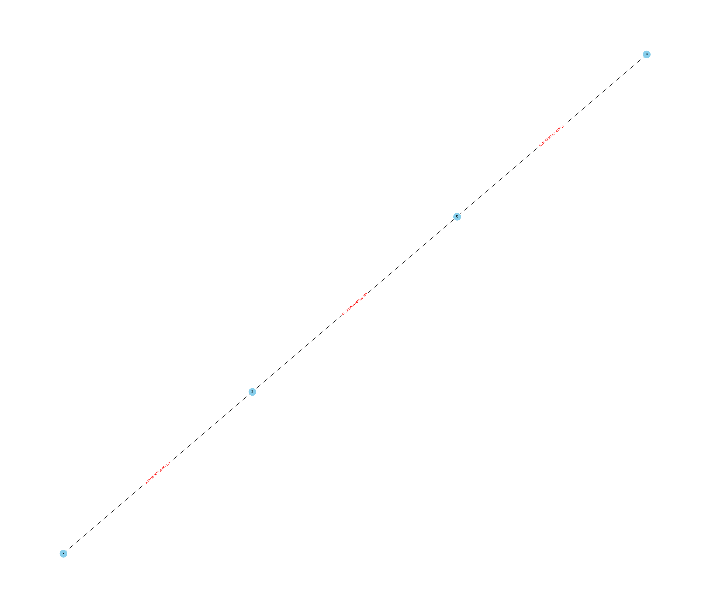
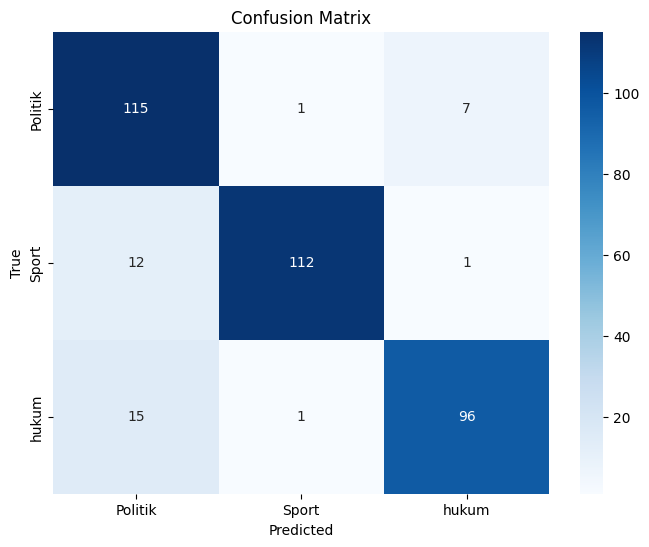

TUGAS 4#
from nltk.tokenize import sent_tokenize
from sklearn.feature_extraction.text import TfidfVectorizer
from sklearn.metrics.pairwise import cosine_similarity
from sklearn.naive_bayes import GaussianNB
from sklearn.svm import SVC
from sklearn.model_selection import train_test_split
from sklearn.metrics import accuracy_score, classification_report, confusion_matrix
import networkx as nx
import seaborn as sns
import matplotlib.pyplot as plt
import warnings
import pandas as pd
import numpy as np
import nltk
import re
import joblib
nltk.download('stopwords')
nltk.download('punkt')
warnings.filterwarnings('ignore')
[nltk_data] Downloading package stopwords to /root/nltk_data...
[nltk_data] Package stopwords is already up-to-date!
[nltk_data] Downloading package punkt to /root/nltk_data...
[nltk_data] Package punkt is already up-to-date!
df = pd.read_csv('https://raw.githubusercontent.com/Feb11F/dataset/main/beritabanten%20(1).csv')
df
| Judul | Isi | Tanggal | Kategori | |
|---|---|---|---|---|
| 0 | Sekretaris KONI Kota Serang Jadi Bacalon Tungg... | SERANG– Satu kandidat calon Ketua Umum (Ketum)... | Rabu 9 Agu 2023, 19:02 WIB | Sport |
| 1 | Prediksi Irak vs Timnas Indonesia Kualifikasi ... | SERANG– Pertandingan Grup F Kualifikasi Piala ... | Kamis 16 Nov 2023, 04:17 WIB | Sport |
| 2 | Dua Pengedar Obat Tanpa Izin Edar Ditangkap Po... | PANDEGLANG– Satuan Reserse Narkoba (Satresnark... | Sabtu 16 Sep 2023, 11:46 WIB | hukum |
| 3 | FIFA Cabut Status Indonesia Sebagai Tuan Rumah... | JAKARTA– Indonesia batal menggelar Piala Dunia... | Kamis 30 Mar 2023, 00:12 WIB | Sport |
| 4 | Tiga Pengurus Panahan Banten Dilirik Pusat | SERANG– Ketua Umum Pengurus Provinsi Persatuan... | Minggu 12 Feb 2023, 12:08 WIB | Sport |
| ... | ... | ... | ... | ... |
| 1195 | Sosialisasi E-Sport di Cilegon Merambah ke Ber... | CILEGON– Demam Electronic Sport atau E-Sport k... | Senin 17 Apr 2023, 12:07 WIB | Sport |
| 1196 | Kontingen Atlet Basket U-15 Banten Bersaing di... | KAB. TANGERANG– Ketua Umum Perbasi Banten, Ahm... | Jumat 6 Jan 2023, 05:07 WIB | Sport |
| 1197 | Rencana Pertemuan SBY dan Megawati, Buka Pelua... | SERANG– Ketua Majelis Tinggi Partai Demokrat S... | Selasa 5 Sep 2023, 03:10 WIB | Politik |
| 1198 | 10 Kejutan Piala Dunia Terbesar Teratas | SERANG– Setelah kemenangan yang mengejutkan sa... | Kamis 24 Nov 2022, 07:13 WIB | Sport |
| 1199 | Timnas Indonesia Berusaha Bangkit Lawan Filipi... | JAKARTA– Timnas Indonesia berusaha bangkit set... | Selasa 21 Nov 2023, 10:04 WIB | Sport |
1200 rows × 4 columns
df = df.dropna()
df.isnull().sum()
Judul 0
Isi 0
Tanggal 0
Kategori 0
dtype: int64
def cleaning(text):
text = re.sub(r'[^\w\s.?!,]', '', text).strip()
return text
df['Cleaning'] = df['Isi'].apply(cleaning)
df['Cleaning']
0 SERANG Satu kandidat calon Ketua Umum Ketum KO...
1 SERANG Pertandingan Grup F Kualifikasi Piala D...
2 PANDEGLANG Satuan Reserse Narkoba Satresnarkob...
3 JAKARTA Indonesia batal menggelar Piala Dunia ...
4 SERANG Ketua Umum Pengurus Provinsi Persatuan ...
...
1195 CILEGON Demam Electronic Sport atau ESport kia...
1196 KAB. TANGERANG Ketua Umum Perbasi Banten, Ahme...
1197 SERANG Ketua Majelis Tinggi Partai Demokrat Su...
1198 SERANG Setelah kemenangan yang mengejutkan saa...
1199 JAKARTA Timnas Indonesia berusaha bangkit sete...
Name: Cleaning, Length: 1200, dtype: object
def tokenizer(text):
text = text.lower()
return sent_tokenize(text)
df['Tokenizing'] = df['Cleaning'].apply(tokenizer)
df['Tokenizing']
0 [serang satu kandidat calon ketua umum ketum k...
1 [serang pertandingan grup f kualifikasi piala ...
2 [pandeglang satuan reserse narkoba satresnarko...
3 [jakarta indonesia batal menggelar piala dunia...
4 [serang ketua umum pengurus provinsi persatuan...
...
1195 [cilegon demam electronic sport atau esport ki...
1196 [kab., tangerang ketua umum perbasi banten, ah...
1197 [serang ketua majelis tinggi partai demokrat s...
1198 [serang setelah kemenangan yang mengejutkan sa...
1199 [jakarta timnas indonesia berusaha bangkit set...
Name: Tokenizing, Length: 1200, dtype: object
def graph_cosine_sim(x, threshold = 0.11):
# TFIDF
vectorizer = TfidfVectorizer()
tfidf = vectorizer.fit_transform(x)
cos_sim = cosine_similarity(tfidf)
G = nx.Graph()
# Mengisi nilai similarity antara kalimat ke dalam edges (Garis Penghubung)
for i in range(len(x)):
for j in range(i+1, len(x)):
sim = cos_sim[i][j]
if sim > threshold:
G.add_edge(i, j, weight=sim)
return G
def plot_graph(G, figsize=(35, 30), node_size=700, node_color='skyblue'):
# Menggambar graf dengan canvas yang diperbesar
pos = nx.spring_layout(G) # Menentukan posisi simpul
labels = nx.get_edge_attributes(G, 'weight')
# Menentukan ukuran canvas
plt.figure(figsize=(35, 30))
# Menggambar graf dengan ukuran canvas yang diperbesar
nx.draw(G, pos, with_labels=True, node_size=700, node_color='skyblue')
nx.draw_networkx_edge_labels(G, pos, edge_labels=labels, font_color='red')
plt.show()
def summarization(x, k = 4, index=1, threshold=0.11, show_centrality=False):
# Memasukkan Nilai Cosine Similirity ke dalam Graph
G = graph_cosine_sim(x, threshold)
# Menghitung nilai dari closeness centrality
centrality = nx.closeness_centrality(G)
if show_centrality:
print(f"Nilai Closeness Centrality Dokumen Ke - {index} : {centrality}")
# Menyusun Kalimat berdasarkan nilai Closeness Centrality tertinggi dan lebih dari treshold
centrality = dict(sorted(centrality.items(), key=lambda item : item[1], reverse=True))
summary_sentences = []
for i, centr in enumerate(centrality.items()):
if i < k:
summary_sentences.append(x[centr[0]])
return (' '.join(summary_sentences), G)
summary, G = summarization(df["Tokenizing"].iloc[:1][0], k = 5, show_centrality=True, threshold=0.2)
Nilai Closeness Centrality Dokumen Ke - 1 : {0: 0.75, 2: 0.75, 4: 0.5, 7: 0.5}
plot_graph(G)

df["Summary"] = df.apply(lambda row : summarization(row['Tokenizing'], index=row.name+1, k=7, show_centrality=True)[0], axis=1)
Nilai Closeness Centrality Dokumen Ke - 1 : {0: 0.75, 1: 0.5294117647058824, 2: 0.75, 3: 0.5625, 4: 0.6428571428571429, 5: 0.5625, 7: 0.6, 9: 0.45, 6: 0.375, 8: 0.4090909090909091}
Nilai Closeness Centrality Dokumen Ke - 2 : {0: 0.5882352941176471, 1: 0.6666666666666666, 6: 0.9090909090909091, 10: 0.625, 2: 0.625, 3: 0.5882352941176471, 9: 0.5555555555555556, 4: 0.5882352941176471, 5: 0.5882352941176471, 7: 0.5, 8: 0.5}
Nilai Closeness Centrality Dokumen Ke - 3 : {}
Nilai Closeness Centrality Dokumen Ke - 4 : {0: 0.7142857142857143, 1: 1.0, 2: 0.8333333333333334, 5: 0.8333333333333334, 3: 0.625, 4: 0.625}
Nilai Closeness Centrality Dokumen Ke - 5 : {0: 0.8333333333333334, 1: 0.7142857142857143, 3: 0.8333333333333334, 4: 1.0, 5: 0.7142857142857143, 2: 0.5555555555555556}
Nilai Closeness Centrality Dokumen Ke - 6 : {0: 1.0, 1: 0.6666666666666666, 2: 0.6666666666666666}
Nilai Closeness Centrality Dokumen Ke - 7 : {0: 0.8, 1: 0.8, 2: 0.8, 3: 1.0, 4: 0.5714285714285714}
Nilai Closeness Centrality Dokumen Ke - 8 : {0: 0.6666666666666666, 1: 1.0, 2: 0.6666666666666666}
Nilai Closeness Centrality Dokumen Ke - 9 : {0: 1.0, 1: 0.7142857142857143, 2: 0.8333333333333334, 3: 0.625, 4: 0.625, 5: 0.625}
Nilai Closeness Centrality Dokumen Ke - 10 : {0: 1.0, 1: 1.0, 2: 1.0}
Nilai Closeness Centrality Dokumen Ke - 11 : {0: 0.5833333333333334, 1: 0.7777777777777778, 5: 0.875, 2: 0.7, 3: 0.5384615384615384, 4: 0.7, 6: 0.5, 7: 0.5}
Nilai Closeness Centrality Dokumen Ke - 12 : {1: 0.6923076923076923, 3: 0.6, 5: 0.6428571428571429, 8: 0.9, 9: 0.6923076923076923, 10: 0.6428571428571429, 2: 0.6, 6: 0.5625, 7: 0.391304347826087, 4: 0.6}
Nilai Closeness Centrality Dokumen Ke - 13 : {0: 1.0, 1: 1.0, 2: 1.0}
Nilai Closeness Centrality Dokumen Ke - 14 : {0: 0.75, 1: 0.8571428571428571, 2: 0.6, 4: 0.8571428571428571, 5: 0.8571428571428571, 3: 0.6666666666666666, 6: 0.5}
Nilai Closeness Centrality Dokumen Ke - 15 : {0: 0.625, 4: 1.0, 5: 0.7142857142857143, 1: 0.8333333333333334, 2: 0.625, 3: 0.625}
Nilai Closeness Centrality Dokumen Ke - 16 : {0: 0.6176470588235294, 3: 0.5675675675675675, 5: 0.5675675675675675, 7: 0.4375, 10: 0.525, 12: 0.6176470588235294, 13: 0.6176470588235294, 17: 0.6363636363636364, 19: 0.5675675675675675, 22: 0.4375, 1: 0.42, 2: 0.3888888888888889, 6: 0.44680851063829785, 9: 0.4772727272727273, 14: 0.4375, 4: 0.42857142857142855, 15: 0.5384615384615384, 8: 0.5121951219512195, 21: 0.42, 11: 0.4375, 18: 0.45652173913043476, 20: 0.3181818181818182}
Nilai Closeness Centrality Dokumen Ke - 17 : {0: 1.0, 1: 1.0, 2: 1.0}
Nilai Closeness Centrality Dokumen Ke - 18 : {1: 0.6666666666666666, 2: 1.0, 3: 0.6666666666666666}
Nilai Closeness Centrality Dokumen Ke - 19 : {1: 0.5, 2: 0.75, 3: 0.75, 4: 0.5}
Nilai Closeness Centrality Dokumen Ke - 20 : {0: 0.75, 1: 0.75, 4: 0.8571428571428571, 5: 0.75, 6: 0.46153846153846156, 2: 0.6666666666666666, 3: 0.6666666666666666}
Nilai Closeness Centrality Dokumen Ke - 21 : {0: 1.0, 1: 0.75, 3: 1.0, 4: 0.75}
Nilai Closeness Centrality Dokumen Ke - 22 : {0: 0.4, 1: 0.47619047619047616, 2: 0.5263157894736842, 6: 0.5555555555555556, 5: 0.6666666666666666, 3: 0.5, 4: 0.5, 8: 0.5555555555555556, 7: 0.4, 9: 0.4166666666666667, 10: 0.30303030303030304}
Nilai Closeness Centrality Dokumen Ke - 23 : {1: 0.7, 4: 1.0, 5: 0.7777777777777778, 6: 0.7777777777777778, 8: 0.7, 2: 0.5833333333333334, 3: 0.6363636363636364, 7: 0.5833333333333334}
Nilai Closeness Centrality Dokumen Ke - 24 : {0: 1.0, 1: 0.6, 2: 0.6, 3: 0.6}
Nilai Closeness Centrality Dokumen Ke - 25 : {0: 1.0, 1: 1.0, 2: 1.0, 3: 1.0, 4: 1.0}
Nilai Closeness Centrality Dokumen Ke - 26 : {0: 0.6428571428571429, 1: 0.5, 3: 0.6428571428571429, 4: 0.5625, 5: 0.6428571428571429, 7: 0.5625, 6: 0.5, 2: 0.375, 9: 0.6428571428571429, 8: 0.4090909090909091}
Nilai Closeness Centrality Dokumen Ke - 27 : {0: 0.6, 1: 0.5, 4: 0.6923076923076923, 5: 0.6923076923076923, 7: 0.75, 6: 0.5625, 2: 0.36, 8: 0.5294117647058824, 3: 0.47368421052631576, 9: 0.6428571428571429}
Nilai Closeness Centrality Dokumen Ke - 28 : {0: 0.75, 1: 1.0, 3: 1.0, 2: 0.75}
Nilai Closeness Centrality Dokumen Ke - 29 : {0: 0.5714285714285714, 1: 1.0, 2: 0.6666666666666666, 3: 0.6666666666666666, 4: 0.5714285714285714}
Nilai Closeness Centrality Dokumen Ke - 30 : {0: 0.7142857142857143, 3: 0.8333333333333334, 5: 0.8333333333333334, 9: 0.7142857142857143, 7: 0.625, 6: 0.625}
Nilai Closeness Centrality Dokumen Ke - 31 : {0: 0.6666666666666666, 1: 1.0, 4: 0.8, 2: 0.6666666666666666, 3: 0.8}
Nilai Closeness Centrality Dokumen Ke - 32 : {0: 1.0, 1: 1.0}
Nilai Closeness Centrality Dokumen Ke - 33 : {}
Nilai Closeness Centrality Dokumen Ke - 34 : {0: 0.6666666666666666, 1: 0.5714285714285714, 3: 0.47058823529411764, 5: 0.5333333333333333, 7: 0.5333333333333333, 2: 0.42105263157894735, 4: 0.4, 6: 0.36363636363636365, 8: 0.36363636363636365}
Nilai Closeness Centrality Dokumen Ke - 35 : {0: 1.0, 1: 1.0, 2: 1.0}
Nilai Closeness Centrality Dokumen Ke - 36 : {0: 1.0, 1: 1.0, 2: 0.75, 3: 0.75}
Nilai Closeness Centrality Dokumen Ke - 37 : {0: 0.45714285714285713, 1: 0.6400000000000001, 8: 0.5333333333333333, 10: 0.45714285714285713, 6: 0.49230769230769234, 7: 0.4266666666666667, 9: 0.5818181818181819, 2: 0.5333333333333333, 3: 0.3764705882352941, 4: 0.1, 5: 0.1}
Nilai Closeness Centrality Dokumen Ke - 38 : {0: 0.5, 1: 0.9090909090909091, 3: 0.5555555555555556, 4: 0.625, 6: 0.5, 7: 0.6666666666666666, 8: 0.7142857142857143, 9: 0.5882352941176471, 10: 0.625, 11: 0.5882352941176471, 2: 0.4166666666666667}
Nilai Closeness Centrality Dokumen Ke - 39 : {0: 0.5675675675675675, 1: 0.5675675675675675, 2: 0.5675675675675675, 7: 0.5753424657534246, 8: 0.4883720930232558, 11: 0.4158415841584158, 17: 0.6363636363636364, 18: 0.4827586206896552, 19: 0.6086956521739131, 34: 0.56, 38: 0.6885245901639344, 40: 0.46153846153846156, 43: 0.49411764705882355, 44: 0.5060240963855421, 5: 0.4827586206896552, 15: 0.525, 30: 0.56, 32: 0.42857142857142855, 35: 0.5454545454545454, 42: 0.5454545454545454, 3: 0.4883720930232558, 4: 0.49411764705882355, 27: 0.37168141592920356, 28: 0.39622641509433965, 12: 0.5384615384615384, 20: 0.39622641509433965, 22: 0.4883720930232558, 36: 0.45161290322580644, 9: 0.3559322033898305, 13: 0.5384615384615384, 23: 0.44680851063829785, 6: 0.4421052631578947, 16: 0.4375, 29: 0.5, 41: 0.5185185185185185, 39: 0.4883720930232558, 26: 0.42, 14: 0.42424242424242425, 25: 0.4375, 31: 0.4375, 33: 0.45161290322580644, 24: 0.4, 21: 0.33070866141732286}
Nilai Closeness Centrality Dokumen Ke - 40 : {0: 1.0, 1: 1.0, 2: 1.0}
Nilai Closeness Centrality Dokumen Ke - 41 : {0: 0.5, 1: 0.75, 6: 0.75, 2: 0.75, 4: 0.8571428571428571, 3: 0.5454545454545454, 5: 0.5}
Nilai Closeness Centrality Dokumen Ke - 42 : {0: 0.5, 7: 0.8888888888888888, 1: 0.8, 2: 0.8, 4: 0.5714285714285714, 5: 0.7272727272727273, 6: 0.7272727272727273, 8: 0.6666666666666666, 3: 0.47058823529411764}
Nilai Closeness Centrality Dokumen Ke - 43 : {0: 0.8333333333333334, 1: 0.8333333333333334, 2: 0.5555555555555556, 4: 0.7142857142857143, 5: 0.8333333333333334, 3: 0.5}
Nilai Closeness Centrality Dokumen Ke - 44 : {0: 1.0, 1: 1.0, 2: 1.0}
Nilai Closeness Centrality Dokumen Ke - 45 : {0: 0.5652173913043478, 1: 0.52, 2: 0.5416666666666666, 3: 0.7222222222222222, 7: 0.4642857142857143, 8: 0.5416666666666666, 11: 0.41935483870967744, 12: 0.3939393939393939, 4: 0.5, 9: 0.5, 13: 0.43333333333333335, 14: 0.34210526315789475, 5: 0.3611111111111111, 10: 0.34210526315789475}
Nilai Closeness Centrality Dokumen Ke - 46 : {0: 1.0, 1: 1.0, 2: 1.0, 3: 1.0}
Nilai Closeness Centrality Dokumen Ke - 47 : {0: 1.0, 1: 1.0, 2: 1.0}
Nilai Closeness Centrality Dokumen Ke - 48 : {0: 0.6666666666666666, 1: 0.8, 3: 0.5714285714285714, 2: 0.5, 4: 0.6666666666666666}
Nilai Closeness Centrality Dokumen Ke - 49 : {1: 1.0, 2: 1.0, 3: 0.75, 4: 0.75}
Nilai Closeness Centrality Dokumen Ke - 50 : {0: 0.6666666666666666, 1: 0.6666666666666666, 3: 0.8571428571428571, 5: 0.6666666666666666, 2: 0.5454545454545454, 4: 0.6666666666666666, 6: 0.5}
Nilai Closeness Centrality Dokumen Ke - 51 : {0: 1.0, 1: 1.0}
Nilai Closeness Centrality Dokumen Ke - 52 : {0: 0.8, 1: 1.0, 2: 1.0, 4: 1.0, 3: 0.8}
Nilai Closeness Centrality Dokumen Ke - 53 : {0: 0.75, 2: 1.0, 3: 1.0, 4: 0.75}
Nilai Closeness Centrality Dokumen Ke - 54 : {0: 0.4666666666666667, 1: 0.7777777777777778, 2: 0.875, 4: 0.7777777777777778, 5: 0.875, 7: 0.7777777777777778, 3: 0.5833333333333334, 6: 0.7}
Nilai Closeness Centrality Dokumen Ke - 55 : {0: 0.625, 1: 1.0, 4: 1.0, 2: 0.8333333333333334, 3: 0.8333333333333334, 5: 0.8333333333333334}
Nilai Closeness Centrality Dokumen Ke - 56 : {}
Nilai Closeness Centrality Dokumen Ke - 57 : {0: 0.35, 2: 0.37692307692307686, 8: 0.35, 9: 0.44545454545454544, 1: 0.2, 4: 0.2, 5: 0.2, 3: 0.44545454545454544, 6: 0.32666666666666666, 7: 0.2333333333333333, 10: 0.28823529411764703}
Nilai Closeness Centrality Dokumen Ke - 58 : {0: 0.7, 2: 1.0, 4: 0.875, 5: 1.0, 7: 0.875, 1: 0.7, 6: 0.7777777777777778, 3: 0.6363636363636364}
Nilai Closeness Centrality Dokumen Ke - 59 : {0: 0.6666666666666666, 1: 0.5, 2: 0.7272727272727273, 3: 0.6153846153846154, 4: 0.8888888888888888, 5: 0.6666666666666666, 8: 0.6153846153846154, 6: 0.6153846153846154, 7: 0.6153846153846154}
Nilai Closeness Centrality Dokumen Ke - 60 : {0: 0.5, 1: 0.875, 2: 0.7, 3: 0.7777777777777778, 4: 0.875, 5: 0.7777777777777778, 7: 0.6363636363636364, 6: 0.6363636363636364}
Nilai Closeness Centrality Dokumen Ke - 61 : {}
Nilai Closeness Centrality Dokumen Ke - 62 : {1: 0.25, 2: 0.25, 5: 0.3333333333333333, 6: 0.5, 7: 0.3333333333333333}
Nilai Closeness Centrality Dokumen Ke - 63 : {0: 1.0, 1: 1.0, 3: 1.0, 4: 1.0, 5: 1.0}
Nilai Closeness Centrality Dokumen Ke - 64 : {0: 0.8, 1: 0.6666666666666666, 2: 1.0, 3: 0.6666666666666666, 4: 0.5714285714285714}
Nilai Closeness Centrality Dokumen Ke - 65 : {0: 1.0, 1: 1.0}
Nilai Closeness Centrality Dokumen Ke - 66 : {0: 0.75, 1: 1.0, 2: 1.0, 3: 0.75}
Nilai Closeness Centrality Dokumen Ke - 67 : {0: 1.0, 2: 1.0, 3: 1.0}
Nilai Closeness Centrality Dokumen Ke - 68 : {0: 1.0, 1: 1.0}
Nilai Closeness Centrality Dokumen Ke - 69 : {0: 1.0, 1: 0.8333333333333334, 2: 0.7142857142857143, 3: 0.8333333333333334, 4: 1.0, 5: 0.7142857142857143}
Nilai Closeness Centrality Dokumen Ke - 70 : {1: 0.5, 2: 0.75, 3: 0.75, 4: 0.5}
Nilai Closeness Centrality Dokumen Ke - 71 : {0: 0.6, 2: 0.5714285714285714, 6: 0.75, 8: 0.5454545454545454, 10: 0.6666666666666666, 1: 0.5217391304347826, 3: 0.5714285714285714, 5: 0.5217391304347826, 9: 0.5454545454545454, 7: 0.5714285714285714, 4: 0.48, 11: 0.5, 12: 0.42857142857142855}
Nilai Closeness Centrality Dokumen Ke - 72 : {0: 0.6666666666666666, 1: 1.0, 2: 0.6666666666666666}
Nilai Closeness Centrality Dokumen Ke - 73 : {0: 0.42857142857142855, 1: 0.6, 6: 0.6, 2: 0.75, 3: 0.5454545454545454, 5: 0.5454545454545454, 4: 0.42857142857142855}
Nilai Closeness Centrality Dokumen Ke - 74 : {1: 0.75, 3: 0.75, 5: 0.5, 2: 0.5}
Nilai Closeness Centrality Dokumen Ke - 75 : {0: 0.55, 2: 0.6875, 3: 0.7333333333333333, 9: 0.7333333333333333, 1: 0.4230769230769231, 4: 0.6470588235294118, 7: 0.6875, 8: 0.5, 5: 0.5789473684210527, 6: 0.5, 11: 0.4782608695652174, 10: 0.3333333333333333}
Nilai Closeness Centrality Dokumen Ke - 76 : {1: 0.4666666666666667, 6: 0.7777777777777778, 2: 0.5833333333333334, 4: 0.7, 5: 0.7777777777777778, 7: 0.7777777777777778, 3: 0.5833333333333334, 8: 0.5833333333333334}
Nilai Closeness Centrality Dokumen Ke - 77 : {0: 1.0, 1: 1.0}
Nilai Closeness Centrality Dokumen Ke - 78 : {0: 0.625, 2: 0.625, 4: 0.625, 1: 0.4166666666666667, 3: 0.625, 5: 0.4166666666666667}
Nilai Closeness Centrality Dokumen Ke - 79 : {}
Nilai Closeness Centrality Dokumen Ke - 80 : {1: 0.5882352941176471, 4: 0.5882352941176471, 7: 0.625, 8: 0.7692307692307693, 9: 0.6666666666666666, 2: 0.5263157894736842, 3: 0.5263157894736842, 5: 0.43478260869565216, 11: 0.5555555555555556, 6: 0.37037037037037035, 10: 0.5555555555555556}
Nilai Closeness Centrality Dokumen Ke - 81 : {0: 1.0, 1: 1.0, 2: 1.0}
Nilai Closeness Centrality Dokumen Ke - 82 : {0: 0.5833333333333334, 3: 0.7777777777777778, 6: 0.5833333333333334, 7: 0.5384615384615384, 1: 0.5384615384615384, 2: 0.5, 4: 0.7, 5: 0.6363636363636364}
Nilai Closeness Centrality Dokumen Ke - 83 : {0: 0.6666666666666666, 1: 1.0, 2: 0.6666666666666666}
Nilai Closeness Centrality Dokumen Ke - 84 : {0: 1.0, 1: 1.0, 2: 1.0, 3: 1.0}
Nilai Closeness Centrality Dokumen Ke - 85 : {1: 0.7142857142857143, 2: 0.5555555555555556, 5: 0.5555555555555556, 7: 0.45454545454545453, 4: 0.38461538461538464, 6: 0.38461538461538464}
Nilai Closeness Centrality Dokumen Ke - 86 : {0: 1.0, 1: 1.0}
Nilai Closeness Centrality Dokumen Ke - 87 : {0: 0.6666666666666666, 1: 1.0, 2: 0.6666666666666666}
Nilai Closeness Centrality Dokumen Ke - 88 : {1: 0.8, 2: 1.0, 3: 0.8, 4: 0.8, 5: 0.5714285714285714}
Nilai Closeness Centrality Dokumen Ke - 89 : {1: 0.42857142857142855, 8: 0.6666666666666666, 2: 0.5454545454545454, 3: 0.8571428571428571, 7: 0.6666666666666666, 5: 0.6, 6: 0.75}
Nilai Closeness Centrality Dokumen Ke - 90 : {0: 1.0, 1: 1.0, 2: 1.0, 3: 1.0}
Nilai Closeness Centrality Dokumen Ke - 91 : {0: 0.8, 2: 1.0, 5: 1.0, 6: 1.0, 3: 0.8}
Nilai Closeness Centrality Dokumen Ke - 92 : {0: 1.0, 1: 1.0, 2: 0.625, 3: 0.625, 4: 0.7142857142857143, 5: 0.7142857142857143}
Nilai Closeness Centrality Dokumen Ke - 93 : {0: 0.8, 1: 0.8, 2: 0.5714285714285714, 3: 0.8, 4: 0.5}
Nilai Closeness Centrality Dokumen Ke - 94 : {0: 0.6363636363636364, 1: 0.7, 3: 0.7, 5: 0.5, 8: 0.7777777777777778, 2: 0.5833333333333334, 4: 0.3684210526315789, 7: 0.5384615384615384}
Nilai Closeness Centrality Dokumen Ke - 95 : {0: 0.4166666666666667, 2: 0.5, 6: 0.39215686274509803, 9: 0.5128205128205128, 13: 0.31746031746031744, 1: 0.37735849056603776, 4: 0.39215686274509803, 8: 0.45454545454545453, 3: 0.35714285714285715, 14: 0.5, 21: 0.2857142857142857, 7: 0.425531914893617, 10: 0.30303030303030304, 11: 0.20202020202020202, 12: 0.25, 16: 0.36363636363636365, 18: 0.35714285714285715, 22: 0.3508771929824561, 15: 0.2777777777777778, 17: 0.28169014084507044, 19: 0.2631578947368421}
Nilai Closeness Centrality Dokumen Ke - 96 : {0: 0.7272727272727273, 1: 0.7272727272727273, 3: 0.6666666666666666, 6: 0.8888888888888888, 7: 0.7272727272727273, 8: 0.5333333333333333, 2: 0.5333333333333333, 5: 0.5714285714285714, 4: 0.5714285714285714}
Nilai Closeness Centrality Dokumen Ke - 97 : {0: 0.6153846153846154, 2: 1.0, 7: 0.8888888888888888, 8: 0.5714285714285714, 1: 0.7272727272727273, 3: 0.8, 4: 0.8, 5: 0.8, 6: 0.7272727272727273}
Nilai Closeness Centrality Dokumen Ke - 98 : {0: 0.25, 1: 0.25, 2: 0.3333333333333333, 3: 0.5, 4: 0.3333333333333333}
Nilai Closeness Centrality Dokumen Ke - 99 : {1: 0.5263157894736842, 6: 0.5555555555555556, 11: 0.45454545454545453, 2: 0.4, 4: 0.4, 7: 0.38461538461538464, 3: 0.37037037037037035, 10: 0.38461538461538464, 12: 0.3225806451612903, 14: 0.3448275862068966, 15: 0.2631578947368421}
Nilai Closeness Centrality Dokumen Ke - 100 : {0: 0.42424242424242425, 1: 0.7, 2: 0.6363636363636364, 4: 0.7, 6: 0.7777777777777778, 8: 0.6086956521739131, 9: 0.875, 13: 0.6363636363636364, 14: 0.7368421052631579, 3: 0.6086956521739131, 7: 0.5384615384615384, 10: 0.6086956521739131, 11: 0.56, 12: 0.6363636363636364, 15: 0.4375}
Nilai Closeness Centrality Dokumen Ke - 101 : {0: 0.8, 1: 1.0, 2: 1.0, 3: 0.8, 4: 0.6666666666666666}
Nilai Closeness Centrality Dokumen Ke - 102 : {}
Nilai Closeness Centrality Dokumen Ke - 103 : {1: 0.5161290322580645, 2: 0.5714285714285714, 6: 0.7272727272727273, 14: 0.64, 3: 0.38095238095238093, 8: 0.47058823529411764, 17: 0.4444444444444444, 4: 0.37209302325581395, 5: 0.5161290322580645, 9: 0.38095238095238093, 7: 0.5161290322580645, 13: 0.5517241379310345, 10: 0.5333333333333333, 11: 0.5925925925925926, 12: 0.4444444444444444, 15: 0.5, 16: 0.5161290322580645}
Nilai Closeness Centrality Dokumen Ke - 104 : {}
Nilai Closeness Centrality Dokumen Ke - 105 : {0: 1.0, 1: 0.625, 2: 1.0, 3: 0.8333333333333334, 4: 0.8333333333333334, 5: 0.8333333333333334}
Nilai Closeness Centrality Dokumen Ke - 106 : {0: 0.6, 1: 0.8571428571428571, 3: 0.8571428571428571, 2: 0.6, 4: 0.75, 6: 0.6, 5: 0.6}
Nilai Closeness Centrality Dokumen Ke - 107 : {0: 0.75, 1: 0.631578947368421, 2: 0.5454545454545454, 4: 0.5714285714285714, 5: 0.6, 6: 0.631578947368421, 10: 0.6666666666666666, 11: 0.7058823529411765, 12: 0.631578947368421, 9: 0.5454545454545454, 3: 0.36363636363636365, 7: 0.6, 8: 0.46153846153846156}
Nilai Closeness Centrality Dokumen Ke - 108 : {0: 0.4, 1: 0.26666666666666666, 2: 0.26666666666666666, 3: 0.4, 4: 0.26666666666666666, 6: 0.26666666666666666}
Nilai Closeness Centrality Dokumen Ke - 109 : {0: 1.0, 1: 1.0}
Nilai Closeness Centrality Dokumen Ke - 110 : {}
Nilai Closeness Centrality Dokumen Ke - 111 : {0: 0.8, 1: 0.6666666666666666, 3: 0.5714285714285714, 4: 0.5714285714285714, 2: 0.4444444444444444}
Nilai Closeness Centrality Dokumen Ke - 112 : {0: 0.7142857142857143, 2: 1.0, 5: 0.8333333333333334, 6: 0.8333333333333334, 1: 0.8333333333333334, 3: 0.625}
Nilai Closeness Centrality Dokumen Ke - 113 : {0: 0.36, 3: 0.6, 1: 0.44999999999999996, 6: 0.44999999999999996, 4: 0.2, 5: 0.2}
Nilai Closeness Centrality Dokumen Ke - 114 : {0: 0.7692307692307693, 1: 0.45454545454545453, 2: 0.5, 3: 0.5263157894736842, 4: 0.5263157894736842, 5: 0.5555555555555556, 6: 0.45454545454545453, 8: 0.625, 7: 0.3448275862068966, 9: 0.47619047619047616, 10: 0.43478260869565216}
Nilai Closeness Centrality Dokumen Ke - 115 : {0: 0.6875, 1: 0.7857142857142857, 2: 1.0, 4: 0.7857142857142857, 7: 0.7333333333333333, 8: 0.9166666666666666, 10: 0.9166666666666666, 3: 0.6875, 9: 0.7333333333333333, 5: 0.6470588235294118, 6: 0.6875, 12: 0.55}
Nilai Closeness Centrality Dokumen Ke - 116 : {1: 1.0, 2: 0.625, 3: 0.7142857142857143, 4: 1.0, 5: 0.8333333333333334, 6: 0.7142857142857143}
Nilai Closeness Centrality Dokumen Ke - 117 : {1: 0.8333333333333334, 2: 0.625, 3: 1.0, 4: 0.7142857142857143, 6: 0.625, 5: 0.625}
Nilai Closeness Centrality Dokumen Ke - 118 : {1: 1.0, 2: 1.0}
Nilai Closeness Centrality Dokumen Ke - 119 : {0: 0.55, 1: 0.55, 2: 0.7857142857142857, 5: 0.6875, 10: 0.55, 3: 0.6111111111111112, 4: 0.6470588235294118, 6: 0.5789473684210527, 7: 0.5789473684210527, 8: 0.4583333333333333, 9: 0.4230769230769231, 11: 0.3793103448275862}
Nilai Closeness Centrality Dokumen Ke - 120 : {0: 0.26685133887349954, 1: 0.3306636155606407, 3: 0.2578055307760928, 5: 0.21125730994152048, 9: 0.3168859649122807, 2: 0.2578055307760928, 4: 0.3104189044038668, 14: 0.36215538847117795, 8: 0.20280701754385963, 6: 0.05263157894736842, 7: 0.05263157894736842, 10: 0.276555023923445, 11: 0.17686658506731945, 16: 0.21729323308270676, 12: 0.3456937799043062, 18: 0.3042105263157895, 19: 0.2535087719298246, 17: 0.21729323308270676, 20: 0.26225045372050815, 21: 0.17686658506731945}
Nilai Closeness Centrality Dokumen Ke - 121 : {1: 0.5, 2: 0.5454545454545454, 7: 0.6666666666666666, 8: 0.375, 4: 0.4, 6: 0.6, 5: 0.4}
Nilai Closeness Centrality Dokumen Ke - 122 : {}
Nilai Closeness Centrality Dokumen Ke - 123 : {0: 1.0, 1: 1.0}
Nilai Closeness Centrality Dokumen Ke - 124 : {}
Nilai Closeness Centrality Dokumen Ke - 125 : {0: 1.0, 1: 1.0}
Nilai Closeness Centrality Dokumen Ke - 126 : {0: 1.0, 1: 1.0, 2: 1.0}
Nilai Closeness Centrality Dokumen Ke - 127 : {0: 1.0, 1: 1.0, 2: 1.0}
Nilai Closeness Centrality Dokumen Ke - 128 : {0: 1.0, 1: 1.0, 2: 1.0, 3: 1.0}
Nilai Closeness Centrality Dokumen Ke - 129 : {0: 0.4074074074074074, 4: 0.6470588235294118, 1: 0.55, 2: 0.5238095238095238, 10: 0.4782608695652174, 3: 0.5238095238095238, 6: 0.4583333333333333, 5: 0.5, 7: 0.6470588235294118, 8: 0.4583333333333333, 9: 0.5238095238095238, 11: 0.3333333333333333}
Nilai Closeness Centrality Dokumen Ke - 130 : {0: 0.75, 1: 0.75, 2: 1.0, 3: 0.6}
Nilai Closeness Centrality Dokumen Ke - 131 : {0: 0.6875, 1: 0.5789473684210527, 6: 0.7857142857142857, 7: 0.6875, 8: 0.6111111111111112, 9: 0.8461538461538461, 10: 0.7333333333333333, 11: 0.5789473684210527, 2: 0.5, 3: 0.5, 4: 0.6470588235294118, 5: 0.4074074074074074}
Nilai Closeness Centrality Dokumen Ke - 132 : {0: 0.6666666666666666, 1: 1.0, 3: 0.6666666666666666}
Nilai Closeness Centrality Dokumen Ke - 133 : {0: 1.0, 1: 0.6666666666666666, 2: 0.6666666666666666}
Nilai Closeness Centrality Dokumen Ke - 134 : {0: 1.0, 1: 1.0, 3: 1.0}
Nilai Closeness Centrality Dokumen Ke - 135 : {0: 1.0, 1: 1.0}
Nilai Closeness Centrality Dokumen Ke - 136 : {0: 1.0, 1: 1.0}
Nilai Closeness Centrality Dokumen Ke - 137 : {0: 0.46153846153846156, 1: 0.75, 2: 0.6, 4: 0.6666666666666666, 5: 0.8571428571428571, 3: 0.6, 6: 0.5454545454545454}
Nilai Closeness Centrality Dokumen Ke - 138 : {0: 0.6666666666666666, 2: 0.8, 3: 0.8, 1: 0.5, 4: 0.5}
Nilai Closeness Centrality Dokumen Ke - 139 : {0: 0.45161290322580644, 2: 0.3888888888888889, 3: 0.5833333333333334, 4: 0.5833333333333334, 1: 0.4827586206896552, 15: 0.4375, 9: 0.5185185185185185, 10: 0.45161290322580644, 11: 0.5833333333333334, 5: 0.45161290322580644, 8: 0.3888888888888889, 7: 0.2857142857142857, 12: 0.42424242424242425, 14: 0.45161290322580644, 13: 0.3684210526315789}
Nilai Closeness Centrality Dokumen Ke - 140 : {0: 1.0, 1: 0.6666666666666666, 2: 0.6666666666666666}
Nilai Closeness Centrality Dokumen Ke - 141 : {0: 0.7142857142857143, 1: 0.5102040816326531, 2: 0.44642857142857145, 3: 0.5102040816326531, 4: 0.44642857142857145, 6: 0.39682539682539686, 5: 0.14285714285714285, 8: 0.14285714285714285}
Nilai Closeness Centrality Dokumen Ke - 142 : {0: 0.8333333333333334, 1: 0.5, 3: 0.7142857142857143, 4: 0.8333333333333334, 5: 0.625, 2: 0.5555555555555556}
Nilai Closeness Centrality Dokumen Ke - 143 : {0: 1.0, 1: 1.0}
Nilai Closeness Centrality Dokumen Ke - 144 : {0: 0.8, 1: 0.6666666666666666, 2: 0.8, 3: 0.5, 4: 0.5}
Nilai Closeness Centrality Dokumen Ke - 145 : {0: 0.6428571428571428, 1: 0.6428571428571428, 3: 0.5, 4: 0.6428571428571428, 6: 0.5625, 10: 0.40909090909090906, 5: 0.40909090909090906, 7: 0.125, 9: 0.125}
Nilai Closeness Centrality Dokumen Ke - 146 : {0: 0.6666666666666666, 1: 0.6666666666666666, 3: 1.0, 2: 0.6666666666666666, 4: 0.6666666666666666}
Nilai Closeness Centrality Dokumen Ke - 147 : {0: 0.9333333333333333, 1: 0.6666666666666666, 2: 0.56, 3: 0.7368421052631579, 4: 0.5833333333333334, 5: 0.6363636363636364, 6: 0.7368421052631579, 7: 0.6086956521739131, 8: 0.7, 9: 0.7777777777777778, 10: 0.6086956521739131, 11: 0.7, 13: 0.6666666666666666, 14: 0.7, 12: 0.6363636363636364}
Nilai Closeness Centrality Dokumen Ke - 148 : {0: 0.75, 1: 1.0, 2: 1.0, 3: 0.75}
Nilai Closeness Centrality Dokumen Ke - 149 : {1: 1.0, 2: 1.0, 3: 1.0}
Nilai Closeness Centrality Dokumen Ke - 150 : {0: 0.3125, 30: 0.44776119402985076, 2: 0.44776119402985076, 3: 0.46153846153846156, 24: 0.33707865168539325, 26: 0.42857142857142855, 28: 0.43478260869565216, 29: 0.46875, 5: 0.36585365853658536, 7: 0.36585365853658536, 9: 0.4838709677419355, 10: 0.375, 14: 0.410958904109589, 4: 0.39473684210526316, 6: 0.38461538461538464, 8: 0.3488372093023256, 17: 0.46153846153846156, 13: 0.42857142857142855, 12: 0.2912621359223301, 22: 0.46153846153846156, 25: 0.5263157894736842, 33: 0.32967032967032966, 11: 0.29411764705882354, 15: 0.43478260869565216, 18: 0.40540540540540543, 23: 0.3614457831325301, 32: 0.33707865168539325, 20: 0.35294117647058826, 21: 0.3191489361702128, 27: 0.40540540540540543, 31: 0.33707865168539325}
Nilai Closeness Centrality Dokumen Ke - 151 : {0: 0.45454545454545453, 3: 0.7142857142857143, 1: 0.8333333333333334, 2: 0.5, 4: 0.5555555555555556, 5: 0.7142857142857143}
Nilai Closeness Centrality Dokumen Ke - 152 : {0: 1.0, 1: 1.0}
Nilai Closeness Centrality Dokumen Ke - 153 : {0: 0.8, 1: 0.8, 2: 1.0, 3: 0.8, 4: 0.5714285714285714}
Nilai Closeness Centrality Dokumen Ke - 154 : {0: 0.46153846153846156, 1: 0.75, 2: 0.75, 3: 0.8571428571428571, 4: 0.6, 5: 0.6, 6: 0.6}
Nilai Closeness Centrality Dokumen Ke - 155 : {0: 0.6666666666666666, 1: 0.8, 2: 1.0, 4: 0.8, 3: 0.6666666666666666}
Nilai Closeness Centrality Dokumen Ke - 156 : {0: 1.0, 1: 0.6666666666666666, 2: 0.8, 3: 1.0, 4: 0.8}
Nilai Closeness Centrality Dokumen Ke - 157 : {}
Nilai Closeness Centrality Dokumen Ke - 158 : {0: 1.0, 1: 1.0}
Nilai Closeness Centrality Dokumen Ke - 159 : {0: 0.6666666666666666, 1: 0.5714285714285714, 3: 0.631578947368421, 5: 0.5454545454545454, 6: 0.7058823529411765, 8: 0.631578947368421, 9: 0.6666666666666666, 13: 0.5, 2: 0.375, 7: 0.4444444444444444, 14: 0.4, 10: 0.4444444444444444, 11: 0.3157894736842105}
Nilai Closeness Centrality Dokumen Ke - 160 : {0: 0.6666666666666666, 4: 0.75, 6: 0.8571428571428571, 7: 0.75, 1: 0.5, 2: 0.5454545454545454, 3: 0.46153846153846156}
Nilai Closeness Centrality Dokumen Ke - 161 : {0: 1.0, 1: 0.7142857142857143, 2: 0.8333333333333334, 3: 0.625, 4: 0.625, 5: 0.8333333333333334}
Nilai Closeness Centrality Dokumen Ke - 162 : {0: 0.3333333333333333, 1: 0.5, 2: 0.3333333333333333, 3: 0.25, 4: 0.25}
Nilai Closeness Centrality Dokumen Ke - 163 : {0: 0.8, 3: 0.6666666666666666, 4: 1.0, 5: 0.6666666666666666, 1: 0.5714285714285714}
Nilai Closeness Centrality Dokumen Ke - 164 : {0: 0.6666666666666666, 1: 0.7272727272727273, 2: 0.8, 3: 0.8, 6: 1.0, 5: 0.6153846153846154, 4: 0.6153846153846154, 8: 0.6153846153846154, 7: 0.5714285714285714}
Nilai Closeness Centrality Dokumen Ke - 165 : {0: 0.7333333333333333, 3: 0.6470588235294118, 4: 0.8461538461538461, 5: 0.7333333333333333, 6: 0.55, 8: 0.6875, 9: 0.7333333333333333, 11: 0.7333333333333333, 1: 0.5789473684210527, 2: 0.6875, 7: 0.7857142857142857, 10: 0.4782608695652174}
Nilai Closeness Centrality Dokumen Ke - 166 : {0: 0.8333333333333334, 1: 0.7142857142857143, 2: 0.8333333333333334, 3: 0.5555555555555556, 5: 0.7142857142857143, 4: 0.5555555555555556}
Nilai Closeness Centrality Dokumen Ke - 167 : {0: 1.0, 1: 1.0}
Nilai Closeness Centrality Dokumen Ke - 168 : {}
Nilai Closeness Centrality Dokumen Ke - 169 : {0: 1.0, 1: 1.0}
Nilai Closeness Centrality Dokumen Ke - 170 : {0: 0.6363636363636364, 3: 0.5833333333333334, 4: 0.5384615384615384, 7: 0.7, 1: 0.4375, 5: 0.5833333333333334, 2: 0.3888888888888889, 6: 0.4375}
Nilai Closeness Centrality Dokumen Ke - 171 : {0: 0.75, 2: 1.0, 3: 0.75, 1: 0.6}
Nilai Closeness Centrality Dokumen Ke - 172 : {0: 0.6, 2: 1.0, 1: 0.6, 4: 0.6}
Nilai Closeness Centrality Dokumen Ke - 173 : {0: 0.4117647058823529, 1: 0.509090909090909, 3: 0.509090909090909, 9: 0.5833333333333334, 17: 0.4444444444444444, 2: 0.34146341463414637, 4: 0.37333333333333335, 8: 0.56, 10: 0.5283018867924528, 11: 0.4375, 23: 0.56, 24: 0.5283018867924528, 14: 0.5490196078431373, 29: 0.42424242424242425, 5: 0.37333333333333335, 6: 0.4375, 26: 0.5185185185185185, 16: 0.4666666666666667, 21: 0.39436619718309857, 22: 0.4666666666666667, 7: 0.4444444444444444, 15: 0.4745762711864407, 18: 0.3835616438356164, 13: 0.4666666666666667, 12: 0.35, 27: 0.4, 25: 0.3218390804597701, 19: 0.2857142857142857, 20: 0.224}
Nilai Closeness Centrality Dokumen Ke - 174 : {1: 0.75, 2: 1.0, 4: 1.0, 3: 0.75}
Nilai Closeness Centrality Dokumen Ke - 175 : {1: 0.6666666666666666, 2: 1.0, 3: 0.6666666666666666}
Nilai Closeness Centrality Dokumen Ke - 176 : {0: 0.5833333333333334, 1: 0.6363636363636364, 3: 0.6363636363636364, 5: 0.7, 2: 0.5833333333333334, 6: 0.7, 4: 0.4375, 7: 0.4375}
Nilai Closeness Centrality Dokumen Ke - 177 : {0: 0.6666666666666666, 1: 1.0, 2: 0.6666666666666666}
Nilai Closeness Centrality Dokumen Ke - 178 : {0: 1.0, 1: 1.0}
Nilai Closeness Centrality Dokumen Ke - 179 : {0: 0.4444444444444444, 1: 0.5714285714285714, 2: 0.5161290322580645, 4: 0.5714285714285714, 5: 0.64, 11: 0.7272727272727273, 13: 0.5925925925925926, 16: 0.5517241379310345, 3: 0.32, 10: 0.45714285714285713, 6: 0.48484848484848486, 9: 0.4444444444444444, 7: 0.5333333333333333, 8: 0.4444444444444444, 12: 0.45714285714285713, 15: 0.4, 14: 0.2909090909090909}
Nilai Closeness Centrality Dokumen Ke - 180 : {0: 1.0, 1: 1.0}
Nilai Closeness Centrality Dokumen Ke - 181 : {0: 1.0, 2: 1.0, 3: 1.0}
Nilai Closeness Centrality Dokumen Ke - 182 : {0: 0.8333333333333334, 1: 0.8333333333333334, 2: 0.6666666666666666, 4: 0.6666666666666666, 5: 0.625, 6: 0.625, 8: 0.7142857142857143, 9: 0.625, 11: 0.5882352941176471, 10: 0.5, 3: 0.5263157894736842}
Nilai Closeness Centrality Dokumen Ke - 183 : {0: 0.6666666666666666, 1: 1.0, 2: 0.8, 3: 0.5714285714285714, 4: 0.6666666666666666}
Nilai Closeness Centrality Dokumen Ke - 184 : {0: 0.8, 2: 0.8, 3: 0.8, 5: 0.8, 1: 0.6666666666666666}
Nilai Closeness Centrality Dokumen Ke - 185 : {0: 0.75, 1: 0.75, 2: 1.0, 4: 0.6}
Nilai Closeness Centrality Dokumen Ke - 186 : {0: 1.0, 1: 0.8333333333333334, 2: 0.8333333333333334, 3: 1.0, 4: 0.625, 5: 0.8333333333333334}
Nilai Closeness Centrality Dokumen Ke - 187 : {0: 1.0, 1: 1.0, 2: 1.0, 3: 1.0, 4: 1.0}
Nilai Closeness Centrality Dokumen Ke - 188 : {0: 1.0, 1: 1.0}
Nilai Closeness Centrality Dokumen Ke - 189 : {0: 1.0, 1: 0.75, 2: 0.75, 3: 1.0}
Nilai Closeness Centrality Dokumen Ke - 190 : {0: 0.8, 1: 1.0, 2: 1.0, 3: 1.0, 4: 0.8}
Nilai Closeness Centrality Dokumen Ke - 191 : {0: 0.75, 1: 0.5, 2: 0.75, 3: 0.5}
Nilai Closeness Centrality Dokumen Ke - 192 : {1: 0.6153846153846154, 2: 0.5714285714285714, 3: 0.6153846153846154, 6: 0.5714285714285714, 7: 0.8, 4: 0.5714285714285714, 5: 0.5333333333333333, 8: 0.5333333333333333, 9: 0.36363636363636365}
Nilai Closeness Centrality Dokumen Ke - 193 : {0: 0.5714285714285714, 2: 1.0, 1: 0.6666666666666666, 4: 0.6666666666666666, 3: 0.5714285714285714}
Nilai Closeness Centrality Dokumen Ke - 194 : {0: 1.0, 1: 0.8, 2: 1.0, 3: 1.0, 4: 0.8}
Nilai Closeness Centrality Dokumen Ke - 195 : {0: 0.625, 1: 0.5882352941176471, 2: 0.6666666666666666, 3: 0.5, 6: 0.6666666666666666, 8: 0.5, 7: 0.45454545454545453, 4: 0.47619047619047616, 9: 0.625, 5: 0.47619047619047616, 10: 0.4}
Nilai Closeness Centrality Dokumen Ke - 196 : {0: 1.0, 1: 1.0, 2: 1.0, 3: 1.0}
Nilai Closeness Centrality Dokumen Ke - 197 : {0: 1.0, 1: 1.0, 2: 1.0}
Nilai Closeness Centrality Dokumen Ke - 198 : {0: 1.0, 1: 1.0, 2: 1.0, 3: 1.0}
Nilai Closeness Centrality Dokumen Ke - 199 : {0: 0.6111111111111112, 1: 0.7333333333333333, 3: 0.6470588235294118, 6: 0.7857142857142857, 10: 0.6470588235294118, 11: 0.4782608695652174, 2: 0.6111111111111112, 4: 0.7333333333333333, 8: 0.7857142857142857, 7: 0.4782608695652174, 5: 0.55, 9: 0.55}
Nilai Closeness Centrality Dokumen Ke - 200 : {0: 1.0, 1: 1.0, 2: 0.8, 3: 0.8, 5: 0.6666666666666666}
Nilai Closeness Centrality Dokumen Ke - 201 : {0: 0.75, 1: 1.0, 2: 0.75, 3: 0.6}
Nilai Closeness Centrality Dokumen Ke - 202 : {0: 1.0, 1: 1.0}
Nilai Closeness Centrality Dokumen Ke - 203 : {0: 0.6666666666666666, 1: 0.8571428571428571, 2: 0.75, 3: 0.8571428571428571, 5: 0.75, 6: 0.5454545454545454, 4: 0.5}
Nilai Closeness Centrality Dokumen Ke - 204 : {0: 0.5, 5: 0.7142857142857143, 6: 0.5555555555555556, 8: 0.5, 1: 0.6666666666666666, 2: 0.45454545454545453, 3: 0.5263157894736842, 7: 0.5882352941176471, 9: 0.625, 4: 0.5, 10: 0.4}
Nilai Closeness Centrality Dokumen Ke - 205 : {0: 0.75, 1: 0.75, 2: 1.0, 3: 0.6}
Nilai Closeness Centrality Dokumen Ke - 206 : {0: 0.625, 1: 0.5882352941176471, 2: 0.5, 5: 0.6666666666666666, 10: 0.5, 11: 0.47619047619047616, 7: 0.47619047619047616, 8: 0.5, 3: 0.5555555555555556, 4: 0.3448275862068966, 9: 0.3448275862068966}
Nilai Closeness Centrality Dokumen Ke - 207 : {0: 0.3333333333333333, 1: 0.3333333333333333, 2: 0.3333333333333333, 3: 0.3333333333333333}
Nilai Closeness Centrality Dokumen Ke - 208 : {0: 0.8333333333333334, 1: 0.625, 2: 1.0, 6: 0.7142857142857143, 7: 0.625, 8: 0.625}
Nilai Closeness Centrality Dokumen Ke - 209 : {0: 0.75, 1: 1.0, 2: 0.75, 3: 0.6}
Nilai Closeness Centrality Dokumen Ke - 210 : {}
Nilai Closeness Centrality Dokumen Ke - 211 : {0: 0.6363636363636364, 5: 0.875, 6: 0.7777777777777778, 8: 0.6363636363636364, 1: 0.7, 2: 0.7, 4: 0.5384615384615384, 7: 0.5833333333333334}
Nilai Closeness Centrality Dokumen Ke - 212 : {0: 0.5263157894736842, 1: 0.7142857142857143, 2: 0.5263157894736842, 3: 0.6666666666666666, 10: 0.5263157894736842, 4: 0.625, 5: 0.5555555555555556, 7: 0.625, 6: 0.45454545454545453, 8: 0.5263157894736842, 9: 0.5263157894736842}
Nilai Closeness Centrality Dokumen Ke - 213 : {0: 1.0, 1: 0.625, 2: 0.625, 3: 0.7142857142857143, 4: 0.5555555555555556, 5: 0.7142857142857143}
Nilai Closeness Centrality Dokumen Ke - 214 : {0: 1.0, 1: 1.0}
Nilai Closeness Centrality Dokumen Ke - 215 : {0: 1.0, 1: 0.625, 2: 0.7142857142857143, 3: 0.7142857142857143, 4: 0.625, 6: 0.7142857142857143}
Nilai Closeness Centrality Dokumen Ke - 216 : {0: 0.6666666666666666, 1: 0.6, 3: 0.6666666666666666, 4: 0.75, 2: 0.75, 6: 0.5454545454545454, 5: 0.46153846153846156}
Nilai Closeness Centrality Dokumen Ke - 217 : {0: 0.5238095238095238, 1: 0.7857142857142857, 3: 0.5238095238095238, 5: 0.7333333333333333, 2: 0.5, 7: 0.5, 9: 0.5238095238095238, 10: 0.6470588235294118, 11: 0.55, 6: 0.44, 4: 0.44, 12: 0.44}
Nilai Closeness Centrality Dokumen Ke - 218 : {0: 0.7777777777777778, 1: 0.6363636363636364, 2: 0.7, 4: 0.7, 8: 0.7, 9: 0.5384615384615384, 3: 0.7, 5: 0.5384615384615384}
Nilai Closeness Centrality Dokumen Ke - 219 : {0: 0.4444444444444444, 1: 0.47058823529411764, 2: 0.6153846153846154, 3: 0.3333333333333333, 4: 0.5714285714285714, 5: 0.5333333333333333, 6: 0.42105263157894735, 7: 0.36363636363636365, 8: 0.3076923076923077}
Nilai Closeness Centrality Dokumen Ke - 220 : {0: 0.35, 1: 0.5, 5: 0.7, 2: 0.3684210526315789, 4: 0.5384615384615384, 3: 0.35, 6: 0.5, 7: 0.5}
Nilai Closeness Centrality Dokumen Ke - 221 : {0: 1.0, 1: 1.0}
Nilai Closeness Centrality Dokumen Ke - 222 : {0: 0.6363636363636364, 2: 0.4117647058823529, 4: 0.6363636363636364, 7: 0.5384615384615384, 1: 0.4117647058823529, 3: 0.4117647058823529, 5: 0.5384615384615384, 6: 0.3684210526315789}
Nilai Closeness Centrality Dokumen Ke - 223 : {0: 0.7777777777777778, 1: 0.7777777777777778, 2: 0.7777777777777778, 3: 0.7777777777777778, 4: 0.5833333333333334, 5: 0.5833333333333334, 6: 0.4666666666666667, 7: 0.4666666666666667}
Nilai Closeness Centrality Dokumen Ke - 224 : {0: 0.8333333333333334, 1: 0.625, 2: 1.0, 3: 0.7142857142857143, 5: 0.7142857142857143, 4: 0.7142857142857143}
Nilai Closeness Centrality Dokumen Ke - 225 : {}
Nilai Closeness Centrality Dokumen Ke - 226 : {0: 1.0, 1: 0.8, 2: 1.0, 3: 1.0, 4: 0.8}
Nilai Closeness Centrality Dokumen Ke - 227 : {0: 0.5, 1: 0.46153846153846156, 5: 0.6666666666666666, 7: 0.46153846153846156, 3: 0.46153846153846156, 4: 0.3333333333333333, 6: 0.6}
Nilai Closeness Centrality Dokumen Ke - 228 : {0: 1.0, 1: 1.0, 2: 1.0}
Nilai Closeness Centrality Dokumen Ke - 229 : {0: 1.0, 1: 0.75, 2: 0.75, 3: 1.0}
Nilai Closeness Centrality Dokumen Ke - 230 : {0: 0.6470588235294118, 1: 0.6111111111111112, 2: 0.6875, 3: 0.6111111111111112, 10: 0.8461538461538461, 11: 0.6875, 4: 0.6111111111111112, 7: 0.7857142857142857, 8: 0.6875, 5: 0.6875, 6: 0.6875, 9: 0.6111111111111112}
Nilai Closeness Centrality Dokumen Ke - 231 : {0: 1.0, 1: 1.0, 2: 1.0}
Nilai Closeness Centrality Dokumen Ke - 232 : {0: 0.5, 1: 0.9, 2: 0.5625, 3: 0.8181818181818182, 4: 0.6428571428571429, 5: 0.6923076923076923, 6: 0.6923076923076923, 8: 0.6923076923076923, 9: 0.6923076923076923, 7: 0.6}
Nilai Closeness Centrality Dokumen Ke - 233 : {0: 0.6666666666666666, 1: 1.0, 2: 0.6666666666666666}
Nilai Closeness Centrality Dokumen Ke - 234 : {0: 0.6, 1: 0.75, 3: 0.8571428571428571, 4: 0.6, 7: 0.6666666666666666, 5: 0.6, 6: 0.5}
Nilai Closeness Centrality Dokumen Ke - 235 : {0: 0.4166666666666667, 3: 0.625, 1: 0.7142857142857143, 2: 0.7142857142857143, 4: 0.625, 5: 0.4166666666666667}
Nilai Closeness Centrality Dokumen Ke - 236 : {0: 0.6470588235294118, 1: 0.4074074074074074, 2: 0.5789473684210527, 3: 0.7333333333333333, 6: 0.7333333333333333, 9: 0.7857142857142857, 11: 0.55, 4: 0.6470588235294118, 5: 0.6470588235294118, 7: 0.6111111111111112, 8: 0.5789473684210527, 10: 0.5}
Nilai Closeness Centrality Dokumen Ke - 237 : {0: 1.0, 1: 1.0, 2: 1.0, 3: 0.8, 4: 0.8}
Nilai Closeness Centrality Dokumen Ke - 238 : {0: 1.0, 1: 0.8, 2: 1.0, 3: 0.8, 4: 0.6666666666666666}
Nilai Closeness Centrality Dokumen Ke - 239 : {0: 0.7777777777777778, 1: 0.5384615384615384, 2: 0.7777777777777778, 4: 0.7777777777777778, 6: 0.6363636363636364, 8: 0.5384615384615384, 3: 0.6363636363636364, 7: 0.4666666666666667}
Nilai Closeness Centrality Dokumen Ke - 240 : {0: 0.75, 1: 1.0, 3: 0.75, 2: 0.6}
Nilai Closeness Centrality Dokumen Ke - 241 : {0: 0.7, 2: 0.5384615384615384, 5: 0.6363636363636364, 6: 0.875, 7: 0.6363636363636364, 3: 0.4117647058823529, 8: 0.5833333333333334, 9: 0.5833333333333334}
Nilai Closeness Centrality Dokumen Ke - 242 : {0: 0.7142857142857143, 1: 0.8333333333333334, 5: 0.8333333333333334, 6: 1.0, 4: 0.625, 7: 0.625}
Nilai Closeness Centrality Dokumen Ke - 243 : {0: 0.43214285714285716, 1: 0.5761904761904761, 7: 0.5084033613445378, 10: 0.5401785714285714, 2: 0.5084033613445378, 3: 0.5761904761904761, 5: 0.5761904761904761, 6: 0.6173469387755102, 11: 0.5401785714285714, 9: 0.4801587301587302, 4: 0.4548872180451128, 8: 0.43214285714285716, 12: 0.09523809523809523, 15: 0.14285714285714285, 14: 0.09523809523809523}
Nilai Closeness Centrality Dokumen Ke - 244 : {0: 0.47058823529411764, 1: 0.8, 3: 0.6666666666666666, 4: 0.6666666666666666, 6: 0.7272727272727273, 7: 0.6153846153846154, 8: 0.8, 2: 0.5, 5: 0.6153846153846154}
Nilai Closeness Centrality Dokumen Ke - 245 : {0: 0.3333333333333333, 4: 0.3333333333333333, 1: 0.3333333333333333, 2: 0.3333333333333333}
Nilai Closeness Centrality Dokumen Ke - 246 : {0: 0.625, 2: 0.8333333333333334, 3: 0.8333333333333334, 4: 0.625, 6: 0.5, 9: 0.5}
Nilai Closeness Centrality Dokumen Ke - 247 : {0: 1.0, 1: 1.0}
Nilai Closeness Centrality Dokumen Ke - 248 : {}
Nilai Closeness Centrality Dokumen Ke - 249 : {}
Nilai Closeness Centrality Dokumen Ke - 250 : {0: 0.6, 1: 0.6, 2: 0.8181818181818182, 4: 0.6923076923076923, 8: 0.75, 3: 0.5, 6: 0.6, 10: 0.6428571428571429, 7: 0.6, 5: 0.5}
Nilai Closeness Centrality Dokumen Ke - 251 : {0: 1.0, 1: 0.6666666666666666, 3: 0.6666666666666666}
Nilai Closeness Centrality Dokumen Ke - 252 : {0: 0.6923076923076923, 1: 0.42857142857142855, 2: 0.5294117647058824, 5: 0.6428571428571429, 6: 0.6428571428571429, 7: 0.6, 3: 0.42857142857142855, 4: 0.5, 8: 0.4090909090909091, 9: 0.391304347826087}
Nilai Closeness Centrality Dokumen Ke - 253 : {}
Nilai Closeness Centrality Dokumen Ke - 254 : {0: 1.0, 1: 1.0}
Nilai Closeness Centrality Dokumen Ke - 255 : {0: 0.6363636363636364, 3: 0.6363636363636364, 4: 0.6363636363636364, 6: 0.5384615384615384, 1: 0.4375, 2: 0.4375, 5: 0.5384615384615384, 7: 0.4117647058823529}
Nilai Closeness Centrality Dokumen Ke - 256 : {0: 1.0, 1: 0.75, 3: 0.8571428571428571, 4: 0.6666666666666666, 5: 0.75, 6: 0.75, 7: 0.6}
Nilai Closeness Centrality Dokumen Ke - 257 : {0: 0.6, 1: 0.75, 6: 0.6666666666666666, 2: 0.75, 3: 0.75, 4: 0.8571428571428571, 5: 0.75}
Nilai Closeness Centrality Dokumen Ke - 258 : {0: 0.8, 2: 0.6666666666666666, 3: 0.8, 4: 1.0, 5: 0.6666666666666666}
Nilai Closeness Centrality Dokumen Ke - 259 : {0: 0.75, 1: 0.75, 3: 1.0, 2: 0.6}
Nilai Closeness Centrality Dokumen Ke - 260 : {0: 1.0, 1: 1.0, 3: 1.0, 4: 1.0, 5: 1.0, 6: 1.0}
Nilai Closeness Centrality Dokumen Ke - 261 : {}
Nilai Closeness Centrality Dokumen Ke - 262 : {0: 0.8333333333333334, 1: 0.8333333333333334, 3: 0.8333333333333334, 4: 0.8333333333333334, 5: 0.625, 2: 0.5}
Nilai Closeness Centrality Dokumen Ke - 263 : {0: 0.6666666666666666, 2: 1.0, 1: 0.6666666666666666}
Nilai Closeness Centrality Dokumen Ke - 264 : {0: 0.5, 1: 0.75, 4: 0.75, 2: 0.5}
Nilai Closeness Centrality Dokumen Ke - 265 : {}
Nilai Closeness Centrality Dokumen Ke - 266 : {0: 0.5714285714285714, 1: 0.8, 3: 0.8, 4: 0.8, 2: 0.5}
Nilai Closeness Centrality Dokumen Ke - 267 : {0: 1.0, 1: 1.0}
Nilai Closeness Centrality Dokumen Ke - 268 : {0: 0.5238095238095238, 3: 0.6111111111111112, 4: 0.55, 7: 0.4782608695652174, 11: 0.5, 1: 0.3548387096774194, 6: 0.5238095238095238, 2: 0.3235294117647059, 12: 0.4583333333333333, 10: 0.4583333333333333, 8: 0.39285714285714285, 9: 0.2894736842105263}
Nilai Closeness Centrality Dokumen Ke - 269 : {0: 1.0, 1: 1.0}
Nilai Closeness Centrality Dokumen Ke - 270 : {0: 0.8, 1: 0.8, 2: 1.0, 4: 1.0, 3: 0.6666666666666666}
Nilai Closeness Centrality Dokumen Ke - 271 : {0: 1.0, 1: 1.0, 2: 1.0, 3: 1.0}
Nilai Closeness Centrality Dokumen Ke - 272 : {1: 0.8181818181818182, 2: 0.6, 3: 0.75, 4: 0.75, 7: 0.6428571428571429, 8: 0.9, 9: 0.75, 10: 0.6923076923076923, 6: 0.391304347826087, 11: 0.6428571428571429}
Nilai Closeness Centrality Dokumen Ke - 273 : {0: 1.0, 1: 1.0, 2: 1.0, 3: 1.0}
Nilai Closeness Centrality Dokumen Ke - 274 : {0: 0.72, 1: 0.46153846153846156, 2: 0.5294117647058824, 3: 0.6923076923076923, 4: 0.6428571428571429, 5: 0.6428571428571429, 8: 0.6428571428571429, 9: 0.6923076923076923, 15: 0.8571428571428571, 16: 0.782608695652174, 17: 0.6923076923076923, 18: 0.75, 13: 0.5625, 10: 0.5806451612903226, 12: 0.5806451612903226, 6: 0.5, 7: 0.5806451612903226, 11: 0.4, 14: 0.47368421052631576}
Nilai Closeness Centrality Dokumen Ke - 275 : {0: 0.5, 1: 0.8888888888888888, 2: 0.6666666666666666, 3: 0.5333333333333333, 4: 0.7272727272727273, 5: 0.6153846153846154, 6: 0.8, 8: 0.6666666666666666, 7: 0.5}
Nilai Closeness Centrality Dokumen Ke - 276 : {0: 0.2631578947368421, 2: 0.3488372093023256, 1: 0.46875, 5: 0.45454545454545453, 6: 0.38461538461538464, 9: 0.40540540540540543, 11: 0.38461538461538464, 3: 0.42857142857142855, 8: 0.375, 15: 0.3333333333333333, 4: 0.3191489361702128, 7: 0.36585365853658536, 10: 0.36585365853658536, 12: 0.29411764705882354, 14: 0.2631578947368421, 17: 0.2112676056338028}
Nilai Closeness Centrality Dokumen Ke - 277 : {}
Nilai Closeness Centrality Dokumen Ke - 278 : {1: 1.0, 2: 1.0, 3: 1.0}
Nilai Closeness Centrality Dokumen Ke - 279 : {0: 0.8333333333333334, 1: 0.5555555555555556, 2: 0.5, 4: 0.7142857142857143, 5: 0.7142857142857143, 3: 0.45454545454545453}
Nilai Closeness Centrality Dokumen Ke - 280 : {0: 0.5, 1: 0.8, 2: 0.8, 4: 0.8, 3: 0.5714285714285714}
Nilai Closeness Centrality Dokumen Ke - 281 : {0: 0.35185185185185186, 4: 0.27941176470588236, 5: 0.2835820895522388, 13: 0.4318181818181818, 1: 0.2289156626506024, 2: 0.2261904761904762, 6: 0.37254901960784315, 7: 0.5, 8: 0.475, 11: 0.3877551020408163, 14: 0.37254901960784315, 9: 0.36538461538461536, 12: 0.3877551020408163, 15: 0.475, 16: 0.35185185185185186, 17: 0.4634146341463415, 18: 0.5277777777777778, 19: 0.4418604651162791, 20: 0.35185185185185186, 10: 0.4523809523809524}
Nilai Closeness Centrality Dokumen Ke - 282 : {0: 0.4358974358974359, 2: 0.6296296296296297, 18: 0.6071428571428571, 3: 0.53125, 4: 0.4857142857142857, 5: 0.5666666666666667, 6: 0.5666666666666667, 7: 0.40476190476190477, 8: 0.6071428571428571, 10: 0.7083333333333334, 9: 0.5483870967741935, 13: 0.5666666666666667, 12: 0.5862068965517241, 14: 0.4722222222222222, 15: 0.5, 11: 0.425, 16: 0.4146341463414634, 17: 0.425}
Nilai Closeness Centrality Dokumen Ke - 283 : {0: 1.0, 1: 1.0, 2: 1.0}
Nilai Closeness Centrality Dokumen Ke - 284 : {1: 0.625, 2: 0.7142857142857143, 5: 1.0, 3: 0.7142857142857143, 6: 0.625, 4: 0.5555555555555556}
Nilai Closeness Centrality Dokumen Ke - 285 : {0: 1.0, 1: 0.8, 2: 1.0, 4: 0.8, 5: 0.6666666666666666}
Nilai Closeness Centrality Dokumen Ke - 286 : {0: 0.6363636363636364, 2: 0.7, 3: 0.7, 5: 0.875, 1: 0.5384615384615384, 6: 0.5, 4: 0.5833333333333334, 7: 0.5}
Nilai Closeness Centrality Dokumen Ke - 287 : {0: 0.8, 2: 0.6666666666666666, 3: 1.0, 5: 0.8, 4: 0.6666666666666666}
Nilai Closeness Centrality Dokumen Ke - 288 : {0: 0.8888888888888888, 1: 0.8888888888888888, 2: 0.6666666666666666, 3: 0.8888888888888888, 4: 0.8888888888888888, 5: 1.0, 6: 0.8, 7: 0.7272727272727273, 8: 0.7272727272727273}
Nilai Closeness Centrality Dokumen Ke - 289 : {0: 0.5, 1: 0.5, 3: 0.7777777777777778, 2: 0.5384615384615384, 5: 0.7, 4: 0.6363636363636364, 7: 0.4117647058823529, 6: 0.4375}
Nilai Closeness Centrality Dokumen Ke - 290 : {0: 1.0, 1: 1.0}
Nilai Closeness Centrality Dokumen Ke - 291 : {0: 0.6666666666666666, 1: 0.6666666666666666, 2: 0.8, 5: 0.8888888888888888, 6: 0.8888888888888888, 4: 0.6666666666666666, 8: 0.6153846153846154, 3: 0.5, 7: 0.5333333333333333}
Nilai Closeness Centrality Dokumen Ke - 292 : {0: 1.0, 1: 1.0}
Nilai Closeness Centrality Dokumen Ke - 293 : {0: 1.0, 1: 0.6666666666666666, 2: 0.6666666666666666, 3: 0.5714285714285714, 4: 0.5714285714285714}
Nilai Closeness Centrality Dokumen Ke - 294 : {0: 0.4444444444444444, 1: 0.7272727272727273, 2: 0.5, 3: 0.7272727272727273, 4: 0.6666666666666666, 5: 0.8, 8: 0.6153846153846154, 6: 0.5333333333333333, 7: 0.5}
Nilai Closeness Centrality Dokumen Ke - 295 : {0: 0.7857142857142857, 1: 0.4583333333333333, 2: 0.6875, 3: 0.6875, 4: 0.7333333333333333, 5: 0.6875, 6: 0.6470588235294118, 7: 0.55, 8: 0.8461538461538461, 9: 0.5238095238095238, 10: 0.5238095238095238, 11: 0.5238095238095238}
Nilai Closeness Centrality Dokumen Ke - 296 : {0: 0.6, 1: 0.4, 2: 0.6666666666666666, 4: 0.75, 6: 0.6666666666666666, 3: 0.42857142857142855, 5: 0.5454545454545454}
Nilai Closeness Centrality Dokumen Ke - 297 : {0: 0.5, 1: 0.7142857142857143, 2: 0.7142857142857143, 3: 0.8333333333333334, 4: 0.5555555555555556, 5: 0.5555555555555556}
Nilai Closeness Centrality Dokumen Ke - 298 : {0: 0.75, 1: 0.6818181818181818, 2: 0.625, 3: 0.6521739130434783, 6: 0.7894736842105263, 7: 0.75, 12: 0.7142857142857143, 13: 0.7894736842105263, 14: 0.6521739130434783, 18: 0.6818181818181818, 22: 0.6818181818181818, 17: 0.6, 8: 0.5555555555555556, 9: 0.4838709677419355, 15: 0.6, 16: 0.5555555555555556}
Nilai Closeness Centrality Dokumen Ke - 299 : {0: 0.6666666666666666, 2: 1.0, 1: 0.6666666666666666}
Nilai Closeness Centrality Dokumen Ke - 300 : {0: 0.8, 1: 0.8, 2: 0.8, 3: 0.5714285714285714, 5: 0.5}
Nilai Closeness Centrality Dokumen Ke - 301 : {0: 1.0, 1: 1.0}
Nilai Closeness Centrality Dokumen Ke - 302 : {0: 0.6, 1: 1.0, 2: 0.75, 3: 0.75}
Nilai Closeness Centrality Dokumen Ke - 303 : {0: 0.5384615384615384, 2: 0.7, 3: 0.875, 1: 0.6363636363636364, 4: 0.7, 7: 0.7, 5: 0.7, 6: 0.5833333333333334}
Nilai Closeness Centrality Dokumen Ke - 304 : {0: 0.6, 1: 1.0, 2: 0.75, 3: 0.75}
Nilai Closeness Centrality Dokumen Ke - 305 : {0: 1.0, 1: 1.0}
Nilai Closeness Centrality Dokumen Ke - 306 : {0: 0.6666666666666666, 1: 1.0, 2: 0.6666666666666666}
Nilai Closeness Centrality Dokumen Ke - 307 : {0: 1.0, 1: 0.6, 2: 0.75, 3: 0.75}
Nilai Closeness Centrality Dokumen Ke - 308 : {0: 0.6666666666666666, 1: 1.0, 2: 0.6666666666666666}
Nilai Closeness Centrality Dokumen Ke - 309 : {}
Nilai Closeness Centrality Dokumen Ke - 310 : {0: 1.0, 1: 0.75, 2: 1.0, 3: 0.75}
Nilai Closeness Centrality Dokumen Ke - 311 : {0: 0.8, 1: 0.6666666666666666, 2: 0.5, 3: 0.8, 4: 0.5}
Nilai Closeness Centrality Dokumen Ke - 312 : {0: 1.0, 1: 1.0}
Nilai Closeness Centrality Dokumen Ke - 313 : {0: 0.75, 1: 1.0, 3: 0.75, 2: 0.6}
Nilai Closeness Centrality Dokumen Ke - 314 : {0: 1.0, 2: 1.0}
Nilai Closeness Centrality Dokumen Ke - 315 : {0: 0.5294117647058824, 3: 0.6428571428571429, 9: 0.5, 1: 0.45, 2: 0.5, 4: 0.6923076923076923, 6: 0.6428571428571429, 5: 0.5, 7: 0.6, 8: 0.42857142857142855}
Nilai Closeness Centrality Dokumen Ke - 316 : {0: 0.75, 1: 1.0, 2: 0.75, 3: 0.6}
Nilai Closeness Centrality Dokumen Ke - 317 : {1: 1.0, 2: 0.8, 3: 1.0, 5: 0.8, 6: 0.6666666666666666}
Nilai Closeness Centrality Dokumen Ke - 318 : {0: 0.5263157894736842, 1: 0.6666666666666666, 2: 0.5, 3: 0.37037037037037035, 10: 0.35714285714285715, 7: 0.625, 8: 0.625, 9: 0.5882352941176471, 4: 0.43478260869565216, 5: 0.47619047619047616, 6: 0.45454545454545453}
Nilai Closeness Centrality Dokumen Ke - 319 : {0: 0.7, 1: 0.875, 2: 0.875, 3: 0.7, 5: 1.0, 4: 0.7, 6: 0.7, 7: 0.5384615384615384}
Nilai Closeness Centrality Dokumen Ke - 320 : {}
Nilai Closeness Centrality Dokumen Ke - 321 : {0: 0.8333333333333334, 1: 1.0, 2: 0.7142857142857143, 3: 0.8333333333333334, 8: 0.7142857142857143, 6: 0.5555555555555556}
Nilai Closeness Centrality Dokumen Ke - 322 : {0: 1.0, 1: 1.0}
Nilai Closeness Centrality Dokumen Ke - 323 : {0: 1.0, 1: 1.0, 2: 1.0}
Nilai Closeness Centrality Dokumen Ke - 324 : {0: 0.8, 1: 0.6666666666666666, 2: 1.0, 3: 0.8, 4: 0.6666666666666666}
Nilai Closeness Centrality Dokumen Ke - 325 : {0: 1.0, 1: 1.0}
Nilai Closeness Centrality Dokumen Ke - 326 : {0: 1.0, 1: 1.0}
Nilai Closeness Centrality Dokumen Ke - 327 : {0: 0.8, 1: 1.0, 3: 0.8, 4: 0.6666666666666666, 2: 0.6666666666666666}
Nilai Closeness Centrality Dokumen Ke - 328 : {0: 0.5, 1: 0.75, 3: 0.75, 2: 0.5}
Nilai Closeness Centrality Dokumen Ke - 329 : {1: 0.6666666666666666, 2: 1.0, 3: 0.6666666666666666}
Nilai Closeness Centrality Dokumen Ke - 330 : {0: 0.41558441558441556, 1: 0.48484848484848486, 2: 0.4475524475524476, 4: 0.3422459893048128, 3: 0.4475524475524476, 7: 0.3422459893048128, 10: 0.29090909090909095, 11: 0.3232323232323232, 5: 0.24242424242424243, 6: 0.12121212121212122, 8: 0.18181818181818182, 9: 0.12121212121212122}
Nilai Closeness Centrality Dokumen Ke - 331 : {0: 0.625, 1: 0.7142857142857143, 2: 0.625, 3: 0.45454545454545453, 5: 0.5555555555555556, 6: 0.38461538461538464}
Nilai Closeness Centrality Dokumen Ke - 332 : {0: 0.47058823529411764, 7: 0.8, 1: 0.5333333333333333, 2: 0.36363636363636365, 3: 0.6666666666666666, 4: 0.6666666666666666, 5: 0.6666666666666666, 6: 0.47058823529411764, 8: 0.6153846153846154}
Nilai Closeness Centrality Dokumen Ke - 333 : {0: 0.3333333333333333, 1: 0.3333333333333333, 2: 0.3333333333333333, 3: 0.3333333333333333}
Nilai Closeness Centrality Dokumen Ke - 334 : {0: 1.0, 1: 1.0, 2: 1.0, 3: 1.0}
Nilai Closeness Centrality Dokumen Ke - 335 : {0: 0.7777777777777778, 1: 0.6049382716049383, 3: 0.6805555555555556, 4: 0.6049382716049383, 5: 0.6805555555555556, 8: 0.6049382716049383, 9: 0.6049382716049383, 10: 0.6049382716049383, 6: 0.1111111111111111, 7: 0.1111111111111111}
Nilai Closeness Centrality Dokumen Ke - 336 : {0: 0.5, 1: 0.8333333333333334, 3: 0.7142857142857143, 4: 0.8333333333333334, 5: 0.7142857142857143, 2: 0.5}
Nilai Closeness Centrality Dokumen Ke - 337 : {0: 1.0, 1: 1.0, 2: 1.0}
Nilai Closeness Centrality Dokumen Ke - 338 : {0: 0.75, 1: 1.0, 2: 0.75, 3: 0.6}
Nilai Closeness Centrality Dokumen Ke - 339 : {}
Nilai Closeness Centrality Dokumen Ke - 340 : {0: 0.7, 2: 0.875, 3: 0.875, 6: 0.7777777777777778, 7: 0.875, 1: 0.6363636363636364, 5: 0.6363636363636364, 4: 0.6363636363636364}
Nilai Closeness Centrality Dokumen Ke - 341 : {0: 1.0, 4: 1.0, 5: 1.0}
Nilai Closeness Centrality Dokumen Ke - 342 : {0: 0.6470588235294118, 1: 0.6470588235294118, 3: 0.4583333333333333, 5: 0.4782608695652174, 7: 0.7333333333333333, 11: 0.6470588235294118, 4: 0.6470588235294118, 6: 0.5238095238095238, 10: 0.4782608695652174, 2: 0.4583333333333333, 9: 0.4782608695652174, 8: 0.4074074074074074}
Nilai Closeness Centrality Dokumen Ke - 343 : {0: 0.5833333333333334, 1: 1.0, 3: 0.7, 2: 0.6363636363636364, 4: 0.6363636363636364, 5: 0.6363636363636364, 6: 0.6363636363636364, 7: 0.7777777777777778}
Nilai Closeness Centrality Dokumen Ke - 344 : {0: 0.7142857142857143, 1: 0.7142857142857143, 3: 1.0, 5: 0.7142857142857143, 2: 0.5555555555555556, 6: 0.5555555555555556}
Nilai Closeness Centrality Dokumen Ke - 345 : {0: 0.5555555555555556, 1: 0.38461538461538464, 5: 0.7142857142857143, 2: 0.625, 3: 0.45454545454545453, 4: 0.625}
Nilai Closeness Centrality Dokumen Ke - 346 : {0: 0.7272727272727273, 1: 0.7272727272727273, 2: 0.8888888888888888, 4: 0.6153846153846154, 5: 0.8, 6: 0.7272727272727273, 3: 0.6153846153846154, 8: 0.6666666666666666, 7: 0.5}
Nilai Closeness Centrality Dokumen Ke - 347 : {0: 0.52, 3: 0.5652173913043478, 4: 0.41935483870967744, 6: 0.4482758620689655, 10: 0.6190476190476191, 1: 0.5416666666666666, 12: 0.5652173913043478, 13: 0.6190476190476191, 2: 0.48148148148148145, 9: 0.48148148148148145, 11: 0.3170731707317073, 7: 0.4642857142857143, 8: 0.325, 14: 0.4642857142857143}
Nilai Closeness Centrality Dokumen Ke - 348 : {0: 1.0, 1: 1.0, 2: 0.8, 3: 0.8, 4: 0.6666666666666666}
Nilai Closeness Centrality Dokumen Ke - 349 : {0: 0.75, 1: 1.0, 2: 1.0, 3: 0.75}
Nilai Closeness Centrality Dokumen Ke - 350 : {0: 0.6666666666666666, 2: 0.8571428571428571, 3: 0.6, 4: 0.5, 1: 0.6, 5: 0.5, 6: 0.5}
Nilai Closeness Centrality Dokumen Ke - 351 : {0: 0.625, 1: 0.8333333333333334, 3: 0.8333333333333334, 4: 0.8333333333333334, 5: 0.625, 2: 0.625}
Nilai Closeness Centrality Dokumen Ke - 352 : {0: 1.0, 1: 1.0}
Nilai Closeness Centrality Dokumen Ke - 353 : {0: 0.6666666666666666, 1: 1.0, 2: 0.6666666666666666}
Nilai Closeness Centrality Dokumen Ke - 354 : {0: 0.7142857142857143, 1: 0.7142857142857143, 2: 0.7142857142857143, 3: 0.7142857142857143, 4: 0.7142857142857143, 5: 0.7142857142857143}
Nilai Closeness Centrality Dokumen Ke - 355 : {}
Nilai Closeness Centrality Dokumen Ke - 356 : {0: 0.5, 4: 0.8, 1: 0.6666666666666666, 3: 0.5714285714285714, 2: 0.6666666666666666}
Nilai Closeness Centrality Dokumen Ke - 357 : {0: 0.5714285714285714, 1: 1.0, 2: 0.6666666666666666, 3: 0.8, 4: 0.6666666666666666}
Nilai Closeness Centrality Dokumen Ke - 358 : {0: 0.75, 1: 0.75, 3: 1.0, 4: 0.6}
Nilai Closeness Centrality Dokumen Ke - 359 : {0: 0.8333333333333334, 1: 0.8333333333333334, 2: 0.7142857142857143, 5: 0.8333333333333334, 7: 1.0, 8: 0.625}
Nilai Closeness Centrality Dokumen Ke - 360 : {0: 1.0, 1: 0.6666666666666666, 2: 0.6666666666666666}
Nilai Closeness Centrality Dokumen Ke - 361 : {1: 0.4117647058823529, 4: 0.6363636363636364, 2: 0.3333333333333333, 3: 0.4666666666666667, 6: 0.6363636363636364, 5: 0.4117647058823529, 8: 0.5833333333333334, 7: 0.3888888888888889}
Nilai Closeness Centrality Dokumen Ke - 362 : {0: 1.0, 1: 1.0, 2: 1.0, 3: 1.0}
Nilai Closeness Centrality Dokumen Ke - 363 : {0: 1.0, 1: 1.0, 2: 1.0}
Nilai Closeness Centrality Dokumen Ke - 364 : {1: 1.0, 2: 1.0, 3: 1.0, 4: 1.0}
Nilai Closeness Centrality Dokumen Ke - 365 : {0: 1.0, 2: 1.0, 5: 1.0, 6: 1.0}
Nilai Closeness Centrality Dokumen Ke - 366 : {0: 1.0, 1: 1.0}
Nilai Closeness Centrality Dokumen Ke - 367 : {1: 1.0, 2: 1.0}
Nilai Closeness Centrality Dokumen Ke - 368 : {1: 0.75, 2: 0.8571428571428571, 4: 1.0, 5: 0.6666666666666666, 7: 0.75, 3: 0.75, 6: 0.75}
Nilai Closeness Centrality Dokumen Ke - 369 : {0: 1.0, 1: 1.0}
Nilai Closeness Centrality Dokumen Ke - 370 : {0: 0.75, 2: 1.0, 3: 1.0, 1: 0.75}
Nilai Closeness Centrality Dokumen Ke - 371 : {1: 0.3422459893048128, 2: 0.5289256198347108, 3: 0.48484848484848486, 5: 0.41558441558441556, 11: 0.5818181818181819, 12: 0.5289256198347108, 4: 0.36363636363636365, 6: 0.18181818181818182, 7: 0.12121212121212122, 8: 0.12121212121212122, 9: 0.3422459893048128, 10: 0.41558441558441556}
Nilai Closeness Centrality Dokumen Ke - 372 : {0: 0.5, 1: 0.8, 2: 0.8, 3: 0.6666666666666666, 4: 0.5}
Nilai Closeness Centrality Dokumen Ke - 373 : {0: 1.0, 1: 1.0}
Nilai Closeness Centrality Dokumen Ke - 374 : {0: 0.8, 1: 0.6666666666666666, 2: 1.0, 4: 0.8, 3: 0.6666666666666666}
Nilai Closeness Centrality Dokumen Ke - 375 : {0: 0.7142857142857143, 1: 0.625, 2: 0.625, 5: 0.5555555555555556, 3: 0.45454545454545453, 4: 0.38461538461538464}
Nilai Closeness Centrality Dokumen Ke - 376 : {0: 1.0, 1: 0.75, 2: 0.6, 3: 0.75}
Nilai Closeness Centrality Dokumen Ke - 377 : {0: 0.75, 1: 0.5454545454545454, 2: 0.6666666666666666, 3: 0.6666666666666666, 7: 0.6666666666666666, 5: 0.6, 4: 0.6}
Nilai Closeness Centrality Dokumen Ke - 378 : {0: 0.6666666666666666, 1: 1.0, 3: 0.6666666666666666}
Nilai Closeness Centrality Dokumen Ke - 379 : {0: 0.8333333333333334, 1: 0.5555555555555556, 2: 0.8333333333333334, 3: 0.7142857142857143, 4: 0.8333333333333334, 5: 0.5}
Nilai Closeness Centrality Dokumen Ke - 380 : {0: 0.625, 1: 0.5555555555555556, 2: 0.7142857142857143, 3: 0.4166666666666667, 5: 0.5555555555555556, 4: 0.38461538461538464}
Nilai Closeness Centrality Dokumen Ke - 381 : {0: 1.0, 1: 1.0}
Nilai Closeness Centrality Dokumen Ke - 382 : {1: 0.5, 3: 0.5, 6: 0.5, 4: 0.25, 5: 0.25}
Nilai Closeness Centrality Dokumen Ke - 383 : {0: 1.0, 1: 1.0, 2: 0.75, 3: 0.75}
Nilai Closeness Centrality Dokumen Ke - 384 : {0: 0.7142857142857143, 1: 0.8333333333333334, 2: 1.0, 3: 0.8333333333333334, 4: 0.7142857142857143, 6: 0.5555555555555556}
Nilai Closeness Centrality Dokumen Ke - 385 : {0: 0.5833333333333334, 1: 0.56, 2: 0.6086956521739131, 4: 0.5833333333333334, 8: 0.5, 9: 0.45161290322580644, 13: 0.5384615384615384, 3: 0.5185185185185185, 7: 0.42424242424242425, 11: 0.35, 5: 0.4375, 6: 0.30434782608695654, 12: 0.3783783783783784, 14: 0.3783783783783784, 15: 0.3783783783783784}
Nilai Closeness Centrality Dokumen Ke - 386 : {0: 1.0, 1: 1.0}
Nilai Closeness Centrality Dokumen Ke - 387 : {0: 0.625, 1: 1.0, 3: 1.0, 2: 0.7142857142857143, 4: 0.8333333333333334, 5: 0.7142857142857143}
Nilai Closeness Centrality Dokumen Ke - 388 : {0: 0.6666666666666666, 3: 0.47619047619047616, 5: 0.625, 6: 0.6666666666666666, 7: 0.7142857142857143, 8: 0.7692307692307693, 1: 0.7142857142857143, 2: 0.5, 9: 0.5, 4: 0.5, 10: 0.45454545454545453}
Nilai Closeness Centrality Dokumen Ke - 389 : {0: 1.0, 1: 1.0}
Nilai Closeness Centrality Dokumen Ke - 390 : {0: 0.8333333333333334, 1: 1.0, 2: 1.0, 3: 1.0, 5: 1.0, 4: 0.8333333333333334}
Nilai Closeness Centrality Dokumen Ke - 391 : {0: 0.7777777777777778, 1: 0.7777777777777778, 6: 0.7, 7: 0.5384615384615384, 8: 0.5833333333333334, 10: 0.5384615384615384, 3: 0.4666666666666667, 5: 0.4666666666666667}
Nilai Closeness Centrality Dokumen Ke - 392 : {0: 0.38461538461538464, 1: 0.5555555555555556, 4: 0.7142857142857143, 2: 0.45454545454545453, 3: 0.625, 5: 0.625}
Nilai Closeness Centrality Dokumen Ke - 393 : {0: 0.8, 1: 0.8, 3: 1.0, 4: 0.6666666666666666, 2: 0.6666666666666666}
Nilai Closeness Centrality Dokumen Ke - 394 : {0: 0.7, 1: 0.7777777777777778, 2: 0.875, 4: 0.875, 6: 0.875, 3: 0.5833333333333334, 5: 0.6363636363636364, 7: 0.5}
Nilai Closeness Centrality Dokumen Ke - 395 : {1: 0.4, 2: 0.5714285714285714, 4: 0.6666666666666666, 3: 0.5714285714285714, 5: 0.4}
Nilai Closeness Centrality Dokumen Ke - 396 : {0: 1.0, 1: 1.0, 2: 1.0, 3: 1.0}
Nilai Closeness Centrality Dokumen Ke - 397 : {0: 0.5952380952380952, 1: 0.44642857142857145, 2: 0.5952380952380952, 6: 0.5952380952380952, 7: 0.5952380952380952, 3: 0.14285714285714285, 5: 0.14285714285714285, 4: 0.35714285714285715}
Nilai Closeness Centrality Dokumen Ke - 398 : {0: 0.75, 1: 1.0, 2: 1.0, 4: 0.75}
Nilai Closeness Centrality Dokumen Ke - 399 : {0: 1.0, 1: 1.0, 2: 1.0}
Nilai Closeness Centrality Dokumen Ke - 400 : {}
Nilai Closeness Centrality Dokumen Ke - 401 : {0: 1.0, 1: 1.0, 2: 1.0, 3: 1.0}
Nilai Closeness Centrality Dokumen Ke - 402 : {0: 0.5, 1: 0.8, 2: 0.6666666666666666, 4: 0.5, 3: 0.4444444444444444}
Nilai Closeness Centrality Dokumen Ke - 403 : {0: 0.75, 1: 0.75, 4: 1.0, 3: 0.6}
Nilai Closeness Centrality Dokumen Ke - 404 : {0: 0.8, 2: 0.8, 3: 0.6666666666666666, 4: 0.6666666666666666, 1: 0.6666666666666666}
Nilai Closeness Centrality Dokumen Ke - 405 : {0: 0.8, 1: 0.8, 2: 1.0, 3: 0.6666666666666666, 4: 0.6666666666666666}
Nilai Closeness Centrality Dokumen Ke - 406 : {0: 1.0, 1: 0.75, 2: 0.6, 3: 0.75}
Nilai Closeness Centrality Dokumen Ke - 407 : {0: 0.8333333333333334, 1: 1.0, 3: 1.0, 4: 0.8333333333333334, 5: 0.8333333333333334, 2: 0.625}
Nilai Closeness Centrality Dokumen Ke - 408 : {0: 1.0, 1: 1.0, 2: 1.0}
Nilai Closeness Centrality Dokumen Ke - 409 : {0: 0.8333333333333334, 1: 1.0, 3: 1.0, 4: 1.0, 5: 0.8333333333333334, 2: 0.7142857142857143}
Nilai Closeness Centrality Dokumen Ke - 410 : {0: 1.0, 1: 1.0, 2: 1.0}
Nilai Closeness Centrality Dokumen Ke - 411 : {0: 0.75, 1: 0.5454545454545454, 2: 0.8571428571428571, 4: 0.75, 6: 0.75, 3: 0.5, 5: 0.5}
Nilai Closeness Centrality Dokumen Ke - 412 : {0: 0.5238095238095238, 1: 0.7333333333333333, 6: 0.9166666666666666, 2: 0.6875, 3: 0.6875, 5: 0.7333333333333333, 9: 0.55, 10: 0.7333333333333333, 8: 0.6470588235294118, 4: 0.44, 7: 0.5, 11: 0.5}
Nilai Closeness Centrality Dokumen Ke - 413 : {0: 1.0, 1: 1.0, 2: 1.0}
Nilai Closeness Centrality Dokumen Ke - 414 : {1: 0.6666666666666666, 2: 1.0, 3: 0.6666666666666666}
Nilai Closeness Centrality Dokumen Ke - 415 : {}
Nilai Closeness Centrality Dokumen Ke - 416 : {0: 1.0, 1: 0.75, 2: 0.75, 3: 0.75, 4: 0.8571428571428571, 5: 0.6666666666666666, 6: 0.75}
Nilai Closeness Centrality Dokumen Ke - 417 : {0: 1.0, 1: 1.0}
Nilai Closeness Centrality Dokumen Ke - 418 : {0: 0.5454545454545454, 1: 0.6, 4: 0.75, 2: 0.75, 5: 0.75, 6: 0.5, 3: 0.46153846153846156}
Nilai Closeness Centrality Dokumen Ke - 419 : {0: 1.0, 1: 1.0}
Nilai Closeness Centrality Dokumen Ke - 420 : {}
Nilai Closeness Centrality Dokumen Ke - 421 : {0: 0.75, 1: 0.6666666666666666, 2: 0.75, 4: 1.0, 5: 0.75, 3: 0.6666666666666666, 6: 0.6}
Nilai Closeness Centrality Dokumen Ke - 422 : {0: 0.5384615384615384, 4: 0.7777777777777778, 5: 0.5, 1: 0.6363636363636364, 2: 0.7, 8: 0.5, 3: 0.4375, 6: 0.4666666666666667}
Nilai Closeness Centrality Dokumen Ke - 423 : {0: 0.6875, 1: 0.5238095238095238, 2: 0.6470588235294118, 5: 0.7333333333333333, 8: 0.6875, 9: 0.55, 11: 0.6875, 12: 0.5, 3: 0.36666666666666664, 6: 0.55, 4: 0.5789473684210527, 10: 0.5}
Nilai Closeness Centrality Dokumen Ke - 424 : {0: 0.5555555555555556, 1: 0.8333333333333334, 3: 0.5555555555555556, 4: 0.7142857142857143, 5: 0.625, 2: 0.45454545454545453}
Nilai Closeness Centrality Dokumen Ke - 425 : {0: 1.0, 1: 0.75, 2: 0.75, 3: 0.6}
Nilai Closeness Centrality Dokumen Ke - 426 : {0: 1.0, 1: 1.0, 2: 1.0, 3: 1.0}
Nilai Closeness Centrality Dokumen Ke - 427 : {}
Nilai Closeness Centrality Dokumen Ke - 428 : {}
Nilai Closeness Centrality Dokumen Ke - 429 : {0: 0.5, 2: 0.75, 5: 0.75, 1: 0.631578947368421, 7: 0.5714285714285714, 9: 0.6666666666666666, 13: 0.4, 4: 0.5454545454545454, 10: 0.5217391304347826, 11: 0.5217391304347826, 6: 0.5454545454545454, 12: 0.46153846153846156, 8: 0.5}
Nilai Closeness Centrality Dokumen Ke - 430 : {0: 1.0, 1: 1.0, 2: 1.0}
Nilai Closeness Centrality Dokumen Ke - 431 : {1: 0.6666666666666666, 2: 0.5, 4: 0.6666666666666666, 8: 0.6666666666666666, 10: 0.4444444444444444, 3: 0.34782608695652173, 5: 0.4444444444444444, 11: 0.47058823529411764, 9: 0.4444444444444444}
Nilai Closeness Centrality Dokumen Ke - 432 : {0: 1.0, 2: 1.0, 3: 1.0, 4: 1.0}
Nilai Closeness Centrality Dokumen Ke - 433 : {0: 1.0, 1: 1.0}
Nilai Closeness Centrality Dokumen Ke - 434 : {0: 1.0, 1: 1.0}
Nilai Closeness Centrality Dokumen Ke - 435 : {0: 0.6363636363636364, 2: 0.4666666666666667, 3: 0.6363636363636364, 4: 0.875, 1: 0.5833333333333334, 7: 0.5833333333333334, 5: 0.5384615384615384, 6: 0.5}
Nilai Closeness Centrality Dokumen Ke - 436 : {0: 0.5384615384615384, 1: 0.4666666666666667, 2: 0.5833333333333334, 3: 0.4117647058823529, 4: 0.5, 7: 0.30434782608695654, 5: 0.3684210526315789, 6: 0.3684210526315789}
Nilai Closeness Centrality Dokumen Ke - 437 : {0: 1.0, 1: 1.0}
Nilai Closeness Centrality Dokumen Ke - 438 : {1: 1.0, 2: 1.0, 3: 1.0}
Nilai Closeness Centrality Dokumen Ke - 439 : {0: 0.5714285714285714, 5: 0.8, 6: 0.8, 1: 0.5, 4: 0.8}
Nilai Closeness Centrality Dokumen Ke - 440 : {0: 0.8571428571428571, 1: 0.5454545454545454, 2: 0.6, 3: 0.75, 4: 0.8571428571428571, 6: 0.75, 5: 0.46153846153846156}
Nilai Closeness Centrality Dokumen Ke - 441 : {0: 0.75, 1: 1.0, 3: 1.0, 4: 0.8571428571428571, 5: 1.0, 2: 0.6666666666666666, 6: 0.75}
Nilai Closeness Centrality Dokumen Ke - 442 : {0: 0.5, 1: 0.6153846153846154, 4: 0.7272727272727273, 7: 0.5714285714285714, 8: 0.5714285714285714, 3: 0.4, 9: 0.6153846153846154, 5: 0.4444444444444444, 6: 0.47058823529411764}
Nilai Closeness Centrality Dokumen Ke - 443 : {0: 1.0, 1: 1.0}
Nilai Closeness Centrality Dokumen Ke - 444 : {0: 0.6, 1: 1.0, 2: 0.75, 3: 0.75}
Nilai Closeness Centrality Dokumen Ke - 445 : {}
Nilai Closeness Centrality Dokumen Ke - 446 : {0: 1.0, 1: 1.0}
Nilai Closeness Centrality Dokumen Ke - 447 : {1: 0.3333333333333333, 3: 0.3333333333333333, 4: 0.3333333333333333, 2: 0.16666666666666666, 5: 0.16666666666666666, 6: 0.16666666666666666, 7: 0.16666666666666666}
Nilai Closeness Centrality Dokumen Ke - 448 : {0: 0.45161290322580644, 4: 0.6666666666666666, 13: 0.5833333333333334, 14: 0.3181818181818182, 1: 0.5185185185185185, 2: 0.6363636363636364, 5: 0.5833333333333334, 7: 0.6666666666666666, 8: 0.56, 11: 0.6363636363636364, 3: 0.5, 6: 0.3783783783783784, 10: 0.4827586206896552, 9: 0.3684210526315789, 12: 0.4}
Nilai Closeness Centrality Dokumen Ke - 449 : {1: 0.8333333333333334, 2: 0.8333333333333334, 3: 0.8333333333333334, 4: 0.7142857142857143, 5: 0.8333333333333334, 6: 0.7142857142857143}
Nilai Closeness Centrality Dokumen Ke - 450 : {0: 1.0, 1: 1.0, 2: 1.0, 3: 1.0}
Nilai Closeness Centrality Dokumen Ke - 451 : {1: 0.75, 3: 1.0, 4: 0.75, 2: 0.6}
Nilai Closeness Centrality Dokumen Ke - 452 : {0: 0.5555555555555556, 1: 0.625, 2: 0.8333333333333334, 5: 0.5555555555555556, 4: 0.625, 3: 0.4166666666666667}
Nilai Closeness Centrality Dokumen Ke - 453 : {0: 1.0, 1: 0.5714285714285714, 2: 0.8, 3: 0.8, 4: 0.8}
Nilai Closeness Centrality Dokumen Ke - 454 : {0: 0.8571428571428571, 1: 0.6666666666666666, 2: 0.8571428571428571, 3: 0.6666666666666666, 5: 0.6, 6: 0.6, 4: 0.6}
Nilai Closeness Centrality Dokumen Ke - 455 : {0: 1.0, 1: 1.0, 2: 1.0}
Nilai Closeness Centrality Dokumen Ke - 456 : {0: 1.0, 1: 0.5714285714285714, 2: 0.5714285714285714, 3: 0.6666666666666666, 4: 0.6666666666666666}
Nilai Closeness Centrality Dokumen Ke - 457 : {0: 0.6666666666666666, 2: 0.8, 5: 1.0, 1: 0.5714285714285714, 4: 0.6666666666666666}
Nilai Closeness Centrality Dokumen Ke - 458 : {0: 1.0, 1: 1.0, 2: 1.0, 3: 1.0}
Nilai Closeness Centrality Dokumen Ke - 459 : {0: 1.0, 1: 0.8, 2: 0.6666666666666666, 3: 0.8, 5: 1.0}
Nilai Closeness Centrality Dokumen Ke - 460 : {0: 0.6923076923076923, 1: 0.6923076923076923, 2: 0.75, 3: 0.75, 4: 0.42857142857142855, 6: 0.8181818181818182, 8: 0.6, 7: 0.45, 5: 0.5, 9: 0.47368421052631576}
Nilai Closeness Centrality Dokumen Ke - 461 : {0: 1.0, 1: 1.0, 2: 1.0}
Nilai Closeness Centrality Dokumen Ke - 462 : {0: 0.625, 1: 0.8333333333333334, 2: 0.8333333333333334, 5: 0.625, 4: 0.7142857142857143, 3: 0.45454545454545453}
Nilai Closeness Centrality Dokumen Ke - 463 : {0: 1.0, 1: 1.0}
Nilai Closeness Centrality Dokumen Ke - 464 : {0: 0.4, 7: 0.6153846153846154, 1: 0.5714285714285714, 2: 0.5333333333333333, 5: 0.6153846153846154, 9: 0.7272727272727273, 3: 0.36363636363636365, 4: 0.4444444444444444, 8: 0.4444444444444444}
Nilai Closeness Centrality Dokumen Ke - 465 : {0: 1.0, 1: 0.6, 2: 0.75, 3: 0.75}
Nilai Closeness Centrality Dokumen Ke - 466 : {0: 0.6666666666666666, 1: 0.6666666666666666, 5: 1.0, 2: 0.6666666666666666, 3: 0.6666666666666666}
Nilai Closeness Centrality Dokumen Ke - 467 : {0: 1.0, 1: 1.0, 2: 1.0, 3: 1.0, 4: 1.0}
Nilai Closeness Centrality Dokumen Ke - 468 : {0: 0.8571428571428571, 1: 0.75, 2: 0.8571428571428571, 3: 0.75, 4: 1.0, 6: 0.8571428571428571, 5: 0.6666666666666666}
Nilai Closeness Centrality Dokumen Ke - 469 : {0: 0.75, 1: 0.75, 3: 1.0, 2: 0.6}
Nilai Closeness Centrality Dokumen Ke - 470 : {0: 0.6666666666666666, 1: 0.6666666666666666, 3: 0.6666666666666666, 4: 0.6153846153846154, 5: 0.6153846153846154, 2: 0.7272727272727273, 8: 0.6666666666666666, 7: 0.6666666666666666, 6: 0.47058823529411764}
Nilai Closeness Centrality Dokumen Ke - 471 : {0: 0.6363636363636364, 1: 0.6363636363636364, 2: 0.6363636363636364, 3: 0.6363636363636364, 4: 0.875, 6: 0.5, 7: 0.5833333333333334, 8: 0.3888888888888889}
Nilai Closeness Centrality Dokumen Ke - 472 : {0: 0.6666666666666666, 1: 0.5714285714285714, 3: 0.8, 2: 0.6666666666666666, 4: 0.5}
Nilai Closeness Centrality Dokumen Ke - 473 : {0: 0.5714285714285714, 1: 1.0, 2: 0.6666666666666666, 3: 0.8, 4: 0.6666666666666666}
Nilai Closeness Centrality Dokumen Ke - 474 : {1: 0.7272727272727273, 2: 1.0, 3: 0.8888888888888888, 5: 1.0, 6: 1.0, 8: 1.0, 4: 0.6666666666666666, 7: 0.8, 9: 0.8}
Nilai Closeness Centrality Dokumen Ke - 475 : {0: 0.6666666666666666, 1: 0.6, 3: 0.6, 7: 0.75, 2: 0.4, 4: 0.4, 8: 0.46153846153846156}
Nilai Closeness Centrality Dokumen Ke - 476 : {1: 0.6, 2: 0.6428571428571429, 6: 0.75, 10: 0.5, 3: 0.6428571428571429, 4: 0.8181818181818182, 8: 0.6428571428571429, 5: 0.6923076923076923, 7: 0.75, 9: 0.6923076923076923}
Nilai Closeness Centrality Dokumen Ke - 477 : {0: 1.0, 1: 0.6666666666666666, 2: 0.8, 3: 0.6666666666666666, 4: 0.5714285714285714}
Nilai Closeness Centrality Dokumen Ke - 478 : {0: 0.6666666666666666, 1: 0.5714285714285714, 4: 0.5714285714285714, 2: 0.4, 3: 0.4}
Nilai Closeness Centrality Dokumen Ke - 479 : {0: 0.08333333333333333, 8: 0.08333333333333333, 1: 0.4166666666666667, 3: 0.5952380952380952, 12: 0.43859649122807015, 13: 0.462962962962963, 2: 0.3968253968253968, 4: 0.5208333333333334, 5: 0.5952380952380952, 6: 0.5952380952380952, 7: 0.4166666666666667, 9: 0.3968253968253968, 10: 0.36231884057971014}
Nilai Closeness Centrality Dokumen Ke - 480 : {0: 0.5384615384615384, 4: 0.875, 6: 0.5384615384615384, 1: 0.6363636363636364, 2: 0.7, 8: 0.5384615384615384, 3: 0.5833333333333334, 5: 0.4375}
Nilai Closeness Centrality Dokumen Ke - 481 : {0: 0.8333333333333334, 1: 0.5555555555555556, 2: 0.7142857142857143, 3: 0.7142857142857143, 5: 0.5, 4: 0.45454545454545453}
Nilai Closeness Centrality Dokumen Ke - 482 : {0: 0.75, 1: 1.0, 2: 0.6666666666666666, 3: 1.0, 4: 0.6666666666666666, 5: 0.6, 6: 0.6}
Nilai Closeness Centrality Dokumen Ke - 483 : {}
Nilai Closeness Centrality Dokumen Ke - 484 : {1: 0.8, 2: 0.8, 3: 0.5, 4: 0.8, 5: 0.5714285714285714}
Nilai Closeness Centrality Dokumen Ke - 485 : {0: 0.7857142857142857, 1: 0.6470588235294118, 2: 0.7333333333333333, 3: 0.5789473684210527, 4: 0.9166666666666666, 5: 0.7333333333333333, 6: 0.7857142857142857, 7: 0.5789473684210527, 10: 0.6111111111111112, 11: 0.6470588235294118, 8: 0.55, 9: 0.36666666666666664}
Nilai Closeness Centrality Dokumen Ke - 486 : {0: 1.0, 1: 1.0}
Nilai Closeness Centrality Dokumen Ke - 487 : {0: 1.0, 1: 1.0}
Nilai Closeness Centrality Dokumen Ke - 488 : {1: 0.625, 2: 0.7142857142857143, 5: 0.8333333333333334, 4: 0.45454545454545453, 6: 0.5555555555555556, 7: 0.5555555555555556}
Nilai Closeness Centrality Dokumen Ke - 489 : {0: 0.5, 3: 0.8333333333333334, 1: 0.5555555555555556, 2: 0.7142857142857143, 6: 0.7142857142857143, 4: 0.45454545454545453}
Nilai Closeness Centrality Dokumen Ke - 490 : {0: 1.0, 1: 1.0}
Nilai Closeness Centrality Dokumen Ke - 491 : {0: 0.625, 1: 0.7142857142857143, 4: 0.5555555555555556, 5: 0.4166666666666667, 3: 0.5555555555555556, 2: 0.38461538461538464}
Nilai Closeness Centrality Dokumen Ke - 492 : {0: 1.0, 1: 1.0, 2: 0.75, 3: 0.75}
Nilai Closeness Centrality Dokumen Ke - 493 : {0: 0.5, 4: 0.8333333333333334, 1: 0.7142857142857143, 2: 0.8333333333333334, 3: 0.7142857142857143, 5: 0.5}
Nilai Closeness Centrality Dokumen Ke - 494 : {1: 0.5454545454545454, 3: 0.75, 7: 0.6, 2: 0.46153846153846156, 4: 0.75, 6: 0.6666666666666666, 5: 0.46153846153846156}
Nilai Closeness Centrality Dokumen Ke - 495 : {0: 0.625, 1: 0.625, 5: 0.8333333333333334, 3: 0.8333333333333334, 4: 0.625, 7: 0.625}
Nilai Closeness Centrality Dokumen Ke - 496 : {0: 0.6, 2: 0.44999999999999996, 3: 0.44999999999999996, 4: 0.6, 5: 0.2, 6: 0.2}
Nilai Closeness Centrality Dokumen Ke - 497 : {0: 1.0, 1: 1.0}
Nilai Closeness Centrality Dokumen Ke - 498 : {0: 0.5, 1: 0.8571428571428571, 2: 0.75, 3: 0.6666666666666666, 4: 0.75, 6: 0.5454545454545454, 5: 0.46153846153846156}
Nilai Closeness Centrality Dokumen Ke - 499 : {0: 1.0, 1: 1.0, 2: 0.75, 3: 0.75}
Nilai Closeness Centrality Dokumen Ke - 500 : {0: 0.75, 1: 0.5454545454545454, 2: 0.8571428571428571, 6: 0.5454545454545454, 7: 0.6666666666666666, 4: 0.5, 8: 0.42857142857142855}
Nilai Closeness Centrality Dokumen Ke - 501 : {0: 0.5833333333333334, 3: 0.7, 4: 1.0, 6: 0.7777777777777778, 10: 0.7777777777777778, 5: 0.5384615384615384, 8: 0.6363636363636364, 9: 0.6363636363636364}
Nilai Closeness Centrality Dokumen Ke - 502 : {0: 0.22499999999999998, 8: 0.22499999999999998, 9: 0.3, 1: 0.39999999999999997, 3: 0.6, 4: 0.44999999999999996, 5: 0.6, 2: 0.36, 6: 0.36, 7: 0.39999999999999997, 10: 0.18}
Nilai Closeness Centrality Dokumen Ke - 503 : {0: 0.6, 1: 1.0, 2: 0.75, 3: 0.75}
Nilai Closeness Centrality Dokumen Ke - 504 : {0: 0.75, 1: 0.75, 4: 0.5, 2: 0.5}
Nilai Closeness Centrality Dokumen Ke - 505 : {0: 0.6666666666666666, 1: 1.0, 2: 0.6666666666666666}
Nilai Closeness Centrality Dokumen Ke - 506 : {2: 0.5, 3: 0.8333333333333334, 4: 0.7142857142857143, 5: 0.7142857142857143, 7: 0.7142857142857143, 6: 0.5555555555555556}
Nilai Closeness Centrality Dokumen Ke - 507 : {0: 1.0, 1: 0.75, 2: 1.0, 3: 0.75}
Nilai Closeness Centrality Dokumen Ke - 508 : {1: 0.6666666666666666, 2: 1.0, 4: 0.8, 3: 0.6666666666666666, 5: 0.8}
Nilai Closeness Centrality Dokumen Ke - 509 : {0: 0.6666666666666666, 1: 1.0, 2: 0.6666666666666666}
Nilai Closeness Centrality Dokumen Ke - 510 : {0: 1.0, 1: 1.0}
Nilai Closeness Centrality Dokumen Ke - 511 : {0: 0.8, 1: 1.0, 2: 0.8, 3: 0.6666666666666666, 4: 0.6666666666666666}
Nilai Closeness Centrality Dokumen Ke - 512 : {0: 1.0, 1: 1.0}
Nilai Closeness Centrality Dokumen Ke - 513 : {0: 0.8, 1: 0.8, 2: 0.8, 3: 1.0, 4: 0.5714285714285714}
Nilai Closeness Centrality Dokumen Ke - 514 : {0: 0.5, 1: 0.75, 2: 0.75, 3: 0.5}
Nilai Closeness Centrality Dokumen Ke - 515 : {}
Nilai Closeness Centrality Dokumen Ke - 516 : {0: 0.75, 1: 0.5, 2: 0.75, 3: 0.5}
Nilai Closeness Centrality Dokumen Ke - 517 : {0: 0.6666666666666666, 1: 1.0, 2: 0.6666666666666666}
Nilai Closeness Centrality Dokumen Ke - 518 : {0: 0.75, 1: 1.0, 2: 1.0, 3: 0.75}
Nilai Closeness Centrality Dokumen Ke - 519 : {0: 0.875, 1: 1.0, 3: 1.0, 4: 0.875, 5: 1.0, 6: 1.0, 7: 0.875, 2: 0.7}
Nilai Closeness Centrality Dokumen Ke - 520 : {0: 0.6666666666666666, 1: 1.0, 2: 0.6666666666666666}
Nilai Closeness Centrality Dokumen Ke - 521 : {0: 1.0, 1: 1.0}
Nilai Closeness Centrality Dokumen Ke - 522 : {0: 0.6666666666666666, 1: 1.0, 2: 0.6666666666666666}
Nilai Closeness Centrality Dokumen Ke - 523 : {0: 0.5, 1: 0.6666666666666666, 2: 0.6153846153846154, 7: 0.7272727272727273, 8: 0.8, 3: 0.7272727272727273, 6: 0.7272727272727273, 5: 0.6666666666666666, 4: 0.5}
Nilai Closeness Centrality Dokumen Ke - 524 : {0: 0.8333333333333334, 1: 1.0, 2: 1.0, 3: 1.0, 4: 1.0, 5: 0.8333333333333334}
Nilai Closeness Centrality Dokumen Ke - 525 : {0: 0.6666666666666666, 1: 1.0, 2: 0.6666666666666666}
Nilai Closeness Centrality Dokumen Ke - 526 : {0: 0.6153846153846154, 1: 0.7272727272727273, 2: 0.6666666666666666, 6: 0.5, 9: 0.5714285714285714, 7: 0.5714285714285714, 3: 0.47058823529411764, 4: 0.5333333333333333, 8: 0.5}
Nilai Closeness Centrality Dokumen Ke - 527 : {0: 0.5, 1: 0.5, 6: 0.5, 2: 0.25, 4: 0.25}
Nilai Closeness Centrality Dokumen Ke - 528 : {0: 0.6363636363636364, 2: 0.5833333333333334, 3: 0.4117647058823529, 4: 0.5, 5: 0.5833333333333334, 1: 0.35, 6: 0.4375, 7: 0.3181818181818182}
Nilai Closeness Centrality Dokumen Ke - 529 : {0: 0.6, 1: 0.5294117647058824, 2: 0.5294117647058824, 6: 0.47368421052631576, 7: 0.47368421052631576, 4: 0.47368421052631576, 3: 0.34615384615384615, 9: 0.34615384615384615, 5: 0.3333333333333333, 8: 0.42857142857142855}
Nilai Closeness Centrality Dokumen Ke - 530 : {0: 0.20833333333333331, 2: 0.20833333333333331, 10: 0.1388888888888889, 29: 0.1388888888888889, 1: 0.08888888888888888, 4: 0.13333333333333333, 22: 0.16666666666666666, 3: 0.11904761904761904, 26: 0.08888888888888888, 7: 0.13333333333333333, 17: 0.13333333333333333, 18: 0.13333333333333333, 9: 0.06666666666666667, 20: 0.06666666666666667, 19: 0.06666666666666667, 21: 0.06666666666666667}
Nilai Closeness Centrality Dokumen Ke - 531 : {0: 0.6666666666666666, 3: 0.8, 4: 0.8, 1: 0.5, 2: 0.5}
Nilai Closeness Centrality Dokumen Ke - 532 : {}
Nilai Closeness Centrality Dokumen Ke - 533 : {1: 0.7142857142857143, 2: 0.8333333333333334, 3: 0.8333333333333334, 7: 0.7142857142857143, 4: 0.625, 8: 0.625}
Nilai Closeness Centrality Dokumen Ke - 534 : {0: 1.0, 1: 1.0, 2: 1.0, 3: 1.0}
Nilai Closeness Centrality Dokumen Ke - 535 : {0: 1.0, 1: 1.0}
Nilai Closeness Centrality Dokumen Ke - 536 : {0: 0.8, 1: 1.0, 2: 0.8, 5: 0.6666666666666666, 4: 0.6666666666666666}
Nilai Closeness Centrality Dokumen Ke - 537 : {0: 0.3333333333333333, 9: 0.3333333333333333, 10: 0.45454545454545453, 1: 0.5882352941176471, 2: 0.5882352941176471, 5: 0.5, 6: 0.625, 7: 0.45454545454545453, 11: 0.5882352941176471, 3: 0.3448275862068966, 8: 0.45454545454545453}
Nilai Closeness Centrality Dokumen Ke - 538 : {0: 0.6666666666666666, 1: 0.47619047619047616, 2: 0.6666666666666666, 3: 0.6666666666666666, 6: 0.5555555555555556, 7: 0.625, 8: 0.7692307692307693, 4: 0.5263157894736842, 5: 0.4166666666666667, 10: 0.5882352941176471, 9: 0.5263157894736842}
Nilai Closeness Centrality Dokumen Ke - 539 : {0: 1.0, 1: 0.8, 2: 1.0, 3: 1.0, 4: 0.8}
Nilai Closeness Centrality Dokumen Ke - 540 : {0: 0.35555555555555557, 4: 0.35555555555555557, 5: 0.5333333333333333, 1: 0.49230769230769234, 3: 0.35555555555555557, 7: 0.32000000000000006, 2: 0.1, 10: 0.1, 17: 0.256, 27: 0.3368421052631579, 28: 0.3368421052631579}
Nilai Closeness Centrality Dokumen Ke - 541 : {0: 0.6666666666666666, 3: 0.8571428571428571, 4: 0.75, 5: 0.5454545454545454, 1: 0.75, 2: 0.6666666666666666, 6: 0.5}
Nilai Closeness Centrality Dokumen Ke - 542 : {0: 0.5555555555555556, 4: 0.5, 6: 0.625, 9: 0.5172413793103449, 15: 0.5357142857142857, 2: 0.5357142857142857, 5: 0.5172413793103449, 10: 0.46875, 18: 0.42857142857142855, 3: 0.4411764705882353, 7: 0.3409090909090909, 16: 0.45454545454545453, 12: 0.3488372093023256, 13: 0.3488372093023256, 14: 0.4166666666666667, 17: 0.30612244897959184}
Nilai Closeness Centrality Dokumen Ke - 543 : {0: 0.3333333333333333, 1: 0.3333333333333333, 3: 0.3333333333333333, 4: 0.3333333333333333}
Nilai Closeness Centrality Dokumen Ke - 544 : {0: 0.6666666666666666, 1: 0.8, 2: 1.0, 4: 0.8, 3: 0.6666666666666666}
Nilai Closeness Centrality Dokumen Ke - 545 : {0: 0.6666666666666666, 1: 1.0, 2: 1.0, 3: 0.6666666666666666, 4: 0.6666666666666666}
Nilai Closeness Centrality Dokumen Ke - 546 : {0: 1.0, 1: 1.0}
Nilai Closeness Centrality Dokumen Ke - 547 : {0: 1.0, 1: 1.0}
Nilai Closeness Centrality Dokumen Ke - 548 : {0: 0.6666666666666666, 1: 0.75, 4: 0.8571428571428571, 5: 0.8571428571428571, 6: 0.75, 3: 0.6, 7: 0.6666666666666666}
Nilai Closeness Centrality Dokumen Ke - 549 : {0: 0.625, 2: 0.7142857142857143, 4: 0.8333333333333334, 1: 0.8333333333333334, 3: 0.8333333333333334, 5: 0.7142857142857143}
Nilai Closeness Centrality Dokumen Ke - 550 : {0: 1.0, 1: 1.0, 3: 1.0}
Nilai Closeness Centrality Dokumen Ke - 551 : {0: 1.0, 1: 1.0}
Nilai Closeness Centrality Dokumen Ke - 552 : {0: 0.75, 1: 1.0, 2: 0.75, 3: 0.8571428571428571, 4: 0.6666666666666666, 5: 0.6666666666666666, 6: 0.6666666666666666}
Nilai Closeness Centrality Dokumen Ke - 553 : {0: 1.0, 1: 1.0, 2: 1.0}
Nilai Closeness Centrality Dokumen Ke - 554 : {0: 0.5263157894736842, 9: 0.9090909090909091, 11: 0.5555555555555556, 1: 0.7142857142857143, 2: 0.6666666666666666, 5: 0.6666666666666666, 6: 0.6666666666666666, 7: 0.7142857142857143, 10: 0.5555555555555556, 3: 0.43478260869565216, 8: 0.5}
Nilai Closeness Centrality Dokumen Ke - 555 : {2: 1.0, 3: 0.6666666666666666, 4: 0.8, 5: 0.8, 6: 0.6666666666666666}
Nilai Closeness Centrality Dokumen Ke - 556 : {}
Nilai Closeness Centrality Dokumen Ke - 557 : {0: 0.5333333333333333, 1: 0.5333333333333333, 6: 0.5, 7: 0.47058823529411764, 2: 0.5714285714285714, 3: 0.4444444444444444, 4: 0.5, 5: 0.4444444444444444, 8: 0.42105263157894735}
Nilai Closeness Centrality Dokumen Ke - 558 : {1: 0.625, 3: 1.0, 6: 0.8333333333333334, 2: 0.625, 4: 0.625, 5: 0.7142857142857143}
Nilai Closeness Centrality Dokumen Ke - 559 : {0: 0.7142857142857143, 1: 0.8333333333333334, 4: 1.0, 5: 0.8333333333333334, 2: 0.625, 6: 0.625}
Nilai Closeness Centrality Dokumen Ke - 560 : {0: 1.0, 1: 1.0, 2: 1.0}
Nilai Closeness Centrality Dokumen Ke - 561 : {0: 1.0, 1: 1.0, 2: 1.0}
Nilai Closeness Centrality Dokumen Ke - 562 : {}
Nilai Closeness Centrality Dokumen Ke - 563 : {}
Nilai Closeness Centrality Dokumen Ke - 564 : {0: 0.4, 1: 0.4, 2: 0.5454545454545454, 3: 0.6, 5: 0.5454545454545454, 4: 0.375, 6: 0.375}
Nilai Closeness Centrality Dokumen Ke - 565 : {0: 0.8333333333333334, 1: 0.7142857142857143, 2: 0.7142857142857143, 4: 0.8333333333333334, 5: 0.7142857142857143, 3: 0.7142857142857143}
Nilai Closeness Centrality Dokumen Ke - 566 : {0: 0.6428571428571429, 1: 0.8181818181818182, 3: 0.75, 7: 0.75, 8: 0.8181818181818182, 9: 0.6, 2: 0.5625, 4: 0.8181818181818182, 5: 0.6428571428571429, 6: 0.5}
Nilai Closeness Centrality Dokumen Ke - 567 : {0: 0.5131578947368421, 2: 0.46987951807228917, 3: 0.582089552238806, 8: 0.5571428571428572, 9: 0.5131578947368421, 10: 0.6610169491525424, 12: 0.65, 22: 0.5342465753424658, 37: 0.527027027027027, 39: 0.5909090909090909, 1: 0.47560975609756095, 25: 0.5571428571428572, 28: 0.582089552238806, 23: 0.41935483870967744, 36: 0.5416666666666666, 4: 0.47560975609756095, 6: 0.5492957746478874, 13: 0.5064935064935064, 15: 0.6, 18: 0.6, 24: 0.6290322580645161, 27: 0.5416666666666666, 30: 0.5064935064935064, 5: 0.38613861386138615, 29: 0.5131578947368421, 11: 0.4482758620689655, 19: 0.4431818181818182, 21: 0.4020618556701031, 41: 0.5342465753424658, 16: 0.5064935064935064, 40: 0.5342465753424658, 26: 0.4148936170212766, 38: 0.48148148148148145, 31: 0.6, 17: 0.5064935064935064, 14: 0.3786407766990291, 35: 0.3786407766990291, 33: 0.29770992366412213, 34: 0.5, 32: 0.4105263157894737}
Nilai Closeness Centrality Dokumen Ke - 568 : {0: 0.4666666666666667, 1: 0.7777777777777778, 3: 0.4666666666666667, 4: 0.7, 7: 0.4666666666666667, 9: 0.5833333333333334, 2: 0.4375, 5: 0.4375}
Nilai Closeness Centrality Dokumen Ke - 569 : {0: 0.2, 1: 0.2, 2: 0.3, 3: 0.44999999999999996, 4: 0.44999999999999996, 5: 0.3}
Nilai Closeness Centrality Dokumen Ke - 570 : {0: 0.75, 3: 1.0, 4: 0.75, 2: 0.6}
Nilai Closeness Centrality Dokumen Ke - 571 : {0: 1.0, 2: 1.0, 3: 1.0, 4: 1.0}
Nilai Closeness Centrality Dokumen Ke - 572 : {0: 1.0, 1: 0.8, 2: 0.8, 3: 0.6666666666666666, 4: 0.6666666666666666}
Nilai Closeness Centrality Dokumen Ke - 573 : {0: 0.5714285714285714, 1: 1.0, 2: 0.6666666666666666, 3: 0.8, 4: 0.6666666666666666}
Nilai Closeness Centrality Dokumen Ke - 574 : {2: 1.0, 3: 0.75, 4: 1.0, 5: 0.75}
Nilai Closeness Centrality Dokumen Ke - 575 : {0: 0.5833333333333334, 3: 0.5384615384615384, 6: 0.7777777777777778, 1: 0.7, 2: 0.5833333333333334, 4: 0.5833333333333334, 5: 0.5833333333333334, 7: 0.5833333333333334}
Nilai Closeness Centrality Dokumen Ke - 576 : {0: 0.6666666666666666, 1: 0.46153846153846156, 2: 0.6666666666666666, 5: 0.8571428571428571, 3: 0.5454545454545454, 4: 0.5454545454545454, 6: 0.5}
Nilai Closeness Centrality Dokumen Ke - 577 : {}
Nilai Closeness Centrality Dokumen Ke - 578 : {0: 0.5714285714285714, 1: 0.8, 2: 0.8888888888888888, 8: 0.6153846153846154, 4: 0.6666666666666666, 5: 0.7272727272727273, 7: 0.6666666666666666, 3: 0.5333333333333333, 6: 0.4444444444444444}
Nilai Closeness Centrality Dokumen Ke - 579 : {0: 0.8, 1: 0.5714285714285714, 2: 0.7272727272727273, 3: 0.47058823529411764, 6: 0.7272727272727273, 7: 0.6666666666666666, 8: 0.7272727272727273, 4: 0.5333333333333333, 5: 0.5333333333333333}
Nilai Closeness Centrality Dokumen Ke - 580 : {0: 1.0, 1: 1.0}
Nilai Closeness Centrality Dokumen Ke - 581 : {0: 1.0, 1: 0.6666666666666666, 2: 0.6666666666666666}
Nilai Closeness Centrality Dokumen Ke - 582 : {0: 0.4, 1: 0.3, 2: 0.5, 5: 0.5454545454545454, 3: 0.35294117647058826, 4: 0.5, 7: 0.35294117647058826}
Nilai Closeness Centrality Dokumen Ke - 583 : {0: 1.0, 1: 1.0}
Nilai Closeness Centrality Dokumen Ke - 584 : {0: 0.5, 5: 0.8333333333333334, 1: 0.625, 6: 0.8333333333333334, 3: 0.7142857142857143, 4: 0.5555555555555556}
Nilai Closeness Centrality Dokumen Ke - 585 : {0: 1.0, 1: 1.0, 2: 1.0, 3: 1.0}
Nilai Closeness Centrality Dokumen Ke - 586 : {0: 0.75, 1: 0.5454545454545454, 2: 0.5, 3: 0.5, 4: 0.6666666666666666, 5: 0.46153846153846156, 6: 0.46153846153846156}
Nilai Closeness Centrality Dokumen Ke - 587 : {0: 0.5, 3: 0.5, 4: 0.5, 1: 0.25, 2: 0.25}
Nilai Closeness Centrality Dokumen Ke - 588 : {0: 0.8, 1: 0.6666666666666666, 2: 0.6666666666666666, 4: 1.0, 3: 0.5714285714285714}
Nilai Closeness Centrality Dokumen Ke - 589 : {1: 0.375, 2: 0.375, 3: 0.5, 4: 0.5454545454545454, 5: 0.5, 7: 0.4, 6: 0.3}
Nilai Closeness Centrality Dokumen Ke - 590 : {0: 0.6, 2: 0.5454545454545454, 3: 0.75, 6: 0.4, 1: 0.46153846153846156, 5: 0.5454545454545454, 4: 0.375}
Nilai Closeness Centrality Dokumen Ke - 591 : {0: 0.48148148148148145, 1: 0.5, 12: 0.7222222222222222, 13: 0.3333333333333333, 2: 0.5, 3: 0.34210526315789475, 9: 0.5416666666666666, 4: 0.4642857142857143, 5: 0.4482758620689655, 6: 0.6190476190476191, 8: 0.5909090909090909, 10: 0.5, 11: 0.5909090909090909, 7: 0.40625}
Nilai Closeness Centrality Dokumen Ke - 592 : {0: 0.5384615384615384, 2: 0.4666666666666667, 5: 0.7, 6: 0.5384615384615384, 1: 0.3888888888888889, 4: 0.5833333333333334, 3: 0.3684210526315789, 7: 0.3888888888888889}
Nilai Closeness Centrality Dokumen Ke - 593 : {1: 0.44999999999999996, 2: 0.6, 4: 0.6, 3: 0.44999999999999996, 5: 0.2, 6: 0.2}
Nilai Closeness Centrality Dokumen Ke - 594 : {0: 0.7142857142857143, 1: 0.8333333333333334, 2: 0.8333333333333334, 4: 1.0, 3: 0.7142857142857143, 5: 0.5555555555555556}
Nilai Closeness Centrality Dokumen Ke - 595 : {0: 1.0, 1: 1.0, 2: 1.0}
Nilai Closeness Centrality Dokumen Ke - 596 : {0: 0.7142857142857143, 1: 0.8333333333333334, 4: 1.0, 5: 0.7142857142857143, 2: 0.625, 3: 0.5555555555555556}
Nilai Closeness Centrality Dokumen Ke - 597 : {0: 0.8333333333333334, 1: 0.8333333333333334, 2: 0.8333333333333334, 3: 0.8333333333333334, 5: 0.5, 4: 0.625}
Nilai Closeness Centrality Dokumen Ke - 598 : {0: 1.0, 1: 1.0, 2: 1.0, 3: 1.0}
Nilai Closeness Centrality Dokumen Ke - 599 : {0: 1.0, 1: 1.0, 2: 1.0}
Nilai Closeness Centrality Dokumen Ke - 600 : {0: 0.6111111111111112, 2: 0.7333333333333333, 4: 0.9166666666666666, 8: 0.8461538461538461, 9: 0.8461538461538461, 1: 0.44, 3: 0.6875, 5: 0.7857142857142857, 6: 0.6875, 7: 0.6875, 10: 0.55, 11: 0.6111111111111112}
Nilai Closeness Centrality Dokumen Ke - 601 : {0: 0.6363636363636364, 1: 0.6363636363636364, 2: 0.7777777777777778, 6: 0.7, 3: 0.4666666666666667, 7: 0.6363636363636364, 8: 0.7, 5: 0.5384615384615384}
Nilai Closeness Centrality Dokumen Ke - 602 : {0: 0.7142857142857143, 1: 0.8333333333333334, 2: 1.0, 4: 0.8333333333333334, 5: 0.7142857142857143, 3: 0.5555555555555556}
Nilai Closeness Centrality Dokumen Ke - 603 : {0: 0.75, 1: 1.0, 3: 1.0, 2: 0.75}
Nilai Closeness Centrality Dokumen Ke - 604 : {0: 1.0, 1: 1.0, 2: 1.0, 3: 1.0}
Nilai Closeness Centrality Dokumen Ke - 605 : {1: 1.0, 2: 1.0}
Nilai Closeness Centrality Dokumen Ke - 606 : {0: 0.40468227424749165, 1: 0.3878205128205128, 3: 0.6205128205128204, 11: 0.4898785425101215, 2: 0.07692307692307693, 9: 0.07692307692307693, 4: 0.3878205128205128, 8: 0.4230769230769231, 10: 0.4653846153846154, 12: 0.5170940170940171, 13: 0.4898785425101215, 5: 0.26593406593406593, 6: 0.3723076923076923, 7: 0.29086538461538464}
Nilai Closeness Centrality Dokumen Ke - 607 : {2: 0.6666666666666666, 3: 1.0, 5: 0.6666666666666666}
Nilai Closeness Centrality Dokumen Ke - 608 : {0: 0.6153846153846154, 1: 0.7272727272727273, 5: 0.4, 6: 0.8, 7: 0.5714285714285714, 3: 0.6666666666666666, 4: 0.6666666666666666, 9: 0.6153846153846154, 10: 0.42105263157894735}
Nilai Closeness Centrality Dokumen Ke - 609 : {0: 1.0, 1: 1.0, 3: 1.0}
Nilai Closeness Centrality Dokumen Ke - 610 : {0: 0.75, 2: 1.0, 4: 1.0, 3: 0.75}
Nilai Closeness Centrality Dokumen Ke - 611 : {0: 0.5, 4: 0.75, 6: 0.6, 8: 0.47368421052631576, 1: 0.45, 2: 0.6, 3: 0.47368421052631576, 5: 0.6428571428571429, 7: 0.45, 9: 0.32142857142857145}
Nilai Closeness Centrality Dokumen Ke - 612 : {0: 1.0, 1: 1.0, 2: 1.0, 3: 1.0}
Nilai Closeness Centrality Dokumen Ke - 613 : {0: 0.5263157894736842, 2: 0.5555555555555556, 5: 0.5263157894736842, 9: 0.7692307692307693, 1: 0.6666666666666666, 3: 0.5, 4: 0.47619047619047616, 6: 0.625, 10: 0.5555555555555556, 7: 0.4, 11: 0.45454545454545453}
Nilai Closeness Centrality Dokumen Ke - 614 : {0: 0.8, 1: 0.5714285714285714, 2: 0.8, 4: 0.8, 5: 0.5}
Nilai Closeness Centrality Dokumen Ke - 615 : {1: 0.5714285714285714, 2: 1.0, 3: 0.6666666666666666, 4: 0.8, 5: 0.6666666666666666}
Nilai Closeness Centrality Dokumen Ke - 616 : {0: 0.5882352941176471, 1: 0.7692307692307693, 2: 0.7692307692307693, 6: 0.7142857142857143, 3: 0.45454545454545453, 4: 0.5555555555555556, 8: 0.7142857142857143, 9: 0.5882352941176471, 5: 0.47619047619047616, 10: 0.5, 7: 0.43478260869565216}
Nilai Closeness Centrality Dokumen Ke - 617 : {0: 1.0, 1: 1.0}
Nilai Closeness Centrality Dokumen Ke - 618 : {0: 1.0, 1: 1.0, 2: 1.0}
Nilai Closeness Centrality Dokumen Ke - 619 : {1: 0.8, 2: 0.75, 3: 0.7058823529411765, 4: 0.8571428571428571, 5: 0.8, 7: 0.6666666666666666, 10: 0.5714285714285714, 11: 0.6666666666666666, 12: 0.9230769230769231, 13: 0.75, 6: 0.6, 8: 0.6, 9: 0.5217391304347826}
Nilai Closeness Centrality Dokumen Ke - 620 : {0: 0.55, 1: 0.55, 3: 0.6875, 10: 0.8461538461538461, 5: 0.7333333333333333, 12: 0.55, 2: 0.36666666666666664, 8: 0.55, 4: 0.44, 6: 0.55, 7: 0.6111111111111112, 11: 0.6470588235294118}
Nilai Closeness Centrality Dokumen Ke - 621 : {1: 0.6, 2: 1.0, 3: 0.75, 4: 0.75}
Nilai Closeness Centrality Dokumen Ke - 622 : {0: 0.4166666666666667, 1: 0.625, 2: 0.7142857142857143, 4: 0.7142857142857143, 5: 0.625, 6: 0.4166666666666667}
Nilai Closeness Centrality Dokumen Ke - 623 : {}
Nilai Closeness Centrality Dokumen Ke - 624 : {0: 0.625, 1: 0.6818181818181818, 2: 0.5555555555555556, 3: 0.6521739130434783, 5: 0.5, 6: 0.625, 7: 0.5357142857142857, 9: 0.5769230769230769, 12: 0.5172413793103449, 8: 0.6, 10: 0.45454545454545453, 14: 0.6, 4: 0.4166666666666667, 15: 0.35714285714285715, 13: 0.39473684210526316, 17: 0.39473684210526316}
Nilai Closeness Centrality Dokumen Ke - 625 : {1: 1.0, 2: 1.0, 3: 1.0}
Nilai Closeness Centrality Dokumen Ke - 626 : {}
Nilai Closeness Centrality Dokumen Ke - 627 : {0: 0.5384615384615384, 1: 0.7777777777777778, 2: 0.5833333333333334, 7: 0.5833333333333334, 3: 0.6363636363636364, 9: 0.5384615384615384, 4: 0.4117647058823529, 8: 0.4117647058823529}
Nilai Closeness Centrality Dokumen Ke - 628 : {1: 1.0, 2: 1.0, 3: 1.0}
Nilai Closeness Centrality Dokumen Ke - 629 : {0: 0.7777777777777778, 1: 0.875, 2: 1.0, 4: 0.6363636363636364, 6: 0.6363636363636364, 7: 0.7777777777777778, 3: 0.7, 5: 0.7777777777777778}
Nilai Closeness Centrality Dokumen Ke - 630 : {0: 0.36666666666666664, 1: 0.55, 3: 0.44, 5: 0.5116279069767442, 6: 0.5945945945945946, 8: 0.5641025641025641, 13: 0.5116279069767442, 15: 0.4888888888888889, 21: 0.5789473684210527, 22: 0.36666666666666664, 2: 0.4230769230769231, 7: 0.3013698630136986, 14: 0.3013698630136986, 4: 0.3333333333333333, 16: 0.4888888888888889, 9: 0.5365853658536586, 11: 0.4888888888888889, 18: 0.5, 20: 0.4583333333333333, 19: 0.4230769230769231, 10: 0.3728813559322034, 12: 0.3188405797101449, 17: 0.44}
Nilai Closeness Centrality Dokumen Ke - 631 : {0: 0.75, 1: 1.0, 3: 0.75, 4: 0.6}
Nilai Closeness Centrality Dokumen Ke - 632 : {0: 0.6666666666666666, 1: 1.0, 2: 0.6666666666666666}
Nilai Closeness Centrality Dokumen Ke - 633 : {0: 0.2830188679245283, 12: 0.38461538461538464, 1: 0.375, 2: 0.39473684210526316, 4: 0.2777777777777778, 7: 0.38461538461538464, 3: 0.28846153846153844, 14: 0.4166666666666667, 5: 0.4411764705882353, 6: 0.4166666666666667, 9: 0.39473684210526316, 10: 0.3409090909090909, 8: 0.32608695652173914, 13: 0.30612244897959184, 16: 0.375, 15: 0.2777777777777778}
Nilai Closeness Centrality Dokumen Ke - 634 : {0: 1.0, 1: 1.0, 2: 1.0}
Nilai Closeness Centrality Dokumen Ke - 635 : {0: 0.7, 1: 0.7, 2: 0.875, 5: 0.6363636363636364, 8: 0.4666666666666667, 3: 0.5, 4: 0.5, 6: 0.5}
Nilai Closeness Centrality Dokumen Ke - 636 : {0: 0.7142857142857143, 1: 0.625, 2: 0.625, 4: 0.5555555555555556, 3: 0.45454545454545453, 5: 0.38461538461538464}
Nilai Closeness Centrality Dokumen Ke - 637 : {0: 0.8, 1: 0.8, 2: 0.8, 3: 1.0, 4: 0.5714285714285714}
Nilai Closeness Centrality Dokumen Ke - 638 : {0: 0.6428571428571429, 2: 0.75, 3: 0.6428571428571429, 6: 0.75, 9: 0.6, 1: 0.5, 4: 0.6, 5: 0.6428571428571429, 7: 0.5294117647058824, 8: 0.6}
Nilai Closeness Centrality Dokumen Ke - 639 : {0: 1.0, 2: 1.0, 3: 0.75, 4: 0.75}
Nilai Closeness Centrality Dokumen Ke - 640 : {0: 0.5833333333333334, 3: 0.5833333333333334, 4: 0.6363636363636364, 7: 0.4375, 1: 0.3181818181818182, 2: 0.5, 6: 0.35, 5: 0.4117647058823529}
Nilai Closeness Centrality Dokumen Ke - 641 : {}
Nilai Closeness Centrality Dokumen Ke - 642 : {0: 0.5384615384615384, 1: 0.6363636363636364, 2: 0.7777777777777778, 3: 0.7, 5: 0.6363636363636364, 7: 0.6363636363636364, 8: 0.7777777777777778, 6: 0.5}
Nilai Closeness Centrality Dokumen Ke - 643 : {0: 0.75, 1: 1.0, 3: 0.75, 2: 0.6}
Nilai Closeness Centrality Dokumen Ke - 644 : {0: 1.0, 1: 1.0, 2: 1.0}
Nilai Closeness Centrality Dokumen Ke - 645 : {0: 0.6, 1: 1.0, 4: 0.75, 2: 0.6666666666666666, 3: 0.75, 5: 0.6, 6: 0.5454545454545454}
Nilai Closeness Centrality Dokumen Ke - 646 : {0: 0.625, 1: 0.625, 2: 0.625, 4: 0.8333333333333334, 6: 0.625, 7: 0.4166666666666667}
Nilai Closeness Centrality Dokumen Ke - 647 : {0: 0.6, 1: 0.5454545454545454, 2: 0.8571428571428571, 4: 0.5454545454545454, 3: 0.6, 5: 0.6666666666666666, 6: 0.42857142857142855}
Nilai Closeness Centrality Dokumen Ke - 648 : {}
Nilai Closeness Centrality Dokumen Ke - 649 : {0: 0.6666666666666666, 1: 0.8571428571428571, 4: 0.6666666666666666, 6: 0.42857142857142855, 2: 0.5, 3: 0.5, 5: 0.5454545454545454}
Nilai Closeness Centrality Dokumen Ke - 650 : {0: 0.6666666666666666, 1: 1.0, 2: 0.6666666666666666}
Nilai Closeness Centrality Dokumen Ke - 651 : {0: 0.3333333333333333, 3: 0.48148148148148145, 1: 0.4482758620689655, 4: 0.3170731707317073, 9: 0.5652173913043478, 10: 0.4482758620689655, 2: 0.3939393939393939, 5: 0.3023255813953488, 7: 0.3023255813953488, 11: 0.3023255813953488, 14: 0.48148148148148145, 6: 0.40625, 8: 0.40625, 13: 0.3170731707317073}
Nilai Closeness Centrality Dokumen Ke - 652 : {0: 0.5, 4: 0.8333333333333334, 1: 0.8333333333333334, 2: 0.7142857142857143, 3: 0.7142857142857143, 5: 0.5}
Nilai Closeness Centrality Dokumen Ke - 653 : {0: 1.0, 1: 1.0}
Nilai Closeness Centrality Dokumen Ke - 654 : {0: 0.8, 2: 0.5714285714285714, 3: 0.8, 4: 0.8, 1: 0.5}
Nilai Closeness Centrality Dokumen Ke - 655 : {0: 0.6666666666666666, 1: 1.0, 2: 0.6666666666666666}
Nilai Closeness Centrality Dokumen Ke - 656 : {0: 0.8333333333333334, 2: 0.625, 3: 0.8333333333333334, 4: 0.625, 6: 0.7142857142857143, 1: 0.45454545454545453}
Nilai Closeness Centrality Dokumen Ke - 657 : {0: 0.46153846153846156, 1: 0.75, 2: 0.75, 3: 0.75, 6: 0.8571428571428571, 5: 0.6, 4: 0.5}
Nilai Closeness Centrality Dokumen Ke - 658 : {0: 0.8333333333333334, 1: 1.0, 2: 0.8333333333333334, 4: 1.0, 5: 0.7142857142857143, 3: 0.7142857142857143}
Nilai Closeness Centrality Dokumen Ke - 659 : {0: 1.0, 1: 1.0, 2: 1.0}
Nilai Closeness Centrality Dokumen Ke - 660 : {0: 0.6666666666666666, 1: 0.8, 3: 0.8, 4: 0.6666666666666666, 2: 0.6666666666666666}
Nilai Closeness Centrality Dokumen Ke - 661 : {1: 0.45714285714285713, 9: 0.5161290322580645, 10: 0.43243243243243246, 11: 0.3404255319148936, 13: 0.37209302325581395, 14: 0.41025641025641024, 16: 0.32, 2: 0.3902439024390244, 3: 0.3076923076923077, 4: 0.48484848484848486, 5: 0.3018867924528302, 8: 0.38095238095238093, 7: 0.24242424242424243, 6: 0.34782608695652173, 12: 0.37209302325581395, 18: 0.3076923076923077, 15: 0.2962962962962963}
Nilai Closeness Centrality Dokumen Ke - 662 : {0: 1.0, 1: 1.0}
Nilai Closeness Centrality Dokumen Ke - 663 : {0: 0.6, 1: 1.0, 2: 0.75, 3: 0.75}
Nilai Closeness Centrality Dokumen Ke - 664 : {0: 0.4375, 1: 0.7, 2: 0.7, 6: 0.5, 7: 0.4375, 3: 0.5, 4: 0.4666666666666667, 5: 0.4666666666666667}
Nilai Closeness Centrality Dokumen Ke - 665 : {0: 0.6666666666666666, 1: 1.0, 2: 0.6666666666666666, 3: 0.6666666666666666, 4: 0.6666666666666666}
Nilai Closeness Centrality Dokumen Ke - 666 : {0: 0.6666666666666666, 2: 1.0, 1: 0.6666666666666666}
Nilai Closeness Centrality Dokumen Ke - 667 : {2: 0.5555555555555556, 5: 0.8333333333333334, 6: 0.7142857142857143, 3: 0.8333333333333334, 4: 0.625, 7: 0.5}
Nilai Closeness Centrality Dokumen Ke - 668 : {}
Nilai Closeness Centrality Dokumen Ke - 669 : {0: 0.6538461538461539, 1: 0.5483870967741935, 2: 0.6296296296296297, 3: 0.6071428571428571, 9: 0.5151515151515151, 11: 0.6071428571428571, 12: 0.4473684210526316, 13: 0.5862068965517241, 15: 0.6296296296296297, 16: 0.53125, 7: 0.5, 17: 0.4146341463414634, 4: 0.53125, 5: 0.6071428571428571, 6: 0.5, 10: 0.37777777777777777, 14: 0.4594594594594595, 8: 0.38636363636363635}
Nilai Closeness Centrality Dokumen Ke - 670 : {0: 0.625, 1: 0.625, 3: 1.0, 2: 0.625, 5: 0.625, 4: 0.5555555555555556}
Nilai Closeness Centrality Dokumen Ke - 671 : {0: 1.0, 1: 0.7, 2: 0.7, 3: 0.7777777777777778, 4: 0.7, 5: 1.0, 6: 0.5833333333333334, 7: 0.6363636363636364}
Nilai Closeness Centrality Dokumen Ke - 672 : {0: 0.75, 1: 1.0, 3: 0.75, 2: 0.6}
Nilai Closeness Centrality Dokumen Ke - 673 : {0: 1.0, 1: 1.0, 2: 1.0}
Nilai Closeness Centrality Dokumen Ke - 674 : {0: 0.3684210526315789, 1: 0.4666666666666667, 9: 0.28, 5: 0.5384615384615384, 3: 0.5384615384615384, 6: 0.3888888888888889, 7: 0.4117647058823529, 8: 0.3888888888888889}
Nilai Closeness Centrality Dokumen Ke - 675 : {0: 1.0, 1: 1.0, 2: 1.0}
Nilai Closeness Centrality Dokumen Ke - 676 : {1: 1.0, 2: 1.0, 3: 1.0}
Nilai Closeness Centrality Dokumen Ke - 677 : {1: 0.6, 4: 1.0, 3: 0.75, 5: 0.75}
Nilai Closeness Centrality Dokumen Ke - 678 : {}
Nilai Closeness Centrality Dokumen Ke - 679 : {0: 0.47058823529411764, 1: 0.6666666666666666, 7: 0.47058823529411764, 15: 0.64, 3: 0.48484848484848486, 5: 0.5925925925925926, 6: 0.6153846153846154, 9: 0.5714285714285714, 12: 0.4444444444444444, 13: 0.5, 14: 0.48484848484848486, 16: 0.5714285714285714, 2: 0.42105263157894735, 4: 0.4, 8: 0.5517241379310345, 10: 0.41025641025641024, 11: 0.3333333333333333}
Nilai Closeness Centrality Dokumen Ke - 680 : {1: 0.7142857142857143, 3: 0.5555555555555556, 4: 0.7142857142857143, 6: 0.8333333333333334, 2: 0.625, 5: 0.5555555555555556}
Nilai Closeness Centrality Dokumen Ke - 681 : {0: 0.8571428571428571, 1: 0.6, 2: 0.5454545454545454, 3: 0.5454545454545454, 5: 0.75, 6: 0.6666666666666666, 4: 0.5}
Nilai Closeness Centrality Dokumen Ke - 682 : {0: 0.3953488372093023, 7: 0.4857142857142857, 9: 0.4722222222222222, 1: 0.6538461538461539, 2: 0.4358974358974359, 3: 0.6296296296296297, 4: 0.5, 5: 0.4857142857142857, 8: 0.4594594594594595, 14: 0.6071428571428571, 15: 0.6296296296296297, 16: 0.5862068965517241, 6: 0.4473684210526316, 13: 0.5483870967741935, 10: 0.4473684210526316, 12: 0.3617021276595745, 17: 0.425, 18: 0.425}
Nilai Closeness Centrality Dokumen Ke - 683 : {0: 0.5263157894736842, 5: 0.6666666666666666, 8: 0.45454545454545453, 11: 0.35714285714285715, 1: 0.3448275862068966, 3: 0.5, 2: 0.3448275862068966, 6: 0.5, 7: 0.5555555555555556, 9: 0.5263157894736842, 10: 0.43478260869565216}
Nilai Closeness Centrality Dokumen Ke - 684 : {0: 1.0, 1: 1.0, 2: 1.0}
Nilai Closeness Centrality Dokumen Ke - 685 : {0: 0.42857142857142855, 3: 0.6666666666666666, 1: 0.75, 2: 0.46153846153846156, 4: 0.6666666666666666, 6: 0.5454545454545454, 5: 0.5}
Nilai Closeness Centrality Dokumen Ke - 686 : {0: 0.6666666666666666, 1: 1.0, 2: 0.6666666666666666}
Nilai Closeness Centrality Dokumen Ke - 687 : {0: 0.8571428571428571, 1: 0.8571428571428571, 2: 0.5454545454545454, 3: 0.8571428571428571, 4: 0.8571428571428571, 6: 0.75, 5: 0.5454545454545454}
Nilai Closeness Centrality Dokumen Ke - 688 : {0: 0.625, 2: 1.0, 4: 0.8333333333333334, 1: 0.625, 5: 0.8333333333333334, 3: 0.7142857142857143}
Nilai Closeness Centrality Dokumen Ke - 689 : {0: 0.8, 1: 1.0, 3: 0.8, 4: 0.6666666666666666, 2: 0.6666666666666666}
Nilai Closeness Centrality Dokumen Ke - 690 : {1: 0.4090909090909091, 4: 0.6, 10: 0.5625, 2: 0.75, 5: 0.5294117647058824, 6: 0.5, 8: 0.5294117647058824, 9: 0.6, 3: 0.391304347826087, 7: 0.391304347826087}
Nilai Closeness Centrality Dokumen Ke - 691 : {0: 0.75, 1: 1.0, 2: 1.0, 3: 0.75}
Nilai Closeness Centrality Dokumen Ke - 692 : {0: 1.0, 1: 1.0, 3: 1.0, 4: 1.0}
Nilai Closeness Centrality Dokumen Ke - 693 : {0: 0.4375, 2: 0.7, 1: 0.7, 3: 0.5833333333333334, 4: 0.7, 5: 0.875, 8: 0.5, 9: 0.5}
Nilai Closeness Centrality Dokumen Ke - 694 : {0: 1.0, 1: 0.75, 2: 1.0, 3: 0.75}
Nilai Closeness Centrality Dokumen Ke - 695 : {0: 0.625, 1: 0.7142857142857143, 6: 1.0, 3: 0.8333333333333334, 4: 0.7142857142857143, 5: 0.7142857142857143}
Nilai Closeness Centrality Dokumen Ke - 696 : {}
Nilai Closeness Centrality Dokumen Ke - 697 : {0: 1.0, 1: 1.0}
Nilai Closeness Centrality Dokumen Ke - 698 : {0: 0.5, 1: 0.8333333333333334, 2: 0.8333333333333334, 4: 0.625, 5: 0.625, 3: 0.5}
Nilai Closeness Centrality Dokumen Ke - 699 : {0: 0.75, 1: 0.75, 2: 1.0, 3: 0.6}
Nilai Closeness Centrality Dokumen Ke - 700 : {0: 0.5714285714285714, 1: 0.8, 2: 0.5714285714285714, 3: 0.6666666666666666, 5: 0.4444444444444444}
Nilai Closeness Centrality Dokumen Ke - 701 : {0: 0.5952380952380952, 1: 0.7142857142857143, 2: 0.5952380952380952, 3: 0.5952380952380952, 4: 0.5952380952380952, 5: 0.39682539682539686, 6: 0.14285714285714285, 8: 0.14285714285714285}
Nilai Closeness Centrality Dokumen Ke - 702 : {0: 1.0, 1: 1.0}
Nilai Closeness Centrality Dokumen Ke - 703 : {1: 0.5, 2: 0.8, 3: 0.6666666666666666, 5: 0.5, 4: 0.4444444444444444}
Nilai Closeness Centrality Dokumen Ke - 704 : {0: 0.75, 1: 0.75, 2: 1.0, 3: 0.6}
Nilai Closeness Centrality Dokumen Ke - 705 : {0: 0.625, 1: 0.8333333333333334, 5: 0.8333333333333334, 2: 0.7142857142857143, 3: 0.8333333333333334, 4: 0.7142857142857143}
Nilai Closeness Centrality Dokumen Ke - 706 : {0: 0.8, 1: 0.8, 2: 0.8, 4: 1.0, 3: 0.5714285714285714}
Nilai Closeness Centrality Dokumen Ke - 707 : {0: 0.75, 1: 0.5, 2: 0.75, 3: 0.5}
Nilai Closeness Centrality Dokumen Ke - 708 : {0: 0.7777777777777778, 1: 0.875, 2: 1.0, 4: 0.875, 5: 0.7777777777777778, 6: 1.0, 3: 0.875, 7: 0.7}
Nilai Closeness Centrality Dokumen Ke - 709 : {0: 1.0, 1: 0.8333333333333334, 2: 0.8333333333333334, 3: 1.0, 4: 0.8333333333333334, 5: 0.8333333333333334}
Nilai Closeness Centrality Dokumen Ke - 710 : {1: 0.8571428571428571, 2: 0.75, 3: 0.5454545454545454, 4: 0.6, 5: 0.8571428571428571, 6: 0.6666666666666666, 7: 0.5}
Nilai Closeness Centrality Dokumen Ke - 711 : {0: 0.21428571428571427, 1: 0.3214285714285714, 4: 0.3214285714285714, 2: 0.14285714285714285, 3: 0.14285714285714285, 5: 0.21428571428571427, 6: 0.14285714285714285, 7: 0.14285714285714285}
Nilai Closeness Centrality Dokumen Ke - 712 : {1: 0.5714285714285714, 2: 1.0, 3: 0.8, 4: 0.8, 5: 0.8}
Nilai Closeness Centrality Dokumen Ke - 713 : {}
Nilai Closeness Centrality Dokumen Ke - 714 : {0: 1.0, 1: 0.8571428571428571, 2: 0.6666666666666666, 3: 0.75, 4: 0.6, 6: 0.5454545454545454, 7: 0.6666666666666666}
Nilai Closeness Centrality Dokumen Ke - 715 : {0: 0.56, 1: 0.5384615384615384, 2: 0.6666666666666666, 4: 0.6363636363636364, 10: 0.7, 11: 0.6086956521739131, 12: 0.8235294117647058, 5: 0.6086956521739131, 6: 0.8235294117647058, 13: 0.6086956521739131, 3: 0.4666666666666667, 9: 0.56, 7: 0.4666666666666667, 8: 0.4666666666666667, 14: 0.5}
Nilai Closeness Centrality Dokumen Ke - 716 : {0: 1.0, 1: 1.0}
Nilai Closeness Centrality Dokumen Ke - 717 : {1: 0.3333333333333333, 2: 0.3333333333333333, 3: 0.3333333333333333, 4: 0.3333333333333333}
Nilai Closeness Centrality Dokumen Ke - 718 : {0: 0.7142857142857143, 2: 0.5555555555555556, 3: 0.625, 4: 0.625, 1: 0.45454545454545453, 5: 0.38461538461538464}
Nilai Closeness Centrality Dokumen Ke - 719 : {}
Nilai Closeness Centrality Dokumen Ke - 720 : {0: 0.5833333333333334, 2: 0.6363636363636364, 3: 0.7777777777777778, 4: 0.7, 1: 0.7777777777777778, 5: 0.7, 6: 0.6363636363636364, 7: 0.4375}
Nilai Closeness Centrality Dokumen Ke - 721 : {0: 0.6666666666666666, 1: 1.0, 2: 0.6666666666666666}
Nilai Closeness Centrality Dokumen Ke - 722 : {}
Nilai Closeness Centrality Dokumen Ke - 723 : {0: 1.0, 1: 1.0}
Nilai Closeness Centrality Dokumen Ke - 724 : {0: 1.0, 1: 1.0}
Nilai Closeness Centrality Dokumen Ke - 725 : {0: 0.75, 2: 0.75, 3: 1.0, 1: 0.6}
Nilai Closeness Centrality Dokumen Ke - 726 : {0: 0.8333333333333334, 2: 0.7142857142857143, 3: 0.9090909090909091, 4: 0.7692307692307693, 5: 0.5555555555555556, 6: 0.6666666666666666, 7: 0.7692307692307693, 9: 0.7692307692307693, 11: 0.625, 1: 0.5263157894736842, 10: 0.625}
Nilai Closeness Centrality Dokumen Ke - 727 : {0: 0.6666666666666666, 2: 0.8, 4: 1.0, 1: 0.8, 3: 0.6666666666666666}
Nilai Closeness Centrality Dokumen Ke - 728 : {0: 0.5714285714285714, 1: 1.0, 3: 0.6666666666666666, 4: 0.8, 5: 0.6666666666666666}
Nilai Closeness Centrality Dokumen Ke - 729 : {0: 0.75, 1: 0.75, 2: 0.5, 3: 0.5}
Nilai Closeness Centrality Dokumen Ke - 730 : {0: 0.4666666666666667, 1: 0.4117647058823529, 3: 0.56, 5: 0.5384615384615384, 2: 0.3783783783783784, 4: 0.4, 9: 0.6363636363636364, 12: 0.42424242424242425, 14: 0.5185185185185185, 6: 0.4827586206896552, 10: 0.358974358974359, 7: 0.3333333333333333, 13: 0.4666666666666667, 15: 0.45161290322580644, 11: 0.3181818181818182}
Nilai Closeness Centrality Dokumen Ke - 731 : {0: 0.8, 1: 0.8888888888888888, 2: 0.8, 3: 0.8888888888888888, 4: 0.8888888888888888, 5: 0.8, 8: 0.8888888888888888, 7: 0.5333333333333333, 6: 0.5333333333333333}
Nilai Closeness Centrality Dokumen Ke - 732 : {1: 0.75, 2: 1.0, 3: 1.0, 4: 0.75}
Nilai Closeness Centrality Dokumen Ke - 733 : {0: 0.75, 2: 1.0, 4: 0.75, 1: 0.6}
Nilai Closeness Centrality Dokumen Ke - 734 : {0: 0.7, 1: 0.7777777777777778, 3: 0.7777777777777778, 4: 1.0, 5: 0.7, 2: 0.7, 6: 0.7, 8: 0.5384615384615384}
Nilai Closeness Centrality Dokumen Ke - 735 : {0: 0.7, 1: 0.7, 4: 0.5833333333333334, 8: 0.7777777777777778, 9: 0.7777777777777778, 2: 0.6363636363636364, 5: 0.5833333333333334, 7: 0.4666666666666667}
Nilai Closeness Centrality Dokumen Ke - 736 : {0: 1.0, 1: 1.0}
Nilai Closeness Centrality Dokumen Ke - 737 : {0: 1.0, 2: 0.75, 3: 1.0, 4: 0.75}
Nilai Closeness Centrality Dokumen Ke - 738 : {0: 1.0, 2: 1.0, 3: 1.0}
Nilai Closeness Centrality Dokumen Ke - 739 : {0: 0.6666666666666666, 1: 0.4444444444444444, 3: 0.8, 2: 0.5, 4: 0.5}
Nilai Closeness Centrality Dokumen Ke - 740 : {0: 0.8, 1: 1.0, 2: 1.0, 4: 1.0, 3: 0.8}
Nilai Closeness Centrality Dokumen Ke - 741 : {1: 1.0, 2: 1.0}
Nilai Closeness Centrality Dokumen Ke - 742 : {}
Nilai Closeness Centrality Dokumen Ke - 743 : {0: 1.0, 1: 1.0}
Nilai Closeness Centrality Dokumen Ke - 744 : {0: 0.75, 1: 1.0, 3: 1.0, 2: 0.75}
Nilai Closeness Centrality Dokumen Ke - 745 : {0: 0.6666666666666666, 1: 0.7272727272727273, 2: 0.8, 4: 0.8888888888888888, 6: 0.8888888888888888, 3: 0.6666666666666666, 7: 0.47058823529411764, 5: 0.5333333333333333, 8: 0.5333333333333333}
Nilai Closeness Centrality Dokumen Ke - 746 : {0: 0.38461538461538464, 6: 0.5555555555555556, 1: 0.625, 2: 0.4166666666666667, 3: 0.7142857142857143, 4: 0.5555555555555556}
Nilai Closeness Centrality Dokumen Ke - 747 : {0: 0.6666666666666666, 1: 1.0, 2: 0.6666666666666666}
Nilai Closeness Centrality Dokumen Ke - 748 : {0: 0.5555555555555556, 1: 0.6666666666666666, 8: 0.5263157894736842, 9: 0.9090909090909091, 3: 0.5882352941176471, 4: 0.625, 5: 0.5882352941176471, 10: 0.625, 2: 0.5555555555555556, 6: 0.5882352941176471, 7: 0.38461538461538464}
Nilai Closeness Centrality Dokumen Ke - 749 : {0: 1.0, 1: 1.0}
Nilai Closeness Centrality Dokumen Ke - 750 : {0: 1.0, 1: 1.0, 2: 1.0}
Nilai Closeness Centrality Dokumen Ke - 751 : {0: 0.6, 4: 0.6923076923076923, 6: 0.8181818181818182, 7: 0.75, 1: 0.8181818181818182, 3: 0.9, 5: 0.6428571428571429, 8: 0.8181818181818182, 9: 0.6428571428571429, 2: 0.6923076923076923}
Nilai Closeness Centrality Dokumen Ke - 752 : {0: 0.34615384615384615, 4: 0.5, 1: 0.6923076923076923, 5: 0.6428571428571429, 6: 0.6, 7: 0.6428571428571429, 9: 0.6428571428571429, 10: 0.45, 12: 0.45, 11: 0.45}
Nilai Closeness Centrality Dokumen Ke - 753 : {0: 0.5, 1: 0.6923076923076923, 3: 0.6, 4: 0.5625, 7: 0.5625, 8: 0.5, 9: 0.47368421052631576, 2: 0.3333333333333333, 5: 0.5294117647058824, 6: 0.36}
Nilai Closeness Centrality Dokumen Ke - 754 : {0: 1.0, 1: 0.8333333333333334, 2: 1.0, 3: 0.8333333333333334, 4: 1.0, 5: 0.7142857142857143}
Nilai Closeness Centrality Dokumen Ke - 755 : {0: 0.75, 1: 0.75, 2: 1.0, 3: 0.6}
Nilai Closeness Centrality Dokumen Ke - 756 : {0: 0.5833333333333334, 1: 0.7, 2: 0.7, 3: 0.7777777777777778, 6: 0.7777777777777778, 5: 0.7, 4: 0.7, 7: 0.5833333333333334}
Nilai Closeness Centrality Dokumen Ke - 757 : {0: 0.8, 1: 0.8, 2: 0.8, 4: 1.0, 3: 0.5714285714285714}
Nilai Closeness Centrality Dokumen Ke - 758 : {0: 0.6, 1: 0.75, 2: 0.6, 3: 0.75, 4: 0.6666666666666666, 5: 0.6666666666666666, 6: 0.5}
Nilai Closeness Centrality Dokumen Ke - 759 : {0: 0.6, 3: 1.0, 1: 0.75, 2: 0.75}
Nilai Closeness Centrality Dokumen Ke - 760 : {0: 0.8333333333333334, 1: 0.7142857142857143, 3: 0.7142857142857143, 4: 0.625, 5: 1.0, 2: 0.5555555555555556}
Nilai Closeness Centrality Dokumen Ke - 761 : {0: 1.0, 1: 1.0}
Nilai Closeness Centrality Dokumen Ke - 762 : {0: 1.0, 1: 0.8, 2: 0.8, 4: 1.0, 5: 0.6666666666666666}
Nilai Closeness Centrality Dokumen Ke - 763 : {0: 0.4074074074074074, 1: 0.44, 3: 0.5789473684210527, 2: 0.5238095238095238, 5: 0.4230769230769231, 9: 0.5789473684210527, 11: 0.6111111111111112, 4: 0.5, 7: 0.34375, 6: 0.3548387096774194, 10: 0.5238095238095238, 8: 0.3548387096774194}
Nilai Closeness Centrality Dokumen Ke - 764 : {0: 0.75, 1: 0.6666666666666666, 2: 0.6666666666666666, 6: 0.46153846153846156, 7: 0.46153846153846156, 4: 0.42857142857142855, 5: 0.42857142857142855}
Nilai Closeness Centrality Dokumen Ke - 765 : {0: 1.0, 1: 1.0, 2: 1.0}
Nilai Closeness Centrality Dokumen Ke - 766 : {0: 0.625, 2: 0.8333333333333334, 4: 0.8333333333333334, 1: 0.5, 3: 0.625, 5: 0.5}
Nilai Closeness Centrality Dokumen Ke - 767 : {0: 0.6666666666666666, 3: 0.5, 7: 0.6666666666666666, 8: 0.75, 2: 0.5, 5: 0.46153846153846156, 6: 0.46153846153846156}
Nilai Closeness Centrality Dokumen Ke - 768 : {1: 1.0, 2: 1.0, 3: 1.0, 5: 1.0, 6: 1.0}
Nilai Closeness Centrality Dokumen Ke - 769 : {0: 0.6666666666666666, 4: 1.0, 5: 0.6666666666666666, 3: 0.6666666666666666, 6: 0.6666666666666666}
Nilai Closeness Centrality Dokumen Ke - 770 : {0: 0.6363636363636364, 1: 0.7, 5: 0.42424242424242425, 6: 0.5384615384615384, 7: 0.56, 8: 0.4375, 10: 0.56, 11: 0.4375, 14: 0.4117647058823529, 3: 0.5, 4: 0.4827586206896552, 9: 0.4666666666666667, 13: 0.45161290322580644, 2: 0.35, 12: 0.358974358974359}
Nilai Closeness Centrality Dokumen Ke - 771 : {0: 0.6666666666666666, 1: 1.0, 2: 1.0, 3: 0.8, 4: 0.8}
Nilai Closeness Centrality Dokumen Ke - 772 : {0: 0.6, 1: 0.6, 5: 0.6, 6: 0.6, 2: 0.2, 3: 0.2}
Nilai Closeness Centrality Dokumen Ke - 773 : {0: 0.6153846153846154, 1: 0.4444444444444444, 2: 0.6153846153846154, 4: 0.8, 6: 0.6666666666666666, 3: 0.6153846153846154, 5: 0.5333333333333333, 7: 0.5, 8: 0.36363636363636365}
Nilai Closeness Centrality Dokumen Ke - 774 : {0: 1.0, 1: 0.6666666666666666, 2: 0.6666666666666666}
Nilai Closeness Centrality Dokumen Ke - 775 : {0: 1.0, 1: 1.0, 2: 1.0}
Nilai Closeness Centrality Dokumen Ke - 776 : {0: 0.5714285714285714, 2: 0.6666666666666666, 3: 0.7272727272727273, 4: 0.5714285714285714, 5: 0.7272727272727273, 9: 0.5714285714285714, 6: 0.5333333333333333, 7: 0.4444444444444444, 8: 0.38095238095238093}
Nilai Closeness Centrality Dokumen Ke - 777 : {0: 0.8571428571428571, 1: 0.8571428571428571, 2: 0.8571428571428571, 3: 0.75, 5: 0.6666666666666666, 6: 0.75, 7: 0.6}
Nilai Closeness Centrality Dokumen Ke - 778 : {0: 0.4444444444444444, 4: 0.6666666666666666, 1: 0.8, 2: 0.5714285714285714, 3: 0.5714285714285714}
Nilai Closeness Centrality Dokumen Ke - 779 : {0: 1.0, 1: 1.0}
Nilai Closeness Centrality Dokumen Ke - 780 : {0: 0.8333333333333334, 1: 0.625, 2: 0.8333333333333334, 3: 1.0, 5: 0.8333333333333334, 4: 0.7142857142857143}
Nilai Closeness Centrality Dokumen Ke - 781 : {0: 1.0, 2: 1.0}
Nilai Closeness Centrality Dokumen Ke - 782 : {0: 1.0, 2: 1.0, 3: 1.0}
Nilai Closeness Centrality Dokumen Ke - 783 : {1: 1.0, 2: 1.0, 3: 1.0, 4: 1.0, 5: 1.0}
Nilai Closeness Centrality Dokumen Ke - 784 : {0: 0.6, 2: 1.0, 1: 0.6, 3: 0.6}
Nilai Closeness Centrality Dokumen Ke - 785 : {0: 1.0, 1: 1.0, 2: 1.0}
Nilai Closeness Centrality Dokumen Ke - 786 : {1: 0.75, 2: 0.5, 3: 0.75, 4: 0.5}
Nilai Closeness Centrality Dokumen Ke - 787 : {0: 0.5555555555555556, 1: 0.5882352941176471, 2: 0.5555555555555556, 4: 0.7142857142857143, 8: 0.625, 9: 0.5555555555555556, 11: 0.5555555555555556, 3: 0.43478260869565216, 7: 0.7142857142857143, 5: 0.5555555555555556, 6: 0.5555555555555556}
Nilai Closeness Centrality Dokumen Ke - 788 : {}
Nilai Closeness Centrality Dokumen Ke - 789 : {0: 0.7142857142857143, 1: 0.8333333333333334, 2: 1.0, 4: 0.8333333333333334, 3: 0.625, 5: 0.625}
Nilai Closeness Centrality Dokumen Ke - 790 : {0: 0.7333333333333333, 1: 0.6470588235294118, 4: 0.7857142857142857, 6: 0.6111111111111112, 7: 0.6470588235294118, 8: 0.6111111111111112, 9: 0.5, 10: 0.7857142857142857, 11: 0.6470588235294118, 2: 0.34375, 3: 0.5, 5: 0.4583333333333333}
Nilai Closeness Centrality Dokumen Ke - 791 : {0: 0.8571428571428571, 1: 0.6666666666666666, 2: 0.6666666666666666, 4: 0.8571428571428571, 5: 0.75, 6: 0.5, 3: 0.5}
Nilai Closeness Centrality Dokumen Ke - 792 : {0: 0.5789473684210527, 1: 0.5789473684210527, 2: 0.5238095238095238, 6: 0.55, 7: 0.44, 10: 0.5789473684210527, 11: 0.5, 9: 0.6470588235294118, 3: 0.3793103448275862, 5: 0.5789473684210527, 4: 0.3793103448275862, 8: 0.4074074074074074}
Nilai Closeness Centrality Dokumen Ke - 793 : {0: 1.0, 1: 0.75, 2: 1.0, 3: 0.75}
Nilai Closeness Centrality Dokumen Ke - 794 : {0: 0.6153846153846154, 1: 0.6666666666666666, 2: 0.7272727272727273, 3: 0.8, 6: 0.6153846153846154, 5: 0.8888888888888888, 4: 0.6153846153846154, 7: 0.6666666666666666, 8: 0.5333333333333333}
Nilai Closeness Centrality Dokumen Ke - 795 : {0: 0.6666666666666666, 1: 1.0, 2: 0.6666666666666666}
Nilai Closeness Centrality Dokumen Ke - 796 : {0: 0.6666666666666666, 2: 0.5, 4: 0.75, 5: 0.75, 3: 0.46153846153846156, 6: 0.46153846153846156, 7: 0.46153846153846156}
Nilai Closeness Centrality Dokumen Ke - 797 : {0: 1.0, 2: 1.0, 3: 1.0}
Nilai Closeness Centrality Dokumen Ke - 798 : {0: 0.4, 2: 0.5714285714285714, 1: 0.6666666666666666, 3: 0.5714285714285714, 4: 0.4}
Nilai Closeness Centrality Dokumen Ke - 799 : {0: 1.0, 1: 1.0, 3: 1.0}
Nilai Closeness Centrality Dokumen Ke - 800 : {0: 1.0, 1: 0.6666666666666666, 2: 0.6666666666666666}
Nilai Closeness Centrality Dokumen Ke - 801 : {0: 0.6666666666666666, 2: 1.0, 3: 0.6666666666666666}
Nilai Closeness Centrality Dokumen Ke - 802 : {0: 0.631578947368421, 1: 0.75, 2: 0.75, 7: 0.75, 11: 0.75, 12: 0.6666666666666666, 3: 0.6, 4: 0.5217391304347826, 5: 0.6666666666666666, 6: 0.5217391304347826, 10: 0.7058823529411765, 9: 0.5217391304347826, 8: 0.48}
Nilai Closeness Centrality Dokumen Ke - 803 : {0: 0.5217391304347826, 1: 0.5217391304347826, 2: 0.5714285714285714, 13: 0.6, 3: 0.5, 9: 0.6, 12: 0.5454545454545454, 5: 0.631578947368421, 11: 0.5217391304347826, 14: 0.6666666666666666, 4: 0.4, 7: 0.41379310344827586, 8: 0.3}
Nilai Closeness Centrality Dokumen Ke - 804 : {0: 0.6666666666666666, 1: 1.0, 2: 0.6666666666666666}
Nilai Closeness Centrality Dokumen Ke - 805 : {0: 1.0, 1: 1.0}
Nilai Closeness Centrality Dokumen Ke - 806 : {0: 0.6153846153846154, 1: 0.6666666666666666, 2: 0.8, 6: 0.6153846153846154, 5: 0.7272727272727273, 3: 0.5333333333333333, 4: 0.5714285714285714, 8: 0.6153846153846154, 7: 0.6153846153846154}
Nilai Closeness Centrality Dokumen Ke - 807 : {0: 0.7142857142857143, 2: 0.8333333333333334, 3: 1.0, 4: 0.8333333333333334, 1: 0.625, 5: 0.625}
Nilai Closeness Centrality Dokumen Ke - 808 : {0: 1.0, 1: 1.0, 2: 1.0, 3: 1.0}
Nilai Closeness Centrality Dokumen Ke - 809 : {0: 1.0, 1: 0.8, 2: 0.5714285714285714, 3: 0.6666666666666666, 8: 0.6666666666666666}
Nilai Closeness Centrality Dokumen Ke - 810 : {}
Nilai Closeness Centrality Dokumen Ke - 811 : {0: 0.6666666666666666, 3: 0.75, 4: 1.0, 6: 0.8571428571428571, 1: 0.6666666666666666, 5: 0.75, 2: 0.5454545454545454}
Nilai Closeness Centrality Dokumen Ke - 812 : {0: 0.7272727272727273, 1: 0.8, 2: 0.7272727272727273, 3: 0.6666666666666666, 4: 1.0, 7: 0.6666666666666666, 8: 0.6666666666666666, 6: 0.6153846153846154, 5: 0.6153846153846154}
Nilai Closeness Centrality Dokumen Ke - 813 : {0: 0.5, 1: 0.5, 2: 0.7142857142857143, 5: 0.7142857142857143, 3: 0.5, 4: 0.5}
Nilai Closeness Centrality Dokumen Ke - 814 : {0: 0.6666666666666666, 1: 0.5, 5: 0.6666666666666666, 6: 0.5454545454545454, 2: 0.35294117647058826, 3: 0.42857142857142855, 7: 0.42857142857142855}
Nilai Closeness Centrality Dokumen Ke - 815 : {0: 0.6666666666666666, 1: 1.0, 2: 0.6666666666666666}
Nilai Closeness Centrality Dokumen Ke - 816 : {0: 0.6, 1: 0.6, 2: 0.6, 5: 0.6, 4: 0.2, 6: 0.2}
Nilai Closeness Centrality Dokumen Ke - 817 : {2: 0.6666666666666666, 4: 1.0, 5: 0.6666666666666666}
Nilai Closeness Centrality Dokumen Ke - 818 : {0: 1.0, 1: 1.0, 2: 0.8333333333333334, 3: 1.0, 4: 1.0, 5: 0.8333333333333334}
Nilai Closeness Centrality Dokumen Ke - 819 : {0: 0.7272727272727273, 1: 0.6153846153846154, 2: 0.6153846153846154, 4: 0.5333333333333333, 5: 0.6153846153846154, 6: 0.6666666666666666, 3: 0.4, 7: 0.4444444444444444, 8: 0.42105263157894735}
Nilai Closeness Centrality Dokumen Ke - 820 : {}
Nilai Closeness Centrality Dokumen Ke - 821 : {0: 0.5263157894736842, 1: 0.5, 6: 0.5882352941176471, 7: 0.7142857142857143, 2: 0.5, 5: 0.5263157894736842, 3: 0.5882352941176471, 4: 0.4166666666666667, 8: 0.47619047619047616, 10: 0.47619047619047616, 9: 0.3333333333333333}
Nilai Closeness Centrality Dokumen Ke - 822 : {1: 1.0, 2: 1.0, 3: 1.0}
Nilai Closeness Centrality Dokumen Ke - 823 : {0: 0.46944444444444444, 1: 0.6259259259259259, 8: 0.4506666666666667, 9: 0.5121212121212122, 12: 0.5929824561403509, 2: 0.41728395061728396, 4: 0.5121212121212122, 6: 0.4506666666666667, 11: 0.6627450980392157, 13: 0.5633333333333334, 16: 0.46944444444444444, 3: 0.06666666666666667, 5: 0.06666666666666667, 7: 0.43333333333333335, 15: 0.3634408602150538, 17: 0.3755555555555556}
Nilai Closeness Centrality Dokumen Ke - 824 : {0: 0.8, 1: 0.5714285714285714, 2: 0.8, 3: 0.8, 4: 0.5}
Nilai Closeness Centrality Dokumen Ke - 825 : {0: 1.0, 1: 0.75, 2: 0.75, 3: 1.0}
Nilai Closeness Centrality Dokumen Ke - 826 : {0: 0.6666666666666666, 2: 0.6666666666666666, 3: 0.8571428571428571, 6: 0.6666666666666666, 1: 0.42857142857142855, 4: 0.6, 5: 0.6}
Nilai Closeness Centrality Dokumen Ke - 827 : {0: 0.5294117647058824, 1: 0.6, 2: 0.6, 3: 0.5625, 5: 0.75, 7: 0.5, 8: 0.6, 9: 0.391304347826087, 4: 0.5, 6: 0.5294117647058824}
Nilai Closeness Centrality Dokumen Ke - 828 : {}
Nilai Closeness Centrality Dokumen Ke - 829 : {0: 0.5263157894736842, 3: 0.5263157894736842, 7: 0.5263157894736842, 9: 0.4166666666666667, 1: 0.38461538461538464, 5: 0.5, 6: 0.47619047619047616, 8: 0.47619047619047616, 4: 0.3448275862068966, 10: 0.30303030303030304, 11: 0.30303030303030304}
Nilai Closeness Centrality Dokumen Ke - 830 : {0: 0.7142857142857143, 1: 1.0, 2: 1.0, 3: 1.0, 4: 0.7142857142857143, 5: 0.7142857142857143}
Nilai Closeness Centrality Dokumen Ke - 831 : {0: 0.6, 1: 0.8, 2: 0.5581395348837209, 3: 0.5853658536585366, 4: 0.75, 6: 0.6, 15: 0.5217391304347826, 19: 0.5714285714285714, 20: 0.5853658536585366, 22: 0.631578947368421, 23: 0.6666666666666666, 5: 0.5, 7: 0.5333333333333333, 9: 0.5581395348837209, 12: 0.5454545454545454, 14: 0.5454545454545454, 16: 0.5454545454545454, 21: 0.4897959183673469, 24: 0.46153846153846156, 8: 0.47058823529411764, 13: 0.47058823529411764, 18: 0.5333333333333333, 10: 0.36923076923076925, 11: 0.3582089552238806, 17: 0.42105263157894735}
Nilai Closeness Centrality Dokumen Ke - 832 : {0: 1.0, 1: 1.0, 2: 1.0}
Nilai Closeness Centrality Dokumen Ke - 833 : {0: 1.0, 1: 1.0}
Nilai Closeness Centrality Dokumen Ke - 834 : {0: 0.8, 1: 0.8, 2: 0.6666666666666666, 3: 1.0, 4: 0.6666666666666666}
Nilai Closeness Centrality Dokumen Ke - 835 : {0: 0.4375, 2: 0.7, 1: 0.7777777777777778, 4: 0.7, 5: 0.4666666666666667, 6: 0.7, 8: 0.5, 3: 0.4375}
Nilai Closeness Centrality Dokumen Ke - 836 : {0: 1.0, 1: 1.0}
Nilai Closeness Centrality Dokumen Ke - 837 : {0: 1.0, 1: 1.0}
Nilai Closeness Centrality Dokumen Ke - 838 : {0: 1.0, 1: 1.0}
Nilai Closeness Centrality Dokumen Ke - 839 : {0: 0.6666666666666666, 1: 0.4444444444444444, 2: 0.8, 3: 0.5, 4: 0.5}
Nilai Closeness Centrality Dokumen Ke - 840 : {0: 0.5, 2: 0.8333333333333334, 1: 0.5, 3: 0.625, 5: 0.625, 4: 0.5}
Nilai Closeness Centrality Dokumen Ke - 841 : {0: 0.6666666666666666, 2: 1.0, 5: 0.6666666666666666, 3: 0.5714285714285714, 6: 0.5714285714285714}
Nilai Closeness Centrality Dokumen Ke - 842 : {0: 0.5833333333333334, 1: 0.5384615384615384, 2: 0.3888888888888889, 3: 0.7777777777777778, 4: 0.5833333333333334, 6: 0.6363636363636364, 7: 0.5833333333333334, 5: 0.4117647058823529}
Nilai Closeness Centrality Dokumen Ke - 843 : {}
Nilai Closeness Centrality Dokumen Ke - 844 : {0: 0.4166666666666667, 2: 0.6818181818181818, 1: 0.6521739130434783, 4: 0.5769230769230769, 6: 0.5769230769230769, 7: 0.5357142857142857, 8: 0.5172413793103449, 9: 0.6521739130434783, 13: 0.5172413793103449, 5: 0.6, 10: 0.5555555555555556, 11: 0.625, 15: 0.5172413793103449, 3: 0.5, 12: 0.5, 14: 0.3488372093023256}
Nilai Closeness Centrality Dokumen Ke - 845 : {0: 0.8, 1: 1.0, 4: 0.8, 5: 0.8, 3: 0.5714285714285714}
Nilai Closeness Centrality Dokumen Ke - 846 : {0: 0.5833333333333334, 1: 0.4827586206896552, 2: 0.5833333333333334, 3: 0.5833333333333334, 4: 0.5185185185185185, 7: 0.4375, 8: 0.6086956521739131, 9: 0.6363636363636364, 10: 0.5833333333333334, 13: 0.4375, 5: 0.45161290322580644, 6: 0.3111111111111111, 11: 0.45161290322580644, 12: 0.3181818181818182, 14: 0.3181818181818182}
Nilai Closeness Centrality Dokumen Ke - 847 : {0: 1.0, 1: 0.8333333333333334, 2: 0.625, 3: 0.7142857142857143, 4: 0.7142857142857143, 6: 0.7142857142857143}
Nilai Closeness Centrality Dokumen Ke - 848 : {2: 0.5833333333333334, 6: 0.7777777777777778, 8: 0.6363636363636364, 9: 0.7, 3: 0.4117647058823529, 4: 0.6363636363636364, 5: 0.5833333333333334, 7: 0.5833333333333334}
Nilai Closeness Centrality Dokumen Ke - 849 : {0: 0.5454545454545454, 4: 0.6666666666666666, 5: 0.6666666666666666, 1: 0.42857142857142855, 2: 0.35294117647058826, 3: 0.5, 6: 0.42857142857142855}
Nilai Closeness Centrality Dokumen Ke - 850 : {0: 0.44999999999999996, 1: 0.6, 2: 0.6, 5: 0.44999999999999996, 3: 0.2, 4: 0.2}
Nilai Closeness Centrality Dokumen Ke - 851 : {0: 0.6666666666666666, 1: 1.0, 2: 0.6666666666666666}
Nilai Closeness Centrality Dokumen Ke - 852 : {0: 0.75, 1: 0.75, 2: 0.5294117647058824, 4: 0.6428571428571429, 5: 0.45, 7: 0.6923076923076923, 8: 0.5625, 6: 0.5294117647058824, 3: 0.4090909090909091, 9: 0.42857142857142855}
Nilai Closeness Centrality Dokumen Ke - 853 : {0: 0.6666666666666666, 1: 1.0, 3: 0.6666666666666666}
Nilai Closeness Centrality Dokumen Ke - 854 : {0: 0.6, 1: 1.0, 2: 0.6, 3: 0.6}
Nilai Closeness Centrality Dokumen Ke - 855 : {0: 0.3333333333333333, 1: 0.5, 2: 0.3333333333333333, 3: 0.25, 4: 0.25}
Nilai Closeness Centrality Dokumen Ke - 856 : {0: 1.0, 1: 0.6666666666666666, 2: 0.6666666666666666}
Nilai Closeness Centrality Dokumen Ke - 857 : {0: 1.0, 1: 1.0}
Nilai Closeness Centrality Dokumen Ke - 858 : {0: 1.0, 1: 1.0, 2: 1.0}
Nilai Closeness Centrality Dokumen Ke - 859 : {0: 0.8571428571428571, 1: 1.0, 2: 0.8571428571428571, 3: 0.8571428571428571, 4: 0.8571428571428571, 5: 0.8571428571428571, 7: 0.5454545454545454}
Nilai Closeness Centrality Dokumen Ke - 860 : {1: 1.0, 2: 0.6666666666666666, 3: 0.6666666666666666, 4: 0.8, 5: 0.8}
Nilai Closeness Centrality Dokumen Ke - 861 : {0: 0.75, 1: 0.75, 2: 1.0, 3: 0.6}
Nilai Closeness Centrality Dokumen Ke - 862 : {0: 0.4, 1: 0.5, 2: 0.3, 4: 0.5454545454545454, 3: 0.35294117647058826, 5: 0.5, 6: 0.35294117647058826}
Nilai Closeness Centrality Dokumen Ke - 863 : {0: 0.42857142857142855, 1: 0.6666666666666666, 2: 0.6666666666666666, 3: 0.5454545454545454, 5: 0.75, 7: 0.6, 4: 0.4}
Nilai Closeness Centrality Dokumen Ke - 864 : {0: 1.0, 1: 1.0, 2: 1.0}
Nilai Closeness Centrality Dokumen Ke - 865 : {0: 0.5, 1: 0.75, 6: 0.75, 2: 0.6666666666666666, 5: 0.75, 4: 0.6, 3: 0.5454545454545454}
Nilai Closeness Centrality Dokumen Ke - 866 : {0: 0.6, 1: 1.0, 2: 0.75, 3: 0.75}
Nilai Closeness Centrality Dokumen Ke - 867 : {0: 0.8181818181818182, 1: 0.6923076923076923, 2: 0.8181818181818182, 3: 0.8181818181818182, 4: 0.8181818181818182, 5: 0.75, 6: 0.75, 7: 1.0, 8: 0.5625, 9: 0.5625}
Nilai Closeness Centrality Dokumen Ke - 868 : {0: 0.8, 1: 0.8, 2: 0.6666666666666666, 4: 0.5, 3: 0.5}
Nilai Closeness Centrality Dokumen Ke - 869 : {0: 0.3, 4: 0.44999999999999996, 1: 0.2, 2: 0.2, 3: 0.3, 5: 0.44999999999999996}
Nilai Closeness Centrality Dokumen Ke - 870 : {0: 1.0, 1: 0.75, 2: 1.0, 3: 0.75}
Nilai Closeness Centrality Dokumen Ke - 871 : {0: 0.6666666666666666, 1: 1.0, 2: 0.6666666666666666}
Nilai Closeness Centrality Dokumen Ke - 872 : {0: 0.6666666666666666, 1: 0.6666666666666666, 4: 0.8, 2: 0.8, 3: 0.6666666666666666}
Nilai Closeness Centrality Dokumen Ke - 873 : {0: 0.6, 3: 1.0, 1: 0.75, 2: 0.75}
Nilai Closeness Centrality Dokumen Ke - 874 : {0: 1.0, 1: 1.0}
Nilai Closeness Centrality Dokumen Ke - 875 : {0: 0.75, 1: 0.75, 2: 1.0, 3: 0.6}
Nilai Closeness Centrality Dokumen Ke - 876 : {0: 0.5882352941176471, 2: 0.5555555555555556, 3: 1.0, 9: 0.6666666666666666, 1: 0.5263157894736842, 4: 0.6666666666666666, 5: 0.5882352941176471, 6: 0.5555555555555556, 7: 0.5555555555555556, 8: 0.5882352941176471, 10: 0.625}
Nilai Closeness Centrality Dokumen Ke - 877 : {1: 0.6666666666666666, 3: 1.0, 5: 0.8, 2: 0.6666666666666666, 4: 0.5714285714285714}
Nilai Closeness Centrality Dokumen Ke - 878 : {0: 1.0, 1: 1.0, 2: 1.0}
Nilai Closeness Centrality Dokumen Ke - 879 : {0: 0.8333333333333334, 1: 0.8333333333333334, 2: 0.8333333333333334, 3: 1.0, 5: 1.0, 4: 0.625}
Nilai Closeness Centrality Dokumen Ke - 880 : {0: 1.0, 1: 0.8333333333333334, 2: 0.8333333333333334, 3: 1.0, 4: 0.7142857142857143, 5: 1.0}
Nilai Closeness Centrality Dokumen Ke - 881 : {0: 0.3888888888888889, 3: 0.5384615384615384, 7: 0.5384615384615384, 1: 0.3888888888888889, 6: 0.5833333333333334, 2: 0.4375, 8: 0.7, 4: 0.3888888888888889}
Nilai Closeness Centrality Dokumen Ke - 882 : {0: 0.75, 1: 1.0, 2: 1.0, 3: 0.75}
Nilai Closeness Centrality Dokumen Ke - 883 : {0: 0.4642857142857143, 5: 0.5652173913043478, 9: 0.5909090909090909, 11: 0.4642857142857143, 13: 0.325, 1: 0.4642857142857143, 10: 0.4482758620689655, 2: 0.3023255813953488, 3: 0.41935483870967744, 4: 0.43333333333333335, 8: 0.5652173913043478, 6: 0.37142857142857144, 7: 0.3170731707317073, 12: 0.4482758620689655}
Nilai Closeness Centrality Dokumen Ke - 884 : {0: 0.75, 1: 1.0, 3: 0.75, 2: 0.6}
Nilai Closeness Centrality Dokumen Ke - 885 : {0: 0.3137254901960784, 3: 0.3137254901960784, 16: 0.3902439024390244, 1: 0.5333333333333333, 2: 0.5161290322580645, 8: 0.5161290322580645, 13: 0.43243243243243246, 11: 0.4, 12: 0.38095238095238093, 14: 0.3902439024390244, 4: 0.42105263157894735, 5: 0.42105263157894735, 7: 0.37209302325581395, 6: 0.2807017543859649, 9: 0.3333333333333333, 15: 0.3333333333333333, 10: 0.43243243243243246}
Nilai Closeness Centrality Dokumen Ke - 886 : {0: 0.75, 1: 1.0, 3: 1.0, 2: 0.75}
Nilai Closeness Centrality Dokumen Ke - 887 : {0: 1.0, 1: 0.75, 2: 1.0, 6: 0.75}
Nilai Closeness Centrality Dokumen Ke - 888 : {1: 0.8333333333333334, 2: 1.0, 4: 0.8333333333333334, 5: 0.8333333333333334, 6: 0.8333333333333334, 3: 0.7142857142857143}
Nilai Closeness Centrality Dokumen Ke - 889 : {0: 0.5833333333333334, 1: 0.5833333333333334, 4: 0.875, 7: 0.5833333333333334, 2: 0.5833333333333334, 3: 0.4375, 6: 0.5833333333333334, 5: 0.5}
Nilai Closeness Centrality Dokumen Ke - 890 : {0: 1.0, 1: 0.8333333333333334, 2: 0.7142857142857143, 3: 0.8333333333333334, 4: 1.0, 5: 0.7142857142857143}
Nilai Closeness Centrality Dokumen Ke - 891 : {1: 1.0, 2: 1.0, 3: 1.0}
Nilai Closeness Centrality Dokumen Ke - 892 : {0: 0.42105263157894735, 1: 0.6666666666666666, 2: 0.5714285714285714, 4: 0.5, 7: 0.6666666666666666, 3: 0.5, 5: 0.5333333333333333, 6: 0.5333333333333333, 8: 0.42105263157894735}
Nilai Closeness Centrality Dokumen Ke - 893 : {0: 1.0, 1: 0.6666666666666666, 2: 0.8, 3: 0.6666666666666666, 4: 0.5714285714285714}
Nilai Closeness Centrality Dokumen Ke - 894 : {0: 1.0, 1: 1.0}
Nilai Closeness Centrality Dokumen Ke - 895 : {0: 0.6, 3: 0.8571428571428571, 4: 0.6, 5: 0.8571428571428571, 1: 0.46153846153846156, 2: 0.75, 6: 0.6666666666666666}
Nilai Closeness Centrality Dokumen Ke - 896 : {}
Nilai Closeness Centrality Dokumen Ke - 897 : {0: 1.0, 1: 1.0, 2: 1.0}
Nilai Closeness Centrality Dokumen Ke - 898 : {0: 0.8333333333333334, 1: 0.8333333333333334, 2: 1.0, 3: 1.0, 5: 1.0, 4: 0.7142857142857143}
Nilai Closeness Centrality Dokumen Ke - 899 : {0: 1.0, 1: 1.0}
Nilai Closeness Centrality Dokumen Ke - 900 : {0: 0.7272727272727273, 1: 0.8, 2: 0.8, 4: 0.8, 5: 0.8, 6: 1.0, 3: 0.7272727272727273, 7: 0.5714285714285714, 8: 0.5714285714285714}
Nilai Closeness Centrality Dokumen Ke - 901 : {0: 0.7, 1: 0.5384615384615384, 2: 0.7, 4: 0.7, 6: 0.7777777777777778, 3: 0.7, 5: 0.5833333333333334, 7: 0.5833333333333334}
Nilai Closeness Centrality Dokumen Ke - 902 : {0: 1.0, 1: 0.8333333333333334, 2: 0.7142857142857143, 3: 0.8333333333333334, 4: 1.0, 5: 0.7142857142857143}
Nilai Closeness Centrality Dokumen Ke - 903 : {0: 0.5208333333333334, 2: 0.5952380952380952, 3: 0.5952380952380952, 5: 0.6410256410256411, 12: 0.7575757575757576, 1: 0.4166666666666667, 9: 0.6410256410256411, 10: 0.6410256410256411, 11: 0.5952380952380952, 4: 0.5555555555555556, 8: 0.6410256410256411, 6: 0.08333333333333333, 7: 0.08333333333333333}
Nilai Closeness Centrality Dokumen Ke - 904 : {0: 0.6, 1: 0.75, 4: 0.6, 5: 0.5, 2: 0.5454545454545454, 3: 0.375, 6: 0.4}
Nilai Closeness Centrality Dokumen Ke - 905 : {0: 0.625, 1: 1.0, 2: 0.8333333333333334, 3: 0.625, 4: 0.7142857142857143, 5: 0.625}
Nilai Closeness Centrality Dokumen Ke - 906 : {0: 0.6666666666666666, 1: 0.6666666666666666, 2: 0.9090909090909091, 3: 0.9090909090909091, 7: 0.7142857142857143, 8: 0.8333333333333334, 9: 0.7142857142857143, 4: 0.7142857142857143, 6: 0.7692307692307693, 10: 0.625, 5: 0.43478260869565216}
Nilai Closeness Centrality Dokumen Ke - 907 : {0: 0.45, 1: 0.75, 2: 0.5625, 3: 0.6, 4: 0.5294117647058824, 5: 0.5294117647058824, 7: 0.6428571428571429, 8: 0.5, 6: 0.47368421052631576, 9: 0.4090909090909091}
Nilai Closeness Centrality Dokumen Ke - 908 : {0: 1.0, 1: 1.0, 3: 1.0, 4: 1.0}
Nilai Closeness Centrality Dokumen Ke - 909 : {0: 0.7272727272727273, 1: 0.7272727272727273, 5: 0.7272727272727273, 6: 0.5333333333333333, 7: 0.6153846153846154, 8: 0.8888888888888888, 9: 0.6153846153846154, 2: 0.6666666666666666, 3: 0.42105263157894735}
Nilai Closeness Centrality Dokumen Ke - 910 : {0: 1.0, 1: 1.0}
Nilai Closeness Centrality Dokumen Ke - 911 : {0: 0.5, 2: 0.8571428571428571, 3: 0.75, 4: 0.75, 5: 0.75, 7: 0.6, 6: 0.6666666666666666}
Nilai Closeness Centrality Dokumen Ke - 912 : {0: 0.5833333333333334, 1: 0.6363636363636364, 4: 0.7, 8: 0.7, 7: 0.6363636363636364, 6: 0.7, 9: 0.5833333333333334, 5: 0.4375}
Nilai Closeness Centrality Dokumen Ke - 913 : {0: 0.6923076923076923, 1: 0.75, 4: 0.6, 6: 0.9, 9: 0.6428571428571429, 11: 0.42857142857142855, 7: 0.6, 8: 0.5625, 10: 0.6, 2: 0.5294117647058824}
Nilai Closeness Centrality Dokumen Ke - 914 : {0: 0.2727272727272727, 7: 0.35064935064935066, 11: 0.21038961038961038, 1: 0.3875598086124402, 5: 0.3875598086124402, 2: 0.09090909090909091, 3: 0.09090909090909091, 4: 0.2539184952978057, 8: 0.32015810276679846, 13: 0.2727272727272727, 6: 0.23753665689149564, 10: 0.23753665689149564}
Nilai Closeness Centrality Dokumen Ke - 915 : {0: 0.8571428571428571, 1: 0.6666666666666666, 2: 0.6, 3: 0.6, 4: 0.5454545454545454, 6: 0.6, 5: 0.4}
Nilai Closeness Centrality Dokumen Ke - 916 : {0: 0.5714285714285714, 1: 0.8, 4: 0.8, 2: 0.8, 3: 0.5}
Nilai Closeness Centrality Dokumen Ke - 917 : {}
Nilai Closeness Centrality Dokumen Ke - 918 : {0: 0.4444444444444444, 1: 0.6666666666666666, 6: 0.8, 2: 0.5, 4: 0.5}
Nilai Closeness Centrality Dokumen Ke - 919 : {0: 0.5151515151515151, 1: 0.5483870967741935, 8: 0.5483870967741935, 13: 0.53125, 14: 0.4857142857142857, 16: 0.5483870967741935, 2: 0.40476190476190477, 3: 0.6071428571428571, 10: 0.4857142857142857, 11: 0.5, 12: 0.5862068965517241, 4: 0.3953488372093023, 5: 0.4594594594594595, 15: 0.4146341463414634, 6: 0.3469387755102041, 7: 0.26153846153846155, 17: 0.3695652173913043, 18: 0.3695652173913043}
Nilai Closeness Centrality Dokumen Ke - 920 : {0: 1.0, 1: 0.75, 2: 1.0, 3: 0.75}
Nilai Closeness Centrality Dokumen Ke - 921 : {0: 0.6428571428571429, 3: 0.6923076923076923, 5: 0.5, 7: 0.5294117647058824, 9: 0.6, 10: 0.6, 1: 0.3103448275862069, 8: 0.42857142857142855, 4: 0.42857142857142855, 6: 0.391304347826087}
Nilai Closeness Centrality Dokumen Ke - 922 : {0: 0.5555555555555556, 1: 0.46875, 2: 0.5555555555555556, 5: 0.5, 10: 0.5555555555555556, 11: 0.45454545454545453, 16: 0.40540540540540543, 3: 0.38461538461538464, 12: 0.42857142857142855, 13: 0.40540540540540543, 4: 0.26785714285714285, 8: 0.35714285714285715, 6: 0.40540540540540543, 9: 0.29411764705882354, 14: 0.23809523809523808, 15: 0.30612244897959184}
Nilai Closeness Centrality Dokumen Ke - 923 : {0: 1.0, 1: 1.0}
Nilai Closeness Centrality Dokumen Ke - 924 : {0: 0.6153846153846154, 1: 0.8, 2: 0.8, 3: 0.8, 5: 0.6153846153846154, 4: 0.7272727272727273, 7: 0.8, 6: 0.5, 8: 0.47058823529411764}
Nilai Closeness Centrality Dokumen Ke - 925 : {1: 1.0, 2: 0.75, 3: 0.75, 4: 0.6}
Nilai Closeness Centrality Dokumen Ke - 926 : {0: 0.6363636363636364, 1: 0.6363636363636364, 4: 0.7, 6: 0.7, 2: 0.5384615384615384, 3: 0.5, 5: 0.5384615384615384, 7: 0.4375}
Nilai Closeness Centrality Dokumen Ke - 927 : {0: 1.0, 1: 1.0}
Nilai Closeness Centrality Dokumen Ke - 928 : {0: 0.6666666666666666, 1: 0.42105263157894735, 2: 0.7272727272727273, 3: 0.7272727272727273, 7: 0.5, 8: 0.6153846153846154, 5: 0.6153846153846154, 6: 0.5333333333333333, 4: 0.4}
Nilai Closeness Centrality Dokumen Ke - 929 : {0: 0.5714285714285714, 1: 0.42105263157894735, 5: 0.6153846153846154, 6: 0.8, 2: 0.5333333333333333, 4: 0.5, 9: 0.6666666666666666, 7: 0.5714285714285714, 8: 0.38095238095238093}
Nilai Closeness Centrality Dokumen Ke - 930 : {0: 1.0, 1: 1.0, 3: 1.0}
Nilai Closeness Centrality Dokumen Ke - 931 : {0: 0.75, 1: 0.75, 2: 1.0, 3: 0.6}
Nilai Closeness Centrality Dokumen Ke - 932 : {0: 0.6666666666666666, 1: 0.8571428571428571, 3: 0.6666666666666666, 7: 0.6666666666666666, 2: 0.6, 6: 0.6666666666666666, 5: 0.6666666666666666}
Nilai Closeness Centrality Dokumen Ke - 933 : {0: 0.6363636363636364, 1: 0.7777777777777778, 2: 0.7777777777777778, 3: 0.6363636363636364, 4: 0.875, 5: 0.7777777777777778, 7: 0.5833333333333334, 6: 0.4666666666666667}
Nilai Closeness Centrality Dokumen Ke - 934 : {0: 0.75, 1: 0.75, 2: 1.0, 3: 0.6}
Nilai Closeness Centrality Dokumen Ke - 935 : {}
Nilai Closeness Centrality Dokumen Ke - 936 : {0: 0.8333333333333334, 1: 0.7142857142857143, 3: 0.8333333333333334, 4: 0.8333333333333334, 5: 1.0, 2: 0.625}
Nilai Closeness Centrality Dokumen Ke - 937 : {0: 1.0, 1: 0.6666666666666666, 2: 0.6666666666666666}
Nilai Closeness Centrality Dokumen Ke - 938 : {0: 0.8, 1: 0.8, 2: 0.6666666666666666, 3: 0.5, 5: 0.5}
Nilai Closeness Centrality Dokumen Ke - 939 : {0: 1.0, 1: 1.0}
Nilai Closeness Centrality Dokumen Ke - 940 : {0: 0.6666666666666666, 1: 1.0, 2: 0.6666666666666666}
Nilai Closeness Centrality Dokumen Ke - 941 : {0: 1.0, 1: 1.0, 2: 1.0, 3: 1.0}
Nilai Closeness Centrality Dokumen Ke - 942 : {0: 1.0, 1: 1.0, 2: 0.8, 3: 1.0, 4: 0.8}
Nilai Closeness Centrality Dokumen Ke - 943 : {0: 1.0, 1: 1.0, 2: 0.8333333333333334, 3: 1.0, 4: 1.0, 5: 0.8333333333333334}
Nilai Closeness Centrality Dokumen Ke - 944 : {0: 1.0, 1: 1.0}
Nilai Closeness Centrality Dokumen Ke - 945 : {0: 0.6666666666666666, 3: 1.0, 2: 0.6666666666666666}
Nilai Closeness Centrality Dokumen Ke - 946 : {0: 1.0, 1: 0.8, 2: 1.0, 3: 1.0, 4: 0.8}
Nilai Closeness Centrality Dokumen Ke - 947 : {}
Nilai Closeness Centrality Dokumen Ke - 948 : {0: 0.6666666666666666, 1: 0.75, 3: 0.5454545454545454, 4: 0.5454545454545454, 2: 0.6, 7: 0.46153846153846156, 5: 0.5}
Nilai Closeness Centrality Dokumen Ke - 949 : {0: 1.0, 1: 1.0}
Nilai Closeness Centrality Dokumen Ke - 950 : {0: 1.0, 1: 1.0, 2: 1.0, 3: 1.0}
Nilai Closeness Centrality Dokumen Ke - 951 : {0: 1.0, 1: 1.0, 3: 1.0, 4: 1.0}
Nilai Closeness Centrality Dokumen Ke - 952 : {0: 0.8571428571428571, 1: 1.0, 2: 0.75, 3: 0.8571428571428571, 4: 0.8571428571428571, 5: 1.0, 6: 0.6666666666666666}
Nilai Closeness Centrality Dokumen Ke - 953 : {0: 0.6666666666666666, 2: 1.0, 3: 1.0, 1: 0.6666666666666666, 4: 0.6666666666666666}
Nilai Closeness Centrality Dokumen Ke - 954 : {0: 0.75, 1: 0.75, 3: 1.0, 2: 0.6}
Nilai Closeness Centrality Dokumen Ke - 955 : {0: 1.0, 1: 0.8, 2: 1.0, 3: 0.6666666666666666, 4: 0.8}
Nilai Closeness Centrality Dokumen Ke - 956 : {0: 0.6, 1: 0.391304347826087, 2: 0.6923076923076923, 3: 0.6923076923076923, 7: 0.6428571428571429, 4: 0.6428571428571429, 5: 0.5625, 8: 0.6, 6: 0.5, 9: 0.391304347826087}
Nilai Closeness Centrality Dokumen Ke - 957 : {0: 0.8571428571428571, 1: 0.6, 2: 0.75, 4: 0.6666666666666666, 5: 0.6666666666666666, 6: 0.5, 3: 0.5454545454545454}
Nilai Closeness Centrality Dokumen Ke - 958 : {0: 0.7142857142857143, 2: 0.45454545454545453, 3: 0.625, 4: 0.8333333333333334, 5: 0.5555555555555556, 6: 0.5555555555555556}
Nilai Closeness Centrality Dokumen Ke - 959 : {0: 1.0, 1: 1.0, 2: 1.0}
Nilai Closeness Centrality Dokumen Ke - 960 : {0: 0.625, 1: 0.8333333333333334, 2: 0.8333333333333334, 3: 0.5, 4: 0.625, 5: 0.5}
Nilai Closeness Centrality Dokumen Ke - 961 : {0: 0.6666666666666666, 1: 1.0, 2: 0.6666666666666666}
Nilai Closeness Centrality Dokumen Ke - 962 : {1: 0.5454545454545454, 3: 0.42857142857142855, 7: 0.6, 6: 0.3157894736842105, 9: 0.5, 10: 0.46153846153846156, 8: 0.35294117647058826}
Nilai Closeness Centrality Dokumen Ke - 963 : {0: 1.0, 1: 0.75, 2: 0.75, 3: 1.0}
Nilai Closeness Centrality Dokumen Ke - 964 : {}
Nilai Closeness Centrality Dokumen Ke - 965 : {0: 0.6666666666666666, 1: 1.0, 2: 0.6666666666666666}
Nilai Closeness Centrality Dokumen Ke - 966 : {0: 0.8, 1: 0.8, 2: 0.8, 3: 1.0, 4: 0.5714285714285714}
Nilai Closeness Centrality Dokumen Ke - 967 : {0: 0.4083333333333333, 4: 0.44545454545454544, 7: 0.5444444444444444, 9: 0.2722222222222222, 1: 0.30624999999999997, 2: 0.44545454545454544, 3: 0.4083333333333333, 5: 0.2, 8: 0.13333333333333333, 10: 0.13333333333333333, 6: 0.32666666666666666}
Nilai Closeness Centrality Dokumen Ke - 968 : {0: 0.6666666666666666, 2: 1.0, 4: 0.6666666666666666, 1: 0.5714285714285714, 3: 0.5714285714285714}
Nilai Closeness Centrality Dokumen Ke - 969 : {0: 1.0, 1: 1.0, 2: 1.0}
Nilai Closeness Centrality Dokumen Ke - 970 : {}
Nilai Closeness Centrality Dokumen Ke - 971 : {0: 1.0, 1: 1.0, 2: 1.0, 3: 1.0, 4: 1.0, 5: 1.0}
Nilai Closeness Centrality Dokumen Ke - 972 : {0: 0.3333333333333333, 1: 0.3333333333333333, 2: 0.3333333333333333, 3: 0.3333333333333333}
Nilai Closeness Centrality Dokumen Ke - 973 : {0: 1.0, 1: 1.0, 2: 1.0}
Nilai Closeness Centrality Dokumen Ke - 974 : {0: 0.8333333333333334, 2: 0.625, 3: 0.5555555555555556, 5: 0.625, 6: 0.5555555555555556, 1: 0.4166666666666667}
Nilai Closeness Centrality Dokumen Ke - 975 : {0: 0.65, 1: 0.7647058823529411, 2: 0.48148148148148145, 4: 0.65, 7: 0.65, 8: 0.65, 9: 0.6190476190476191, 12: 0.5, 6: 0.65, 11: 0.5416666666666666, 3: 0.4482758620689655, 10: 0.52, 5: 0.40625, 13: 0.3939393939393939}
Nilai Closeness Centrality Dokumen Ke - 976 : {1: 1.0, 3: 1.0}
Nilai Closeness Centrality Dokumen Ke - 977 : {0: 1.0, 1: 1.0, 2: 1.0, 3: 1.0}
Nilai Closeness Centrality Dokumen Ke - 978 : {0: 0.7142857142857143, 1: 0.39682539682539686, 2: 0.5102040816326531, 3: 0.5952380952380952, 4: 0.5102040816326531, 5: 0.44642857142857145, 7: 0.14285714285714285, 8: 0.14285714285714285}
Nilai Closeness Centrality Dokumen Ke - 979 : {0: 1.0, 1: 1.0}
Nilai Closeness Centrality Dokumen Ke - 980 : {0: 1.0, 1: 1.0}
Nilai Closeness Centrality Dokumen Ke - 981 : {0: 0.8, 1: 1.0, 3: 0.8, 4: 0.8, 2: 0.5714285714285714}
Nilai Closeness Centrality Dokumen Ke - 982 : {0: 1.0, 1: 0.75, 2: 0.75, 3: 1.0}
Nilai Closeness Centrality Dokumen Ke - 983 : {0: 1.0, 1: 1.0, 2: 1.0}
Nilai Closeness Centrality Dokumen Ke - 984 : {0: 1.0, 1: 0.75, 2: 1.0, 3: 0.75}
Nilai Closeness Centrality Dokumen Ke - 985 : {0: 0.6666666666666666, 1: 1.0, 2: 0.6666666666666666}
Nilai Closeness Centrality Dokumen Ke - 986 : {0: 0.5714285714285714, 6: 1.0, 1: 0.6666666666666666, 4: 0.6666666666666666, 5: 0.5714285714285714}
Nilai Closeness Centrality Dokumen Ke - 987 : {0: 1.0, 1: 0.75, 2: 0.75, 4: 1.0}
Nilai Closeness Centrality Dokumen Ke - 988 : {0: 0.7142857142857143, 1: 0.7142857142857143, 4: 0.8333333333333334, 6: 0.8333333333333334, 3: 0.5, 5: 0.5}
Nilai Closeness Centrality Dokumen Ke - 989 : {0: 0.8571428571428571, 1: 0.8571428571428571, 2: 0.8571428571428571, 3: 1.0, 4: 1.0, 5: 0.75, 6: 0.8571428571428571}
Nilai Closeness Centrality Dokumen Ke - 990 : {1: 1.0, 2: 1.0}
Nilai Closeness Centrality Dokumen Ke - 991 : {0: 1.0, 1: 0.75, 3: 1.0, 4: 0.75}
Nilai Closeness Centrality Dokumen Ke - 992 : {0: 0.35135135135135137, 4: 0.52, 1: 0.6190476190476191, 2: 0.5, 5: 0.52, 8: 0.65, 11: 0.65, 12: 0.5416666666666666, 14: 0.4482758620689655, 9: 0.6190476190476191, 3: 0.5909090909090909, 10: 0.48148148148148145, 6: 0.48148148148148145, 13: 0.40625}
Nilai Closeness Centrality Dokumen Ke - 993 : {0: 0.8333333333333334, 1: 0.7142857142857143, 3: 1.0, 4: 0.8333333333333334, 5: 1.0, 2: 0.7142857142857143}
Nilai Closeness Centrality Dokumen Ke - 994 : {0: 0.6666666666666666, 1: 1.0, 3: 0.6666666666666666}
Nilai Closeness Centrality Dokumen Ke - 995 : {0: 0.5454545454545454, 4: 0.6666666666666666, 7: 0.5, 2: 0.6, 3: 0.46153846153846156, 5: 0.5, 6: 0.35294117647058826}
Nilai Closeness Centrality Dokumen Ke - 996 : {0: 0.6, 2: 0.5, 3: 0.5454545454545454, 5: 0.5, 1: 0.3157894736842105, 4: 0.42857142857142855, 6: 0.375}
Nilai Closeness Centrality Dokumen Ke - 997 : {0: 0.6666666666666666, 1: 1.0, 2: 0.6666666666666666}
Nilai Closeness Centrality Dokumen Ke - 998 : {0: 0.4666666666666667, 2: 0.7, 6: 0.5384615384615384, 1: 0.5833333333333334, 4: 0.7777777777777778, 5: 0.7, 7: 0.5, 3: 0.4666666666666667}
Nilai Closeness Centrality Dokumen Ke - 999 : {0: 1.0, 1: 1.0}
Nilai Closeness Centrality Dokumen Ke - 1000 : {1: 1.0, 2: 1.0}
Nilai Closeness Centrality Dokumen Ke - 1001 : {0: 1.0, 1: 0.75, 2: 1.0, 3: 0.75}
Nilai Closeness Centrality Dokumen Ke - 1002 : {0: 0.5555555555555556, 1: 0.5555555555555556, 2: 0.8333333333333334, 4: 0.625, 5: 0.7142857142857143, 6: 0.45454545454545453}
Nilai Closeness Centrality Dokumen Ke - 1003 : {0: 0.75, 2: 0.75, 4: 0.5, 1: 0.5}
Nilai Closeness Centrality Dokumen Ke - 1004 : {0: 1.0, 1: 1.0, 2: 1.0}
Nilai Closeness Centrality Dokumen Ke - 1005 : {}
Nilai Closeness Centrality Dokumen Ke - 1006 : {0: 1.0, 1: 0.8, 2: 1.0, 4: 0.8, 5: 1.0}
Nilai Closeness Centrality Dokumen Ke - 1007 : {0: 1.0, 1: 1.0}
Nilai Closeness Centrality Dokumen Ke - 1008 : {0: 0.8333333333333334, 1: 0.7142857142857143, 2: 0.7142857142857143, 4: 1.0, 5: 0.625, 6: 0.5555555555555556}
Nilai Closeness Centrality Dokumen Ke - 1009 : {}
Nilai Closeness Centrality Dokumen Ke - 1010 : {0: 0.6923076923076923, 1: 0.9, 3: 0.6428571428571429, 4: 0.6428571428571429, 6: 0.75, 9: 0.6923076923076923, 2: 0.75, 5: 0.9, 7: 0.6428571428571429, 8: 0.6428571428571429}
Nilai Closeness Centrality Dokumen Ke - 1011 : {0: 1.0, 1: 1.0, 2: 1.0}
Nilai Closeness Centrality Dokumen Ke - 1012 : {1: 0.6666666666666666, 2: 1.0, 3: 0.6666666666666666}
Nilai Closeness Centrality Dokumen Ke - 1013 : {0: 0.43902439024390244, 5: 0.6206896551724138, 14: 0.36, 1: 0.46153846153846156, 2: 0.5294117647058824, 4: 0.3333333333333333, 7: 0.5454545454545454, 11: 0.42857142857142855, 12: 0.5454545454545454, 16: 0.4, 6: 0.4090909090909091, 9: 0.4186046511627907, 15: 0.5454545454545454, 17: 0.42857142857142855, 19: 0.4186046511627907, 8: 0.4186046511627907, 18: 0.4, 10: 0.3829787234042553, 13: 0.2903225806451613}
Nilai Closeness Centrality Dokumen Ke - 1014 : {}
Nilai Closeness Centrality Dokumen Ke - 1015 : {0: 0.6, 2: 1.0, 3: 0.75, 4: 0.75}
Nilai Closeness Centrality Dokumen Ke - 1016 : {}
Nilai Closeness Centrality Dokumen Ke - 1017 : {0: 0.5555555555555556, 3: 0.8333333333333334, 7: 0.6666666666666666, 9: 0.7142857142857143, 1: 0.5263157894736842, 8: 0.5263157894736842, 2: 0.47619047619047616, 4: 0.625, 5: 0.625, 10: 0.5263157894736842, 6: 0.43478260869565216}
Nilai Closeness Centrality Dokumen Ke - 1018 : {0: 0.5294117647058824, 4: 0.36, 5: 0.5294117647058824, 9: 0.6923076923076923, 1: 0.36, 2: 0.5294117647058824, 3: 0.36, 6: 0.36, 10: 0.45, 11: 0.45}
Nilai Closeness Centrality Dokumen Ke - 1019 : {0: 0.6363636363636364, 3: 0.5833333333333334, 4: 0.7777777777777778, 5: 0.5833333333333334, 7: 0.875, 1: 0.4117647058823529, 2: 0.6363636363636364, 6: 0.5}
Nilai Closeness Centrality Dokumen Ke - 1020 : {0: 0.5, 1: 0.8333333333333334, 2: 0.7142857142857143, 3: 0.7142857142857143, 4: 0.5555555555555556, 5: 0.45454545454545453}
Nilai Closeness Centrality Dokumen Ke - 1021 : {0: 0.5, 2: 0.8, 1: 0.8, 3: 0.5714285714285714, 4: 0.8}
Nilai Closeness Centrality Dokumen Ke - 1022 : {}
Nilai Closeness Centrality Dokumen Ke - 1023 : {0: 0.6666666666666666, 2: 1.0, 4: 0.8, 1: 0.6666666666666666, 3: 0.5714285714285714}
Nilai Closeness Centrality Dokumen Ke - 1024 : {0: 0.5, 1: 0.7142857142857143, 3: 0.6666666666666666, 10: 0.5263157894736842, 2: 0.5, 4: 0.625, 5: 0.5555555555555556, 7: 0.625, 6: 0.45454545454545453, 8: 0.5263157894736842, 9: 0.5263157894736842}
Nilai Closeness Centrality Dokumen Ke - 1025 : {1: 1.0, 2: 0.6666666666666666, 3: 0.6666666666666666}
Nilai Closeness Centrality Dokumen Ke - 1026 : {1: 0.4782608695652174, 3: 0.6470588235294118, 5: 0.5789473684210527, 12: 0.5, 2: 0.39285714285714285, 10: 0.5238095238095238, 11: 0.5, 9: 0.55, 4: 0.39285714285714285, 6: 0.44, 7: 0.3142857142857143, 8: 0.4583333333333333}
Nilai Closeness Centrality Dokumen Ke - 1027 : {0: 0.5, 2: 0.875, 1: 0.7, 3: 0.7777777777777778, 4: 0.7777777777777778, 5: 0.875, 6: 0.7, 7: 0.5}
Nilai Closeness Centrality Dokumen Ke - 1028 : {0: 0.8, 1: 0.6666666666666666, 2: 0.8, 4: 0.5, 7: 0.5}
Nilai Closeness Centrality Dokumen Ke - 1029 : {0: 0.75, 1: 1.0, 3: 1.0, 2: 0.75}
Nilai Closeness Centrality Dokumen Ke - 1030 : {0: 0.75, 1: 1.0, 2: 1.0, 3: 0.75}
Nilai Closeness Centrality Dokumen Ke - 1031 : {0: 0.7, 1: 0.6363636363636364, 2: 0.4666666666666667, 3: 0.7, 4: 0.6363636363636364, 6: 0.7777777777777778, 5: 0.5384615384615384, 7: 0.3684210526315789}
Nilai Closeness Centrality Dokumen Ke - 1032 : {0: 1.0, 1: 1.0, 2: 1.0}
Nilai Closeness Centrality Dokumen Ke - 1033 : {0: 0.6666666666666666, 1: 0.6666666666666666, 4: 1.0, 2: 0.5714285714285714, 3: 0.5714285714285714}
Nilai Closeness Centrality Dokumen Ke - 1034 : {0: 0.6363636363636364, 1: 0.6363636363636364, 2: 1.0, 5: 0.6363636363636364, 4: 0.5833333333333334, 3: 0.5384615384615384, 6: 0.5384615384615384, 7: 0.5833333333333334}
Nilai Closeness Centrality Dokumen Ke - 1035 : {1: 1.0, 2: 1.0, 3: 1.0, 4: 1.0}
Nilai Closeness Centrality Dokumen Ke - 1036 : {0: 0.5, 6: 0.8571428571428571, 1: 0.6, 3: 0.5, 2: 0.5454545454545454, 5: 0.6666666666666666, 4: 0.6666666666666666}
Nilai Closeness Centrality Dokumen Ke - 1037 : {0: 1.0, 1: 0.75, 2: 0.6, 3: 0.75}
Nilai Closeness Centrality Dokumen Ke - 1038 : {0: 0.8, 1: 0.8, 2: 0.8, 5: 1.0, 4: 0.5714285714285714}
Nilai Closeness Centrality Dokumen Ke - 1039 : {0: 0.8333333333333334, 1: 0.8333333333333334, 2: 1.0, 3: 1.0, 5: 1.0, 4: 0.7142857142857143}
Nilai Closeness Centrality Dokumen Ke - 1040 : {0: 0.2236842105263158, 20: 0.2833333333333333, 1: 0.4146341463414634, 2: 0.30357142857142855, 3: 0.38636363636363635, 5: 0.53125, 19: 0.3469387755102041, 4: 0.4358974358974359, 6: 0.3953488372093023, 7: 0.40476190476190477, 17: 0.425, 11: 0.5, 16: 0.29310344827586204, 9: 0.3695652173913043, 10: 0.40476190476190477, 12: 0.34, 18: 0.3695652173913043, 15: 0.30357142857142855}
Nilai Closeness Centrality Dokumen Ke - 1041 : {0: 0.6666666666666666, 1: 1.0, 2: 0.6666666666666666}
Nilai Closeness Centrality Dokumen Ke - 1042 : {0: 0.6153846153846154, 1: 0.4444444444444444, 2: 0.8888888888888888, 4: 0.6666666666666666, 3: 0.6666666666666666, 7: 0.5714285714285714, 8: 0.6153846153846154, 9: 0.6153846153846154, 10: 0.5714285714285714}
Nilai Closeness Centrality Dokumen Ke - 1043 : {0: 0.3181818181818182, 1: 0.25, 4: 0.3888888888888889, 3: 0.4375, 7: 0.4375, 5: 0.25, 6: 0.3181818181818182, 8: 0.3888888888888889}
Nilai Closeness Centrality Dokumen Ke - 1044 : {0: 0.5, 1: 0.8, 2: 0.8, 3: 0.6666666666666666, 4: 0.5}
Nilai Closeness Centrality Dokumen Ke - 1045 : {0: 1.0, 1: 1.0}
Nilai Closeness Centrality Dokumen Ke - 1046 : {0: 0.4166666666666667, 5: 0.625, 1: 0.5555555555555556, 3: 0.8333333333333334, 4: 0.5555555555555556, 2: 0.5}
Nilai Closeness Centrality Dokumen Ke - 1047 : {0: 0.5555555555555556, 3: 0.8333333333333334, 5: 0.7142857142857143, 1: 0.7142857142857143, 2: 0.45454545454545453, 4: 0.5}
Nilai Closeness Centrality Dokumen Ke - 1048 : {}
Nilai Closeness Centrality Dokumen Ke - 1049 : {0: 0.5833333333333334, 1: 0.5384615384615384, 5: 0.6666666666666666, 7: 0.7, 8: 0.7368421052631579, 14: 0.56, 6: 0.5384615384615384, 12: 0.6666666666666666, 2: 0.42424242424242425, 4: 0.5, 10: 0.6086956521739131, 3: 0.5833333333333334, 9: 0.7368421052631579, 11: 0.6666666666666666, 13: 0.5}
Nilai Closeness Centrality Dokumen Ke - 1050 : {0: 0.8333333333333334, 1: 1.0, 2: 0.8333333333333334, 5: 1.0, 6: 1.0, 4: 0.7142857142857143}
Nilai Closeness Centrality Dokumen Ke - 1051 : {}
Nilai Closeness Centrality Dokumen Ke - 1052 : {0: 0.75, 1: 1.0, 4: 0.75, 2: 0.6}
Nilai Closeness Centrality Dokumen Ke - 1053 : {0: 1.0, 1: 1.0, 2: 1.0}
Nilai Closeness Centrality Dokumen Ke - 1054 : {0: 1.0, 1: 1.0}
Nilai Closeness Centrality Dokumen Ke - 1055 : {0: 0.75, 1: 1.0, 3: 1.0, 2: 0.75}
Nilai Closeness Centrality Dokumen Ke - 1056 : {0: 0.7777777777777778, 1: 1.0, 2: 0.875, 5: 1.0, 6: 1.0, 7: 1.0, 3: 0.875, 4: 0.7777777777777778}
Nilai Closeness Centrality Dokumen Ke - 1057 : {0: 0.7142857142857143, 1: 0.8333333333333334, 2: 1.0, 3: 0.8333333333333334, 4: 0.7142857142857143, 5: 0.5555555555555556}
Nilai Closeness Centrality Dokumen Ke - 1058 : {0: 0.5714285714285714, 3: 0.8, 4: 0.5714285714285714, 1: 0.6666666666666666, 2: 0.4444444444444444}
Nilai Closeness Centrality Dokumen Ke - 1059 : {0: 1.0, 1: 1.0, 2: 1.0}
Nilai Closeness Centrality Dokumen Ke - 1060 : {0: 0.6, 3: 1.0, 1: 0.75, 2: 0.75}
Nilai Closeness Centrality Dokumen Ke - 1061 : {0: 0.75, 1: 0.75, 2: 1.0, 3: 0.6}
Nilai Closeness Centrality Dokumen Ke - 1062 : {0: 0.75, 1: 0.75, 2: 0.8571428571428571, 4: 0.5454545454545454, 6: 0.75, 3: 0.6666666666666666, 5: 0.5454545454545454}
Nilai Closeness Centrality Dokumen Ke - 1063 : {0: 0.2826086956521739, 3: 0.37142857142857144, 11: 0.2826086956521739, 1: 0.41935483870967744, 5: 0.4482758620689655, 12: 0.37142857142857144, 2: 0.2765957446808511, 6: 0.2765957446808511, 4: 0.29545454545454547, 10: 0.28888888888888886, 13: 0.23214285714285715, 8: 0.35135135135135137, 7: 0.2765957446808511, 14: 0.22033898305084745}
Nilai Closeness Centrality Dokumen Ke - 1064 : {0: 0.42857142857142855, 3: 0.6666666666666666, 1: 0.6, 4: 0.6, 5: 0.6666666666666666, 6: 0.5454545454545454, 2: 0.6666666666666666}
Nilai Closeness Centrality Dokumen Ke - 1065 : {0: 1.0, 1: 1.0}
Nilai Closeness Centrality Dokumen Ke - 1066 : {1: 0.5, 2: 0.75, 3: 0.75, 4: 0.5}
Nilai Closeness Centrality Dokumen Ke - 1067 : {0: 0.6666666666666666, 1: 1.0, 2: 0.6666666666666666}
Nilai Closeness Centrality Dokumen Ke - 1068 : {0: 0.494949494949495, 1: 0.7777777777777778, 7: 0.5444444444444444, 8: 0.7777777777777778, 3: 0.5444444444444444, 5: 0.6049382716049383, 6: 0.6805555555555556, 9: 0.5444444444444444, 2: 0.1111111111111111, 4: 0.1111111111111111}
Nilai Closeness Centrality Dokumen Ke - 1069 : {0: 1.0, 1: 1.0, 2: 1.0, 3: 1.0}
Nilai Closeness Centrality Dokumen Ke - 1070 : {0: 0.7, 2: 0.6363636363636364, 3: 0.5833333333333334, 5: 0.5, 6: 0.5384615384615384, 1: 0.4375, 4: 0.4666666666666667, 7: 0.3684210526315789}
Nilai Closeness Centrality Dokumen Ke - 1071 : {0: 0.6428571428571429, 1: 0.75, 2: 0.75, 5: 0.9, 7: 0.9, 9: 0.5625, 3: 0.6923076923076923, 4: 0.6, 8: 0.42857142857142855, 6: 0.5294117647058824}
Nilai Closeness Centrality Dokumen Ke - 1072 : {1: 1.0, 2: 1.0}
Nilai Closeness Centrality Dokumen Ke - 1073 : {0: 1.0, 1: 1.0, 2: 1.0, 3: 1.0}
Nilai Closeness Centrality Dokumen Ke - 1074 : {0: 0.75, 1: 1.0, 2: 0.75, 3: 0.6}
Nilai Closeness Centrality Dokumen Ke - 1075 : {0: 0.75, 1: 0.75, 2: 1.0, 3: 0.6}
Nilai Closeness Centrality Dokumen Ke - 1076 : {0: 0.6153846153846154, 2: 0.8, 3: 0.6153846153846154, 4: 0.7272727272727273, 8: 0.5714285714285714, 1: 0.5714285714285714, 7: 0.8, 6: 0.5714285714285714, 5: 0.47058823529411764}
Nilai Closeness Centrality Dokumen Ke - 1077 : {0: 0.5555555555555556, 1: 0.8333333333333334, 4: 0.625, 2: 0.7142857142857143, 5: 0.7142857142857143, 3: 0.45454545454545453}
Nilai Closeness Centrality Dokumen Ke - 1078 : {0: 0.7058823529411765, 1: 0.631578947368421, 3: 0.6, 4: 0.5714285714285714, 5: 0.8, 7: 0.5714285714285714, 10: 0.75, 12: 0.75, 2: 0.5454545454545454, 9: 0.8, 6: 0.6666666666666666, 11: 0.631578947368421, 8: 0.5217391304347826}
Nilai Closeness Centrality Dokumen Ke - 1079 : {0: 1.0, 1: 1.0}
Nilai Closeness Centrality Dokumen Ke - 1080 : {0: 0.8571428571428571, 1: 0.6, 2: 0.8571428571428571, 4: 0.75, 5: 0.6666666666666666, 6: 0.5, 3: 0.5454545454545454}
Nilai Closeness Centrality Dokumen Ke - 1081 : {0: 0.6666666666666666, 2: 1.0, 3: 1.0, 1: 0.6666666666666666, 4: 0.6666666666666666}
Nilai Closeness Centrality Dokumen Ke - 1082 : {0: 0.6875, 1: 0.6111111111111112, 3: 0.6470588235294118, 4: 0.6111111111111112, 6: 0.5789473684210527, 8: 0.6111111111111112, 11: 0.5238095238095238, 2: 0.4583333333333333, 5: 0.4074074074074074, 7: 0.39285714285714285, 10: 0.3548387096774194, 12: 0.3548387096774194}
Nilai Closeness Centrality Dokumen Ke - 1083 : {0: 0.6666666666666666, 1: 0.4444444444444444, 3: 0.8, 2: 0.5714285714285714, 4: 0.5714285714285714}
Nilai Closeness Centrality Dokumen Ke - 1084 : {0: 1.0, 1: 0.6666666666666666, 2: 0.6666666666666666}
Nilai Closeness Centrality Dokumen Ke - 1085 : {0: 0.6666666666666666, 1: 0.8, 2: 0.8, 3: 0.5, 4: 0.5}
Nilai Closeness Centrality Dokumen Ke - 1086 : {0: 0.4, 1: 0.6153846153846154, 3: 0.8, 9: 0.4, 2: 0.5333333333333333, 4: 0.5333333333333333, 8: 0.5333333333333333, 6: 0.47058823529411764, 7: 0.47058823529411764}
Nilai Closeness Centrality Dokumen Ke - 1087 : {}
Nilai Closeness Centrality Dokumen Ke - 1088 : {0: 0.8, 2: 0.6666666666666666, 3: 0.8, 4: 0.6666666666666666, 1: 0.6666666666666666}
Nilai Closeness Centrality Dokumen Ke - 1089 : {0: 0.8, 1: 0.6153846153846154, 2: 0.8, 3: 0.7272727272727273, 4: 0.7272727272727273, 5: 0.5714285714285714, 9: 0.6666666666666666, 10: 0.6666666666666666, 11: 0.5333333333333333}
Nilai Closeness Centrality Dokumen Ke - 1090 : {}
Nilai Closeness Centrality Dokumen Ke - 1091 : {0: 1.0, 2: 1.0}
Nilai Closeness Centrality Dokumen Ke - 1092 : {0: 0.625, 1: 0.8333333333333334, 4: 0.8333333333333334, 2: 0.5, 3: 0.7142857142857143, 5: 0.5555555555555556}
Nilai Closeness Centrality Dokumen Ke - 1093 : {0: 0.5384615384615384, 1: 1.0, 2: 0.5833333333333334, 3: 0.875, 4: 0.6363636363636364, 5: 0.6363636363636364, 6: 0.7777777777777778, 7: 0.6363636363636364}
Nilai Closeness Centrality Dokumen Ke - 1094 : {0: 0.6875, 2: 0.6875, 5: 0.5789473684210527, 6: 0.6470588235294118, 10: 0.6470588235294118, 11: 0.5789473684210527, 12: 0.6111111111111112, 13: 0.6111111111111112, 1: 0.44, 3: 0.44, 8: 0.55, 15: 0.36666666666666664}
Nilai Closeness Centrality Dokumen Ke - 1095 : {0: 0.6666666666666666, 1: 1.0, 2: 0.6666666666666666}
Nilai Closeness Centrality Dokumen Ke - 1096 : {0: 0.75, 1: 1.0, 3: 1.0, 2: 0.75}
Nilai Closeness Centrality Dokumen Ke - 1097 : {0: 0.6190476190476191, 1: 0.7222222222222222, 3: 0.6842105263157895, 5: 0.7222222222222222, 7: 0.7647058823529411, 13: 0.65, 2: 0.5909090909090909, 4: 0.6190476190476191, 9: 0.7222222222222222, 10: 0.52, 8: 0.6190476190476191, 12: 0.5909090909090909, 6: 0.52, 11: 0.4482758620689655}
Nilai Closeness Centrality Dokumen Ke - 1098 : {}
Nilai Closeness Centrality Dokumen Ke - 1099 : {0: 1.0, 1: 0.6666666666666666, 2: 0.8, 3: 0.6666666666666666, 4: 0.5714285714285714}
Nilai Closeness Centrality Dokumen Ke - 1100 : {0: 1.0, 1: 1.0}
Nilai Closeness Centrality Dokumen Ke - 1101 : {0: 0.6666666666666666, 1: 1.0, 2: 0.6666666666666666}
Nilai Closeness Centrality Dokumen Ke - 1102 : {0: 0.6, 3: 0.5, 5: 0.75, 6: 0.75, 2: 0.46153846153846156, 7: 0.75, 4: 0.5454545454545454}
Nilai Closeness Centrality Dokumen Ke - 1103 : {0: 0.7142857142857143, 1: 0.7142857142857143, 2: 0.7142857142857143, 5: 1.0, 3: 0.625, 4: 0.625}
Nilai Closeness Centrality Dokumen Ke - 1104 : {0: 1.0, 1: 1.0}
Nilai Closeness Centrality Dokumen Ke - 1105 : {0: 0.625, 1: 0.4, 2: 0.4166666666666667, 4: 0.5882352941176471, 6: 0.625, 9: 0.7692307692307693, 3: 0.45454545454545453, 5: 0.45454545454545453, 11: 0.5263157894736842, 7: 0.45454545454545453, 10: 0.35714285714285715}
Nilai Closeness Centrality Dokumen Ke - 1106 : {1: 0.5714285714285714, 3: 0.6153846153846154, 6: 0.7272727272727273, 9: 0.5333333333333333, 2: 0.5, 5: 0.47058823529411764, 8: 0.42105263157894735, 7: 0.5333333333333333, 10: 0.36363636363636365}
Nilai Closeness Centrality Dokumen Ke - 1107 : {0: 0.8333333333333334, 1: 0.7142857142857143, 2: 0.8333333333333334, 3: 1.0, 4: 0.8333333333333334, 5: 0.625}
Nilai Closeness Centrality Dokumen Ke - 1108 : {0: 0.75, 1: 1.0, 2: 0.75, 3: 0.6}
Nilai Closeness Centrality Dokumen Ke - 1109 : {}
Nilai Closeness Centrality Dokumen Ke - 1110 : {}
Nilai Closeness Centrality Dokumen Ke - 1111 : {0: 0.5, 5: 0.8571428571428571, 1: 0.8571428571428571, 2: 0.6, 3: 0.75, 4: 0.8571428571428571, 6: 0.8571428571428571}
Nilai Closeness Centrality Dokumen Ke - 1112 : {0: 1.0, 1: 1.0, 2: 1.0}
Nilai Closeness Centrality Dokumen Ke - 1113 : {0: 0.8571428571428571, 1: 1.0, 3: 0.6666666666666666, 4: 0.75, 5: 0.75, 6: 0.75, 2: 0.6}
Nilai Closeness Centrality Dokumen Ke - 1114 : {0: 1.0, 1: 1.0, 2: 1.0}
Nilai Closeness Centrality Dokumen Ke - 1115 : {0: 0.6666666666666666, 1: 1.0, 2: 0.6666666666666666}
Nilai Closeness Centrality Dokumen Ke - 1116 : {0: 1.0, 1: 1.0}
Nilai Closeness Centrality Dokumen Ke - 1117 : {0: 1.0, 1: 0.5555555555555556, 4: 0.625, 5: 0.7142857142857143, 6: 0.625, 7: 0.5555555555555556}
Nilai Closeness Centrality Dokumen Ke - 1118 : {0: 0.34782608695652173, 2: 0.5, 8: 0.5714285714285714, 9: 0.6153846153846154, 3: 0.5333333333333333, 4: 0.6666666666666666, 5: 0.6153846153846154, 6: 0.47058823529411764, 7: 0.5333333333333333}
Nilai Closeness Centrality Dokumen Ke - 1119 : {0: 1.0, 1: 1.0, 2: 0.8571428571428571, 3: 0.8571428571428571, 4: 0.8571428571428571, 5: 0.8571428571428571, 6: 0.6}
Nilai Closeness Centrality Dokumen Ke - 1120 : {0: 0.5555555555555556, 1: 0.8333333333333334, 3: 0.7142857142857143, 2: 0.625, 4: 0.8333333333333334, 5: 0.5}
Nilai Closeness Centrality Dokumen Ke - 1121 : {0: 0.75, 1: 0.8571428571428571, 2: 0.8571428571428571, 4: 0.75, 6: 0.8571428571428571, 5: 0.5454545454545454, 3: 0.5}
Nilai Closeness Centrality Dokumen Ke - 1122 : {0: 0.34615384615384615, 1: 0.5625, 4: 0.5625, 5: 0.5, 6: 0.375, 2: 0.375, 3: 0.375, 7: 0.125, 8: 0.125}
Nilai Closeness Centrality Dokumen Ke - 1123 : {0: 0.6, 2: 0.6, 5: 0.75, 6: 0.5, 1: 0.375, 4: 0.5454545454545454, 3: 0.4}
Nilai Closeness Centrality Dokumen Ke - 1124 : {0: 0.6666666666666666, 1: 0.8, 2: 0.8, 4: 0.5, 3: 0.5}
Nilai Closeness Centrality Dokumen Ke - 1125 : {0: 0.6923076923076923, 1: 0.75, 5: 0.8181818181818182, 7: 0.8181818181818182, 9: 0.6428571428571429, 10: 0.5, 2: 0.5625, 3: 0.5625, 6: 0.6428571428571429, 8: 0.6}
Nilai Closeness Centrality Dokumen Ke - 1126 : {0: 1.0, 1: 1.0, 2: 1.0}
Nilai Closeness Centrality Dokumen Ke - 1127 : {0: 0.6666666666666666, 1: 0.75, 2: 0.75, 3: 1.0, 6: 0.6666666666666666, 4: 0.75, 5: 0.6}
Nilai Closeness Centrality Dokumen Ke - 1128 : {0: 0.7142857142857143, 1: 0.8333333333333334, 3: 0.7142857142857143, 5: 0.5555555555555556, 4: 0.5, 2: 0.45454545454545453}
Nilai Closeness Centrality Dokumen Ke - 1129 : {0: 1.0, 2: 1.0}
Nilai Closeness Centrality Dokumen Ke - 1130 : {0: 0.625, 1: 0.5813953488372093, 2: 0.5681818181818182, 5: 0.6578947368421053, 9: 0.5102040816326531, 10: 0.6578947368421053, 12: 0.5813953488372093, 22: 0.5434782608695652, 23: 0.5, 24: 0.625, 25: 0.5813953488372093, 8: 0.5208333333333334, 11: 0.5952380952380952, 21: 0.44642857142857145, 3: 0.5, 6: 0.625, 13: 0.6097560975609756, 16: 0.4716981132075472, 18: 0.5555555555555556, 19: 0.5952380952380952, 4: 0.5, 15: 0.5208333333333334, 17: 0.5681818181818182, 20: 0.5555555555555556, 7: 0.5434782608695652, 14: 0.4032258064516129}
Nilai Closeness Centrality Dokumen Ke - 1131 : {0: 0.6666666666666666, 1: 1.0, 2: 0.6666666666666666}
Nilai Closeness Centrality Dokumen Ke - 1132 : {}
Nilai Closeness Centrality Dokumen Ke - 1133 : {0: 0.7142857142857143, 1: 0.8333333333333334, 4: 0.8333333333333334, 5: 0.7142857142857143, 2: 0.8333333333333334, 3: 0.625}
Nilai Closeness Centrality Dokumen Ke - 1134 : {0: 0.4, 3: 0.5714285714285714, 1: 0.4, 2: 0.5714285714285714, 4: 0.6666666666666666}
Nilai Closeness Centrality Dokumen Ke - 1135 : {0: 0.44322344322344326, 2: 0.6205128205128204, 5: 0.4898785425101215, 1: 0.4653846153846154, 6: 0.40468227424749165, 9: 0.5475113122171946, 3: 0.3878205128205128, 8: 0.5170940170940171, 11: 0.44322344322344326, 12: 0.5817307692307693, 13: 0.40468227424749165, 4: 0.07692307692307693, 7: 0.07692307692307693, 14: 0.44322344322344326}
Nilai Closeness Centrality Dokumen Ke - 1136 : {0: 1.0, 1: 0.6666666666666666, 2: 0.6666666666666666}
Nilai Closeness Centrality Dokumen Ke - 1137 : {0: 1.0, 1: 0.6666666666666666, 2: 0.6666666666666666}
Nilai Closeness Centrality Dokumen Ke - 1138 : {0: 0.8333333333333334, 1: 1.0, 2: 0.8333333333333334, 3: 1.0, 5: 1.0, 4: 0.7142857142857143}
Nilai Closeness Centrality Dokumen Ke - 1139 : {0: 1.0, 1: 1.0, 2: 1.0}
Nilai Closeness Centrality Dokumen Ke - 1140 : {0: 0.5714285714285714, 1: 0.8, 2: 0.8, 3: 0.8, 4: 0.5}
Nilai Closeness Centrality Dokumen Ke - 1141 : {0: 0.4, 7: 0.6153846153846154, 1: 0.5, 3: 0.6153846153846154, 4: 0.6666666666666666, 6: 0.6666666666666666, 2: 0.6153846153846154, 5: 0.7272727272727273, 8: 0.5714285714285714}
Nilai Closeness Centrality Dokumen Ke - 1142 : {}
Nilai Closeness Centrality Dokumen Ke - 1143 : {0: 0.75, 1: 0.75, 2: 1.0, 3: 0.6}
Nilai Closeness Centrality Dokumen Ke - 1144 : {0: 1.0, 1: 1.0, 2: 1.0}
Nilai Closeness Centrality Dokumen Ke - 1145 : {0: 0.75, 1: 1.0, 2: 0.75, 3: 0.6}
Nilai Closeness Centrality Dokumen Ke - 1146 : {0: 0.375, 1: 0.375, 2: 0.375, 4: 0.375, 3: 0.2222222222222222, 6: 0.3333333333333333, 5: 0.2222222222222222}
Nilai Closeness Centrality Dokumen Ke - 1147 : {0: 0.75, 1: 0.6, 2: 0.8571428571428571, 3: 0.6666666666666666, 4: 0.46153846153846156, 5: 0.5, 7: 0.5454545454545454}
Nilai Closeness Centrality Dokumen Ke - 1148 : {0: 1.0, 1: 0.6666666666666666, 2: 0.6666666666666666}
Nilai Closeness Centrality Dokumen Ke - 1149 : {0: 1.0, 1: 1.0}
Nilai Closeness Centrality Dokumen Ke - 1150 : {}
Nilai Closeness Centrality Dokumen Ke - 1151 : {0: 0.75, 1: 1.0, 3: 0.75, 2: 0.6}
Nilai Closeness Centrality Dokumen Ke - 1152 : {}
Nilai Closeness Centrality Dokumen Ke - 1153 : {0: 0.45454545454545453, 4: 0.7142857142857143, 1: 0.5555555555555556, 2: 0.625, 3: 0.5555555555555556, 5: 0.625}
Nilai Closeness Centrality Dokumen Ke - 1154 : {}
Nilai Closeness Centrality Dokumen Ke - 1155 : {0: 0.4117647058823529, 1: 0.5833333333333334, 2: 0.5833333333333334, 3: 0.7777777777777778, 4: 0.5833333333333334, 5: 0.6363636363636364, 8: 0.5833333333333334, 7: 0.4117647058823529}
Nilai Closeness Centrality Dokumen Ke - 1156 : {0: 0.8333333333333334, 1: 0.5882352941176471, 2: 0.5, 4: 0.6666666666666666, 5: 0.625, 6: 0.5882352941176471, 7: 0.7142857142857143, 8: 0.5882352941176471, 9: 0.625, 3: 0.5263157894736842, 10: 0.47619047619047616}
Nilai Closeness Centrality Dokumen Ke - 1157 : {0: 0.6363636363636364, 2: 0.5384615384615384, 3: 0.875, 5: 0.875, 1: 0.7777777777777778, 4: 0.7, 8: 0.7, 7: 0.5384615384615384}
Nilai Closeness Centrality Dokumen Ke - 1158 : {0: 0.5454545454545454, 2: 0.631578947368421, 11: 0.9230769230769231, 1: 0.5454545454545454, 3: 0.5217391304347826, 12: 0.6, 4: 0.631578947368421, 5: 0.7058823529411765, 7: 0.6666666666666666, 10: 0.7058823529411765, 6: 0.6666666666666666, 8: 0.6, 9: 0.5454545454545454}
Nilai Closeness Centrality Dokumen Ke - 1159 : {0: 0.5555555555555556, 3: 0.8333333333333334, 5: 0.7142857142857143, 1: 0.5555555555555556, 4: 0.7142857142857143, 6: 0.8333333333333334}
Nilai Closeness Centrality Dokumen Ke - 1160 : {0: 0.6, 1: 1.0, 3: 0.6, 4: 0.6}
Nilai Closeness Centrality Dokumen Ke - 1161 : {0: 0.5, 1: 0.8333333333333334, 2: 0.625, 4: 0.7142857142857143, 5: 0.7142857142857143, 3: 0.625}
Nilai Closeness Centrality Dokumen Ke - 1162 : {0: 0.75, 1: 1.0, 3: 1.0, 2: 0.75}
Nilai Closeness Centrality Dokumen Ke - 1163 : {0: 0.5102040816326531, 2: 0.5102040816326531, 3: 0.44642857142857145, 5: 0.39682539682539686, 6: 0.5102040816326531, 7: 0.5494505494505495, 10: 0.44642857142857145, 1: 0.39682539682539686, 4: 0.44642857142857145, 12: 0.39682539682539686, 8: 0.12857142857142856, 14: 0.21428571428571427, 13: 0.28571428571428575, 11: 0.12857142857142856, 15: 0.12857142857142856}
Nilai Closeness Centrality Dokumen Ke - 1164 : {0: 1.0, 1: 1.0}
Nilai Closeness Centrality Dokumen Ke - 1165 : {0: 0.6666666666666666, 1: 0.5882352941176471, 2: 0.7692307692307693, 3: 0.5882352941176471, 4: 0.5882352941176471, 5: 0.625, 6: 0.5882352941176471, 9: 0.625, 10: 0.6666666666666666, 8: 0.45454545454545453, 7: 0.4}
Nilai Closeness Centrality Dokumen Ke - 1166 : {0: 1.0, 1: 1.0}
Nilai Closeness Centrality Dokumen Ke - 1167 : {0: 1.0, 1: 1.0}
Nilai Closeness Centrality Dokumen Ke - 1168 : {0: 0.5263157894736842, 1: 0.8333333333333334, 2: 0.625, 8: 0.7142857142857143, 3: 0.9090909090909091, 4: 0.5882352941176471, 5: 0.7142857142857143, 7: 0.625, 9: 0.625, 6: 0.5263157894736842, 10: 0.5555555555555556}
Nilai Closeness Centrality Dokumen Ke - 1169 : {0: 1.0, 1: 1.0}
Nilai Closeness Centrality Dokumen Ke - 1170 : {0: 1.0, 1: 1.0, 2: 1.0}
Nilai Closeness Centrality Dokumen Ke - 1171 : {}
Nilai Closeness Centrality Dokumen Ke - 1172 : {0: 0.25, 2: 0.25, 3: 0.3333333333333333, 4: 0.5, 5: 0.3333333333333333}
Nilai Closeness Centrality Dokumen Ke - 1173 : {1: 1.0, 2: 1.0, 3: 1.0, 4: 1.0}
Nilai Closeness Centrality Dokumen Ke - 1174 : {0: 0.8, 1: 1.0, 4: 0.8, 5: 0.6666666666666666, 2: 0.6666666666666666}
Nilai Closeness Centrality Dokumen Ke - 1175 : {0: 0.5, 1: 0.75, 2: 0.75, 3: 0.5}
Nilai Closeness Centrality Dokumen Ke - 1176 : {0: 0.36, 1: 0.5294117647058824, 2: 0.6428571428571429, 4: 0.75, 3: 0.5, 5: 0.6428571428571429, 9: 0.5625, 7: 0.5294117647058824, 6: 0.36, 10: 0.375}
Nilai Closeness Centrality Dokumen Ke - 1177 : {0: 0.5, 4: 0.875, 1: 0.5, 2: 0.5, 3: 0.5384615384615384, 5: 0.6363636363636364, 6: 0.6363636363636364, 7: 0.4117647058823529}
Nilai Closeness Centrality Dokumen Ke - 1178 : {0: 0.5, 3: 0.8, 1: 0.4444444444444444, 2: 0.6666666666666666, 6: 0.5}
Nilai Closeness Centrality Dokumen Ke - 1179 : {0: 0.6153846153846154, 1: 0.8888888888888888, 2: 0.7272727272727273, 3: 0.7272727272727273, 8: 0.6666666666666666, 4: 0.8, 6: 0.6666666666666666, 7: 0.6666666666666666, 5: 0.5714285714285714}
Nilai Closeness Centrality Dokumen Ke - 1180 : {0: 0.6, 2: 1.0, 1: 0.75, 3: 0.75}
Nilai Closeness Centrality Dokumen Ke - 1181 : {0: 0.4, 1: 0.6153846153846154, 2: 0.4, 3: 0.5333333333333333, 4: 0.7272727272727273, 5: 0.5, 7: 0.5, 9: 0.4444444444444444, 6: 0.38095238095238093}
Nilai Closeness Centrality Dokumen Ke - 1182 : {0: 0.6, 3: 1.0, 1: 0.75, 2: 0.75}
Nilai Closeness Centrality Dokumen Ke - 1183 : {1: 1.0, 2: 1.0, 3: 1.0}
Nilai Closeness Centrality Dokumen Ke - 1184 : {1: 1.0, 2: 1.0, 3: 1.0}
Nilai Closeness Centrality Dokumen Ke - 1185 : {0: 0.5333333333333333, 1: 0.4444444444444444, 2: 0.6153846153846154, 3: 0.5, 4: 0.36363636363636365, 6: 0.5, 7: 0.34782608695652173, 9: 0.38095238095238093, 8: 0.2857142857142857}
Nilai Closeness Centrality Dokumen Ke - 1186 : {0: 0.6666666666666666, 1: 0.5333333333333333, 2: 0.38095238095238093, 3: 0.5333333333333333, 4: 0.5333333333333333, 12: 0.16666666666666666, 63: 0.16666666666666666}
Nilai Closeness Centrality Dokumen Ke - 1187 : {0: 0.6666666666666666, 1: 1.0, 2: 0.6666666666666666}
Nilai Closeness Centrality Dokumen Ke - 1188 : {0: 1.0, 1: 0.6666666666666666, 2: 0.6666666666666666}
Nilai Closeness Centrality Dokumen Ke - 1189 : {0: 0.6428571428571429, 1: 0.6428571428571429, 5: 0.6428571428571429, 8: 0.5294117647058824, 9: 0.45, 4: 0.45, 2: 0.36, 3: 0.45, 6: 0.4090909090909091, 7: 0.4090909090909091}
Nilai Closeness Centrality Dokumen Ke - 1190 : {}
Nilai Closeness Centrality Dokumen Ke - 1191 : {0: 1.0, 1: 1.0, 2: 1.0, 3: 1.0}
Nilai Closeness Centrality Dokumen Ke - 1192 : {0: 0.75, 2: 1.0, 3: 0.75, 1: 0.6}
Nilai Closeness Centrality Dokumen Ke - 1193 : {0: 0.6363636363636364, 1: 0.4375, 2: 0.4375, 3: 0.4117647058823529, 5: 0.6363636363636364, 7: 0.5, 8: 0.4666666666666667, 6: 0.35}
Nilai Closeness Centrality Dokumen Ke - 1194 : {0: 1.0, 1: 1.0}
Nilai Closeness Centrality Dokumen Ke - 1195 : {0: 0.6666666666666666, 1: 0.6666666666666666, 2: 1.0, 3: 0.6666666666666666, 4: 0.6666666666666666}
Nilai Closeness Centrality Dokumen Ke - 1196 : {0: 0.75, 1: 1.0, 3: 1.0, 4: 0.75}
Nilai Closeness Centrality Dokumen Ke - 1197 : {1: 0.6666666666666666, 2: 0.5, 3: 0.75, 4: 0.8571428571428571, 6: 0.75, 5: 0.5454545454545454, 7: 0.5454545454545454}
Nilai Closeness Centrality Dokumen Ke - 1198 : {0: 0.75, 1: 1.0, 3: 1.0, 2: 0.75}
Nilai Closeness Centrality Dokumen Ke - 1199 : {0: 0.5333333333333333, 1: 0.5454545454545454, 2: 0.39669421487603307, 3: 0.5274725274725275, 5: 0.5161290322580645, 6: 0.4897959183673469, 8: 0.46601941747572817, 9: 0.4897959183673469, 13: 0.5393258426966292, 18: 0.5647058823529412, 45: 0.5714285714285714, 46: 0.5161290322580645, 47: 0.5647058823529412, 7: 0.47058823529411764, 10: 0.5106382978723404, 11: 0.46153846153846156, 17: 0.5517241379310345, 23: 0.45714285714285713, 24: 0.5333333333333333, 25: 0.4897959183673469, 44: 0.5052631578947369, 48: 0.42857142857142855, 12: 0.4948453608247423, 22: 0.4528301886792453, 29: 0.5783132530120482, 35: 0.46601941747572817, 42: 0.46153846153846156, 4: 0.42105263157894735, 28: 0.5, 33: 0.43636363636363634, 39: 0.46601941747572817, 20: 0.46601941747572817, 40: 0.4897959183673469, 21: 0.45714285714285713, 26: 0.4897959183673469, 34: 0.5454545454545454, 30: 0.4948453608247423, 14: 0.41025641025641024, 15: 0.5, 43: 0.4444444444444444, 16: 0.46601941747572817, 19: 0.47058823529411764, 31: 0.4067796610169492, 27: 0.34532374100719426, 32: 0.3116883116883117, 36: 0.3870967741935484, 38: 0.4, 37: 0.3333333333333333, 41: 0.40336134453781514}
Nilai Closeness Centrality Dokumen Ke - 1200 : {}
new_df = df[["Summary", "Kategori"]]
new_df
| Summary | Kategori | |
|---|---|---|
| 0 | serang satu kandidat calon ketua umum ketum ko... | Sport |
| 1 | kata shin taeyong dalam konferensi pers, rabu ... | Sport |
| 2 | hukum | |
| 3 | potensi sanksi terhadap pssi juga dapat diputu... | Sport |
| 4 | kemudian tidak akan ketinggalan informasi teru... | Sport |
| ... | ... | ... |
| 1195 | meski begitu, perkembangannya perlu diiringi d... | Sport |
| 1196 | mudahmudahan, sekali lagi atletatlet kita dala... | Sport |
| 1197 | pertemuan kedua tokoh politik itu nanti membuk... | Politik |
| 1198 | jerman gagal lolos dari fase grup untuk pertam... | Sport |
| 1199 | Sport |
1200 rows × 2 columns
new_df.to_csv('Data Berita Hasil Ringkasan.csv')
df["Summary"][0]
'serang satu kandidat calon ketua umum ketum koni kota serang mengembalikan berkas pendaftaran kepada tim penjaringan dan penyaringan tpp. namun, saat hari terakhir batas pengembalian formulir pendaftaran, hanya edi yang datang menyerahkan berkas.berkas pendaftaran bakal calon bacalon ketua umum koni kota serang periode 20232027 itu diserahkan edi bersama rombongannya di sekretariat tpp pada senin 782023 pukul 16.30 wib.kami sudah menunggu hingga batas akhir. dengan demikian, untuk dn hamzah gugur dengan sendirinya, jelas ketua tpp calon ketua umum koni kota serang periode 20232027, mufti rahman pada selasa 882023.mufti mengatakan, berkas persyaratan itu nantinya akan diverifikasi terlebihi dahulu. usai penutupan pengembalian formulir pendaftaran calon ketua umum kami kembali bekerja untuk verifikasi data. tapi hanya pak edi yang mengembalikan berkas. proses verifikasi berlangsung dari 914 agustus 2023.setelah berkas diverifikasi, bakal calok dipersilakan untuk memperbaiki atau menyempurnakan berkas sebelum 19 agustus 2023. selanjutnya tim penjaringan akan melakukan verifikasi lanjutan untuk menentukan lolos atau tidaknya edi irianto sebagai ketum koni kota serang 20232027.tahapannya demikian. sesuai tahapan yang telah dibentuk, batas pengembalian formulir pendaftaran yakni pada 38 agutus 2023.bursa pencalonan diikuti oleh dua sosok internal koni kota serang yakni edi irianto selaku sekretaris dan dn hamzah yang menjabat sebagai bendahara.'
vectorizer_summary = TfidfVectorizer()
X_summary = vectorizer_summary.fit_transform(df["Summary"]).toarray()
y = df["Kategori"]
X_train_summary, X_test_summary, y_train_summary, y_test_summary = train_test_split(X_summary, y, test_size=0.3, random_state=42)
# Inisialisasi model Naive Bayes Gaussian
gnb_summary = GaussianNB()
# Melatih model menggunakan data latih
gnb_summary.fit(X_train_summary, y_train_summary)
# Membuat prediksi pada data uji
y_pred_gnb_summary = gnb_summary.predict(X_test_summary)
# Mengukur kinerja model dengan menghitung akurasi atau metrik lain yang relevan
accuracy = accuracy_score(y_test_summary, y_pred_gnb_summary)
print(f'Akurasi: {accuracy}')
Akurasi: 0.8972222222222223
report = classification_report(y_test_summary, y_pred_gnb_summary)
print(f'Report Klasifikasi:\n{report}')
Report Klasifikasi:
precision recall f1-score support
Politik 0.81 0.93 0.87 123
Sport 0.98 0.90 0.94 125
hukum 0.92 0.86 0.89 112
accuracy 0.90 360
macro avg 0.91 0.90 0.90 360
weighted avg 0.91 0.90 0.90 360
def plot_confusion_matrix(cm):
# Membuat plot confusion matrix
plt.figure(figsize=(8, 6))
sns.heatmap(cm, annot=True, fmt='d', cmap='Blues', xticklabels=gnb_summary.classes_, yticklabels=gnb_summary.classes_)
plt.xlabel('Predicted')
plt.ylabel('True')
plt.title('Confusion Matrix')
plt.show()
cm = confusion_matrix(y_test_summary, y_pred_gnb_summary)
plot_confusion_matrix(cm)

new_data = ["SERANG – Prajurit Grup 1 Kopassus kembali menorehkan prestasi dalam bidang Lomba Lari pada CT Arsa Charity Fun Run 2023 di BSD Tanggerang dan Kota Wisata Run 2023 di Malang. Pada even tersebut yang digelar Sabtu, 18 November 2023 prajurit Grup 1 Kopassus menorehkan 2 prestasi pada even Lari Kategori 10 K. Praka Gunawan berhasil mendatkan Juara 3 dengan waktu 33’50. Sedangakan Sertu Amat Sucipto Parapat mendapatkan Juara 4 dengan waktu 33’51. Berbeda dengan 2 Prajurit Grup 1 Kopassus lainnya yang juga mengukir prestasi dalam Lomba Lari Kota Wisata Run 2023 di Malang hari Minggu, 19 November 2023. Prajurit Grup 1 Kopassus dapat menorehkan prestasi puncak pada even Lari Kategori 10 K. Sertu Amat Sucipto Parapat mendapatkan juara 1 dengan waktu 33’33” dan Amirudin mendapatkan Juara 3 dengan waktu 35’20”. Prestasi tersebut tentunya tidak terlepas dari arahan dan program yang diberikan oleh Komandan Grup 1 Kopassus, Kolonel Inf Irfan Amir. Prestasi ini tentunya sebagai motivasi untuk terus memberikan hasil yang terbaik dalam setiap even perlombaan yang dilaksanakan."]
new_data_summary, G = summarization(tokenizer(new_data[0]), k=5)
new_data_summary
'pada even tersebut yang digelar sabtu, 18 november 2023 prajurit grup 1 kopassus menorehkan 2 prestasi pada even lari kategori 10 k. praka gunawan berhasil mendatkan juara 3 dengan waktu 33’50. berbeda dengan 2 prajurit grup 1 kopassus lainnya yang juga mengukir prestasi dalam lomba lari kota wisata run 2023 di malang hari minggu, 19 november 2023. prajurit grup 1 kopassus dapat menorehkan prestasi puncak pada even lari kategori 10 k. sertu amat sucipto parapat mendapatkan juara 1 dengan waktu 33’33” dan amirudin mendapatkan juara 3 dengan waktu 35’20”. serang – prajurit grup 1 kopassus kembali menorehkan prestasi dalam bidang lomba lari pada ct arsa charity fun run 2023 di bsd tanggerang dan kota wisata run 2023 di malang. sedangakan sertu amat sucipto parapat mendapatkan juara 4 dengan waktu 33’51. prestasi tersebut tentunya tidak terlepas dari arahan dan program yang diberikan oleh komandan grup 1 kopassus, kolonel inf irfan amir.'
tfidf_Xnew_summary = vectorizer_summary.transform([new_data_summary]).toarray()
tfidf_Xnew_summary
array([[0., 0., 0., ..., 0., 0., 0.]])
pred_gnb_summary = gnb_summary.predict(tfidf_Xnew_summary)
pred_gnb_summary[0]
'Sport'
joblib.dump(gnb_summary, 'modelNB.pkl')
['modelNB.pkl']